| 溺愛の虜囚姫【SS付】【イラスト付】 ～熱砂の王は氷を蕩かす～ (ロイヤルキス文庫) | |
| すずね凜 | |
| (2015) | |
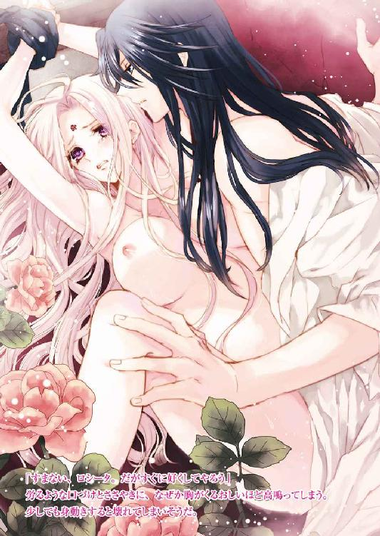
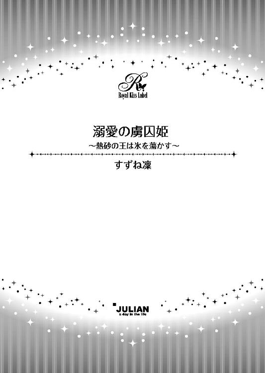
この物語はフィクションであり、実在の人物・団体・事件等とは、いっさい関係ありません。
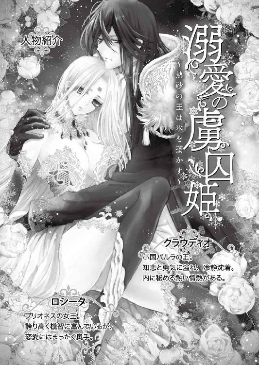
イラスト・ことね壱花
かつて──。
南国と北国はひとつの国だった。だが国王と王妃があまりに仲が悪く、争いを繰り返した。国が二分するほどの内紛が続き、それを案じた神が、国の中央に大きな雪山を造った。そして、王と王妃をそれぞれの国に分け隔ててしまった。引き離されて初めて、二人は互いの大切さに気がついたが、時すでに遅し。国王と王妃は二度と出会うことは叶わず、悲しみに暮れた一生を送った。（大陸古代神話より）
◇ ◇ ◇ ◇ ◇
地下にあるその部屋は、大理石で出来ている。
精緻な葡萄紋様を彫り込んだ壁も、ドーム型の低い天井もすべて大理石で設えてあり、目も眩むばかりに白い。調度品もすべて大理石造りだ。だが、その部屋に窓はひとつもない。天井に、嵌め殺しのガラスの小さな明り取りがあるだけだ。
ここは淫らな調教部屋なのだ。
そこに絶世の美女が捕われ、端整な青年に責められていた。
「ふ......ぁ、あ、も......やぁ......」
ロシータは掠れた声を振り絞る。
彼女は全裸だ。大理石の壁に嵌め込まれた金製の拘束具に、両手を万歳の形で括られている。すらりとした両脚も大きく開かれ、細い足首に拘束具が巻かれている。標本箱の蝶のように壁に止められ、ロシータはその透き通るように白くしなやかな身体を、くるおしげに引き攣らせる。
腰の下まである長く艶やかな金髪、完璧に整った美貌、華奢な身体だが乳房はたわわに弾み、腰も見事に発達している。大きな双眸は、アメジストのような紫色だ。その紫の瞳が、屈辱と快感に潤んでいる。汗ばんだ白い額に施された小さな薔薇の刺青が、彼女が昂るたびに赤みを増して艶かしい。
拘束された彼女の前に、絹のガウンだけを羽織った長身の青年が立っている。
はだけたガウンから覗く胸は日焼けし、鋼のように鍛え上げて引き締まっている。
「どうだ？ 愉悦に屈したか？ 私のものになると誓うか？」
鼻筋が通った彫りの深い整った容貌、知的な深青色の瞳、烏の濡れ羽色の髪の毛はさらりと肩の下まで伸び、ぞくりとするほど美しい。
「だ......れが、あなたなんかに......属国王クラウディオ......！」
ロシータは形のよい紅唇を震わせ、憎々しげにつぶやく。
クラウディオと呼ばれた青年は、かすかに苦笑する。
「属国王とは言ってくれる──どこまでも誇り高い女王だな、ロシータ。だがその強がりも、何処までもつかな」
彼は手にしていた孔雀の羽で、そろりと彼女の紅い乳首の周りをなぞった。
「あ、う......っ」
もう何度もそうやって羽毛で刺激された乳首は、じんじんと凝りきって痛みが伴うほどだ。乳首が刺激されると、下腹部の奥が苦しいくらいに蠢き、熱い情欲がロシータを責め立ててくる。知らず知らず、腰がもじもじと物欲しげに動いてしまう。身体が自由ならば、潤い始めた太腿の狭間を擦り合わせたい。
「淫らな身体だ──秘玉が膨れ上がっているぞ」
クラウディオは羽毛の先で、そろりと彼女の下腹部を撫で回す。薄い恥毛を掻き分け、柔らかな羽で秘玉を掠めるように擦られると、思わず甲高い声を漏らしてしまう。
「あぁっ、あ、やぁっ、そこ......っ」
びくんと腰が浮く。鋭く甘い疼きがそこから全身に広がり、蜜口からとろりと熱い愛液が溢れてきた。
「身体の方が正直だな」
男は羽毛の愛撫を続けながら、ゆっくりと端整な顏を近づけてくる。深青色の瞳にじっと見つめられると、ロシータはなぜか胸騒ぎがして動悸が高まってしまう。まるで蛇に睨まれた蛙のように、身も心も囚われてしまいそうな感覚に陥る。
「ち、近づかないで......っ」
男の熱い息づかいがすぐ側まで迫り、ロシータは顏を背けて消え入りそうな声を出す。
「頬が熱い──私を意識しているのか？」
低い艶っぽい声が耳元でささやく。その声に総毛立つほど感じてしまう。しかし、そんな素振りは見せまいと必死で首を振る。
「あなたには軽蔑しか感じないわ」
「その気位の高さ──正に『氷の女王』という名前にふさわしい」
ふいに男の熱い舌が、耳朶の裏側をねろりと舐った。
「ひ、うぁっ」
震えがくるほどくるおしく甘やかな感覚に、ロシータは悲鳴を上げた。
「固く凍った氷を、私が必ずや溶かしてみせる」
クラウディオは耳孔に熱いささやきを繰り返し、何度も耳の後ろから華奢な首筋に舌を這わせる。その度に、ぞくぞくと痺れが全身を駆け巡り、身体中の血が沸き立つほどに熱くなる。
「や、やぁ、やめて......耳、も、しないで......あぁっ」
怒りの声を上げているつもりなのに、弱々しい懇願のようにしか響かない。
「ああ、白い肌が紅く上気して──たまらなく美しい──ロシータ」
「あ、あぁ、も......っ」
耐えきれない疼きに、目尻に涙が溜まる。自分がはしたなく身悶えている姿を、男があの深青色の目で見ているのだと思うと、あまりの羞恥にぎゅっと目を瞑ってしまう。その勢いでつつーっと大粒の涙が火照った頬を伝った。
「ロシータ──」
クラウディオの唇がちゅっと音を立ててその涙を吸い上げた。
「美しい──涙すら真珠のようだ」
男の唇が頬を這い、ゆっくりロシータの紅唇を覆ってくる。
「ん......う、ぐ、や......っ」
必死に唇を閉じ合わせるが、男のぬるつく舌先が合わせ目を優しくなぞると、力がすうっと脱けてしまう。結んだ唇を割り開かれ、熱い男の舌が口腔に侵入してくる。
「っく、う、ふ......ぅ」
このまま無礼な舌を噛んでやるのだ。そう思うのに、柔らかな舌が口蓋を舐め回し、さらに咽喉奥にまで押し込まれると、息が詰まり抵抗できない。全身から力が抜け、ただ男のなすがまま口中を貪られる。舌を絡めとられ強く吸い上げられると、頭の芯が甘く溶けていく。
「んんっ、は、うぅ、はぁ......っ」
艶かしい鼻声が漏れてしまい、矜持が引き裂かれ羞恥に気が遠くなる。
（憎い、憎いわ──私から何もかも奪ったこの男が──憎い）
胸の奥で必死に叫ぶが、舌を情熱的に吸い上げられる愉悦が甘い毒のように、全身を蝕んでいく。
「ロシータ──気高く美しい女王......」
クラウディオは息継ぎの合間に低くささやく。
「君のすべてを独占したい」
その言葉が心臓を射抜く。身も心も征服されそうな恐ろしい予感に、ロシータはなけなしのプライドを保とうともがく。
「んぅ、だ、れが、あなたなんかに......んんんぅ、ん......」
再び舌を蹂躙され、拒む事すらできない。
屈辱に美貌を歪ませながら、ロシータは男の深い口づけに酔いしれていった──。
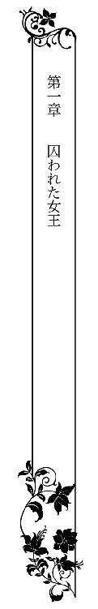
中央大陸をほぼ支配する大国ボルヘスが、突然小国プリオネスに攻め込んできたのは、秋の収穫が終わる頃だった。
その年は豊作だった。実りをすべて刈り取り、国中がほっと安堵に浸り、収穫祭の準備に賑やかに追われている矢先だった。大陸では、収穫時期に戦争を起こすことは禁忌であると、暗黙の了解があった。しかし、傍若無人なボルヘス王は、そんな周知の事実など一蹴したのだ。
突然のボルヘスの侵攻に、何の軍備もしていなかったプリオネスはあっという間に攻め落とされた。王都はボルヘス軍に支配され、王城の周囲は幾重もの騎馬兵が取り囲んだ。
「プリオネスの女王を捕らえよ！」
隊長たちがいっせいに命を下し、地を揺るがすような蹄の音と大音声とともに、ボルヘス軍が城を攻めた。たちまち城は陥落し、城の一番高い塔の上に白旗が掲げられた。
しかし、王城にいるはずの女王の姿はどこにもなかった。
──その頃。
南の国境の砂漠を、数頭の騎馬が全速力で駆け抜けていた。
「この砂漠を脱ければ海岸へ出ます。岩陰に船を隠しております。それで大陸の向こうへ逃れましょう」
先頭を走っていた騎馬の男が肩越しに、背後の白馬に跨がった人物に声をかけた。
「わかった、デメトリオ」
白馬の人物は長いシャツと脚衣に長靴、大きなマントをすっぽり被り、長いショールで頭も顏も覆っている。デメトリオと呼ばれた茶髪に痩身の男は馬に鞭をくれながら、油断無く辺りを警戒している。彼は真っ先に上り勾配の砂地を駆け上がると、馬を止めて後に続く仲間に叫んだ。
「海が見えました！ もう少しです」
彼に続いて勾配を上ろうとした白馬の人物が、ぎくりと右方向に目をやった。
「デメトリオ！ 敵だ！」
右手の高台に、ずらりと並ぶ騎兵の姿があった。中央のひときわ見事な黒馬に跨がった長身の男が、さっと片手を上げた。とたんに、騎兵はいっせいにこちらに向け、急勾配を駈け降りてきた。
「お逃げ下さい！」
白馬の人物を守るように、他の騎馬の男たちが剣を抜いて襲ってくる騎兵を迎えうつ。白馬の人物は馬の腹を思い切り蹴り、一気に勾配を駆け上ろうとした。
その瞬間、恐るべき早さで追いついた黒馬に乗った男が、ひらりと白馬に乗り移った。
「離せ！」
背後から手綱を取られ、白馬の人物が身体を捩り男を振りほどこうとする。しかし、黒馬の男は力任せにその人物の身体を抱え、もろともどうっと砂地に転がり落ちた。
「ロシータ様！」
デメトリオが思わず駈け戻ろうとすると、白馬の人物はさっと顏を上げ、凜とした声を張り上げた。
「逃げよ、デメトリオ！ そなただけでも生き延びよ！ 命令だ！」
一瞬怯んだデメトリオは、そのまま馬の首を返し、海岸線に向けていっさんに逃げていく。
「離せ！ 離せ！」
白馬の人物は自分にのしかかっている黒馬の男の腕の中で、がむしゃらにもがいた。
「無駄な抵抗はよせ。お前の仲間はすべて降伏している」
黒馬の男は静かな声で言う。
白馬の人物は、はっと周囲を見回した。連れの者たちは全員、ねじ伏せられて武器を取り上げられていた。
「あなたも降伏せよ。捕虜として丁重に取り扱う」
男の言葉に、その人物はきっと鋭いまなざしで睨み返した。覆いの間から覗くその双眸は、世にも珍しい紫色の瞳だった。黒馬の男が息を呑み、魅了されたように動きを止めた。
そのわずかな瞬間、白馬の人物は相手の腰からさっと短剣を引き抜いた。
そして躊躇いもせずに自分の喉元に、鋭い切っ先を押し当てた。だがそれよりさらに素早く、黒馬の男の手が剣の柄をなぎ払った。
「あっ」
剣が砂地に落ちる。慌てて掴もうとする白馬の人物の腕を、黒馬の男の腕が捩じ上げた。
「自死などなにになる。大人しく捕縛されろ」
「私に触れるな！ 無礼者！」
あまりに白馬の人物が抵抗するので、黒馬の男は力任せにその頭を鷲掴みにし砂地に押し付けた。その拍子に、頭と顏を覆っていたショールがはらりと剥がれた。
「お──！」
黒馬の男が目を見張る。
年の頃はまだ十七、八か。輝くばかりの長い黄金の髪がたなびき、透けるように白い女性の顏が剥き出しになった。怒りに燃える紫色の瞳、肌理の細かい頬、細い鼻梁、さくらんぼのように紅い唇。大人っぽい美貌にどこかまだあどけなさも残る。そして知的な白い額の中央には、プリオネス王族の印である小さな紅い薔薇の刺青が施されていた──。
黒馬の男がゆっくりと彼女の身体を引き起こした。
女はもはや諦めたのか、抵抗しなかった。
黒馬の男は低い声でつぶやいた。
「プリオネスの女王を確保した」
中央大陸の肥沃な土地を有するボルヘス国は、強大な軍事力にものをいわせ、周囲の小国を次々征服し属国にしていった。ボルヘス王は代々気性が荒く、少しでもその意に反すると判断されると容赦なく、国を丸ごと滅亡させるほどの残虐さをみせるのだ。一種の恐怖政治であるが、従順でありさえすれば大国の庇護のもと、国民には一定の水準の生活は保障された。そのため、各国の王はボルヘスの圧政に苦しみながらも、その支配下に甘んじていた。
広大なボルヘス王都の中央に王城が建っている。堅牢な城壁に囲まれた灰色の城は、天を突くばかりに高くそびえ立ち、周囲を威圧していた。無骨な外観に反して、城の内部は精緻な溝彫りを施した高い円柱と半円アーチをモチーフにし、絵画と彫刻が渾然一体となった豪奢な造りになっていた。
その王城の奥の壁も天井も一面金張りになった謁見の間で、今まさに、囚われたプリオネス国王女ロシータの、取り調べが行われようとしていた。
数段高い階の上にしつらえた、数多の宝石を埋め込んだ玉座に座しているのが、ボルヘス国王だ。
派手な真っ白い鬘を被り、鷲のように鋭い目つきに薄い唇、ピンと立てた口髭、飛び出した頬骨、見るからに酷薄そうな五十代の男だ。彼は大きなレースの襟飾りをつけ真珠をびっしり埋め込んだ上衣に身を包み、膨らんだ半ズボンに絹の靴下、花飾りのついた踵の高い沓を履いている。高価な白貂のマントを羽織り、威風堂々と座っている。
その階の下に、後ろ手を括られた姿で、男装姿のままのロシータが立たされていた。
彼女の脇には、捕らえ手であった黒馬の男が膝を折って控えている。
「ごくろうであった、バルラ王よ。よくぞ女王を生け捕りにした。褒美は後日、望みのものを取らせるぞ」
ボルヘス王は威圧的な低い声を出した。
「はっ」
バルラ王と呼ばれた黒馬の男は、頭を下げた。「バルラ王」と聞いて、側に立っていたロシータはわずかに肩を浮かせ、一瞬彼の方に視線をやった。が、すぐに正面に向き直り胸を張る。ボルヘス王は、彼女の凜とした美貌にいっとき見惚れていた。それからおもむろに口を開く。
「さて、若く麗しき女王よ。お前の国は我が手に落ちた。お前も儂のものになるがよい」
ボルヘス王の言葉に、ロシータは細い顎をくっと引いた。
「残虐で卑怯者のボルヘス王。私はおまえごときに下る気はさらさらない」
鈴を振るように澄んだ可憐な声だ。しかし、言葉は尊厳に満ちている。
短気で有名なボルヘス王の頬に、かっと血が昇った。一瞬玉座の肘置きに載せた両手にぐっと力がこもったが、彼はすぐに狡猾そうににやりとした。
「可愛い顏をして、なかなかに気位が高い。だが強がりもそこまでだ。バルラ王、この小娘の服を剥いでしまえ！」
膝を付いていたバルラ王がぴくりと顏を上げた。彼はわずかに躊躇った後、無言で立ち上かり彼女に近づいた。ロシータは彼に一瞥もくれず、紅唇を噛み締めている。
「失礼御免」
バルラ王は低い声で言うと、素早く彼女のシャツの胸元に手をかけ大きく押し開いた。釦が跳ね飛び、シャツの前がはらりと開く。ふるんとまろやかな乳房が飛び出す。ロシータの綺麗な眉がかすかにひくつく。バルラ王は懐から短剣を出すと、見事な手さばきでシャツと脚衣を引き裂き、まるでゆで卵の殻でも剥くようにロシータの衣服を剥ぎ取ってしまった。
「お──」
ボルヘス王が思わず唸った。
控えの間にいた者全員が息を呑んだ。
神話の女神の彫像のように美しく整った裸体がそこにあった。
血管が透けるほど白い肌、華奢な首筋と肩、張りのある形のよい乳房、なだらかな腹部、すんなり長い手足、そして柔らかそうな太腿の狭間の、淡い金色の恥毛。
ロシータは微動だにせず立っていた。
内心はあまりの屈辱に全身の血が逆流し、泣き叫びたかった。だが、一国の女王としての誇りがそれを許さなかった。
（泣くものか──どんな屈辱にも耐えてみせるわ）
必死に歯を食いしばり、口元にはぎこちない笑みすら浮かべた。だが、絶望と汚辱で膝が小刻みに震えるのをとどめることができない。すぐ側に無表情に立っていたバルラ王が、彼女の膝にちらりと視線をやり、そっと顏を逸らせた。
「これは──美の女神もかくやと思わせるほどの完璧な造形だ」
おもむろにボルヘス王が玉座を立ち、ゆっくりと階を降りてきた。立ち上がると、彼が存外に短躯であるとわかる。彼はそのままロシータの前に立ちふさがった。ボルヘス王の付けている麝香のきつい香りが迫り、ロシータは顏をしかめた。
「まだ、処女であろうか」
ボルヘス王のむっちりした手が、いきなり彼女の乳房を鷲掴んだ。ロシータの全身にぞわっと鳥肌が立った。
「無礼者っ」
考えるより先に、ボルヘス王に向かって唾していた。彼はみるみる顔面蒼白になった。激怒のあまり、こめかみに太い血管が浮いた。ボルヘス王が声高に怒鳴った。
「こ、この小娘を今すぐここで斬り捨てよ！」
壁際に並んで待機していた護衛兵たちが、いっせいに剣を抜いてこちらに迫ってきた。
ロシータはぎゅっと目を閉じた。不思議と死への恐怖はなかった。
（許して我が国の民たち──そして、父上母上、いますぐお側に参ります）
「お待ち下さい！ ──どうか」
ふいによく通るバリトンの声が響いた。微風が起こり、爽やかな柑橘系の香りが鼻腔をくすぐる。
ロシータははっと目を見開いた。
目の前にバルラ王が立っている。長身の彼が立ちふさがると、小柄なロシータの姿はすっかり隠されてしまう形になった。
ぐるりを囲んだ護衛兵たちが、ぴたりと動きを止めた。
「邪魔だてするか、バルラ王！」
怒りを含んだボルヘス王の声に、バルラ王は優雅に膝を折り頭を垂れた。
「偉大なるボルヘス王よ。どうか、戦勝の褒美に、この娘を私にお与え下さい」
ロシータは驚いて目を見開く。ボルヘス王も面食らったような表情になる。バルラ王は最敬礼のまま続ける。
「若い娘を殺すのはもったいない──どうか、私に下げ渡してください」
バルラ王はしばらく口髭を撫で付けていたが、ふいに踵を返して玉座に戻った。そして、どっかと腰を下ろすと面白そうな声を出した。
「ふむ──お前がその荒馬を見事に乗りこなせるか、お手並み拝見といこうか。よい、その小娘は、お前にくれてやる。存分に調教するがいい」
バルラ王はさらに深く頭を垂れた。
「感謝いたします」
ロシータは呆然と立ち尽くしていた。ゆっくりと立ち上がったバルラ王は、くるりと振り返った。間近で改めて見ると思っていた以上に若く、ぞくりとするほど端整で色っぽい容姿をしている。彼のしなやかな手が伸び、ロシータの顎を持ち上げた。そして、男の顏が寄せられる。深い湖のような深く青い目に見つめられ、一瞬心臓がどきんと跳ねた。
「なにを──」
顏を背けようとしたとたん、バルラ王が彼女にだけ聞こえる声でささやいた。
「ここで君が逆らえば、ボルヘス王の逆鱗に触れ、君の国の捕虜は皆殺しにされるぞ──いや、プリオネス自体が消滅させられるかもしれない」
ロシータは金縛りに遭ったように動きを止めた。
その隙に、きつく結ばれた唇をしっとりと覆われてしまう。
「っ!?」
唇を奪われ、ロシータは目を見張る。身を引こうとするより早く、細腰を引き寄せられさらに口づけを仕掛けられる。
「ふ......う、ぅ......んんぅ......」
後ろ手に拘束されているので、突き飛ばす事も叶わない。撫でるような柔らかな唇の動きに、不思議な甘い疼きがどこかに湧き上がってくる。思わず目を瞑ってしまいそうになり、はっとして我に返った。
「──っ」
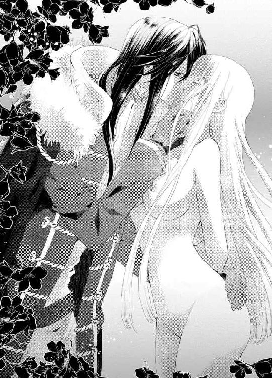
バルラ王が弾かれたように顏を離した。その形のよい唇から、つつーっと紅い血が滴った。ロシータが噛み付いたのだ。男の深青色の瞳に、怒りとも昂りともつかぬ光が宿る。ロシータは息を継ぎながら、負けじと紫の瞳で彼を睨み返す。
ふいに甲高い哄笑が部屋に響いた。
ボルヘス王が腹を抱えて笑っていた。
「は、は、は──これは愉快。砂漠の荒鷲と呼ばれたバルラ王が、じゃじゃ馬に噛み付かれたか。これは手強いな、バルラ王。心せねばな」
バルラ王は唇を拭うと、素早く膝を突いて玉座に最敬礼した。
「これは──見苦しいところをお見せしました」
彼の逞しい背中を凝視しながら、ロシータは口中に残る男の血の味を感じていた。それは──なぜか甘美だった。
バルラ王に下げ渡されたロシータは、その後バルラ軍に混じり一緒に帰国することとなった。剥がれた服の替わりに、簡素だが真新しいドレスを着せられ、彼女用に立派な輿が用意された。しかし、手枷は嵌められたままだった。彼女の輿の側には、黒馬に跨がったバルラ王がぴったりと付いていた。
（おめおめと生き恥を晒してしまった......でも、今は国のために耐えるしかない──いつか、必ず祖国を再建してみせるわ）
揺れる輿の中で、ロシータは懸命に自分に言い聞かせた。
ロシータの母は彼女を産むとすぐに、産褥熱で還らぬ人となった。
王妃をこよなく愛した王は、新たに妃を娶る事も側室を作ることもしなかった。たった一人の跡継ぎであるロシータは、幼い頃から女王になるべく教育を受けて育った。一国を統べる王としての自覚を、もの心ついたときから持たされたのだ。ただの王女であれば、美しく着飾り、花摘みやダンスやカルタ、観劇やお茶会などを楽しみ、蝶よ花よと育てられ、いずれは名のある貴公子の元へ嫁いで子を成すという、平穏な人生が待っていたはずだ。
だがロシータには、そうした乙女らしい楽しみの一切が奪われた。わずか八歳の時に父王が病で崩御し、ロシータは名実共にプリオネスの女王となった。以来十年間、ひたすら国のために身を捧げて生きてきた。自分の幸せより、まず国と民を豊かにすることだけを考えてきた。
それが──ボルヘスの理不尽な侵攻により、彼女のすべてが奪われてしまったのだ。
国も地位も名誉も尊厳も、なにもかも──。
そして今、奴隷のように属国の王に下げ渡され、連行されている。
（私の尊厳を踏みにじったボルヘス王、決して許さない──そしてバルラ王も......）
バルラは、大陸最高峰のアンヘル山を挟んで隣国にあたる。
早々にボルヘス傘下に入り、属国となっていた。
何の抵抗もせず唯々諾々と支配下に国を置いたバルラ王を、ロシータは内心蔑んでいた。彼女から見れば、彼は自分の王位にしがみつくだけの意気地なしであった。
だが──初めて顏を合わせたバルラ王は、想像していた人物とは違っていた。美々しく逞しく知性にあふれている。敵の属国王でなければ、心奪われてしまいそうなほどに──。
（私ったら──何を考えているの）
ロシータは首を振った。露程にも、あの男を好ましいなどと思ってはいけない。あと一歩で脱出できるところを彼に囚われ、憎いボルヘス王の面前で全裸にされて汚辱にまみれた。初めての口づけさえ、あの男に奪われたのだ。
まだ唇に、バルラ王のしっとりした唇の感触が残っている。あの時の口づけを思い出すと、にわかに脈動が速まり息が苦しくなる。
（どうしたの？ こんな気持ち、知らない──なぜこんなに胸がざわつくの？）
ロシータは不可解な自分の心の動きに、戸惑うばかりだった。
丸一日かけ、一行はバルラ国に辿り着いた。
ふいに輿の御簾が外側から上げられた。飛び込んできた眩い日差しに、ロシータは思わず目を眇める。太陽を背に、バルラ王がこちらに微笑んでいた。その姿があまりに神々しく見え、胸がきゅんと疼いた。
「ようこそ我が城へ──プリオネス女王」
ロシータはそろそろと目を見開く。
バルラ王の背後に、白亜の美しい城が建ってる。真っ白な円柱とアーチを組み合わせた見事なアーケード。そして、その城の背後にそびえる美しい雪山──。
「アンヘル山......」
あの山の向こうに、奪われた祖国がある──ロシータの心が、悲しみと怒りできりきりと痛んだ。
再び御簾を下ろされ輿のまま、城内に入った。
かなり城の奥深くまで運ばれた気がした。やがて静かに輿が床に下ろされた。
「下がってよい。後は私が──」
くぐもったバルラ王の声がし、複数の足音が部屋を後にする。ほどなく、御簾が持ち上げられた。
「出なさい──」
ロシータは用心深く御簾から顏を覗かせた。
王の私室だろうか。長椅子とテーブル、揺り椅子、チェストだけの簡素な部屋だった。ただどの調度品も精緻な螺鈿を施した非常に高級なものだ。バルコニーに続く大きな観音開きの窓の外に、アンヘル山の峰が見えた。
揺り椅子に深く腰を下ろしているバルラ王は、ゆったりした長いチュニックのような部屋着を羽織り、寛いだ雰囲気だ。
「こちらへ来なさい。縛めを解いてやろう」
ロシータはそろそろと揺り椅子の上の彼に近づく。背中を向けると、縛めが素早く解かれた。長い間括られていたので、両手が痺れていた。力なく両腕を垂らしていると、おもむろに男の腕が伸び、痺れた腕を優しく擦った。異性に触れられることに慣れていないロシータが、びくりと身体を竦ませると、バルラ王が静かな声で言う。
「安心しろ。逆らわなければ乱暴はしない。可哀想に、両腕がすっかり血の気が失せてしまって──」
男は真剣な表情で、ロシータの腕を擦り続ける。大きな掌は温かく、感覚の無かった腕に徐々に血が巡ってくる。ロシータは男の思いもかけない優しさにどうしてよいかわからず、背中を向けたまま黙ってされるがままになっていた。
「ロシータ」
ふいに名前をよばれ、はっと振り向く。バルラ王がこちらをじっと見上げていた。視線が絡むと、男がもう一度名前を呼んだ。
「ロシータ、君を名前で呼んでかまわぬか？」
深青色の目に吸い込まれそうな気持ちになり、ロシータはぶるっと首を振り冷淡な声を出す。
「好きに呼べばいいわ。私はお前の捕虜だから、バルラ王」
男の表情がわずかに曇ったように見えた。
「クラウディオだ。私の名前は、クラウディオ。そう呼んでくれ」
（クラウディオ──彼にぴったりの美しい名前だわ）
胸の内でそう思ったが、口では無愛想に答えた。
「命令ならば、従うしかないわ」
クラウディオの頬にわずかに血が昇る。
「君はなにか勘違いしている。私は君を奴隷として扱うつもりはない。賓客として丁重にもてなす」
ロシータは苦い笑いを浮かべる。
「国を奪われ異国に囚われている私にとって、どちらでも同じことよ。私は褒美として、あなたに下げ渡された──クラウディオ」
初めてその名前を口にすると、口の中で甘く蕩けるようだ。クラウディオの綺麗な眉がぴくりと上がった。
「あの場ではボルヘス王の手前、ああ言うしかなかったのだ。君の命を助けるためだ」
ロシータはうろんな目でクラウディオを見た。
「私の命？ なぜ？」
クラウディオは彼女の紫の瞳を見据えて、はっきりと言った。
「私は、君が欲しかった。我が手にしたかったのだ」
「──？」
怒りとも昂りともつかない感情が、ロシータの胸に迫り上る。自分を全裸に剥き、無造作に乳房に触れてきたボルヘス王の、卑猥な顔つきが目の前に浮かぶ。
（この男も──私を征服し、蹂躙したいのだわ）
ロシータはありったけの侮蔑を込め、冷ややかにクラウディオを睨みつけた。
「私は誰のものにもならない──この無礼な手を離して！」
彼女はまだ自分の腕を擦っていた男の手を、邪険に振り払った。クラウディオが心外そうに目を見開く。
「この期に及んで、あくまで気高いのだな。ますます気に入った」
ぐいっと乱暴に手首を掴まれ、引き寄せられた。
「あっ」
彼の胸に倒れ込むように抱きすくめられる。最初に嗅いだ時と同じ柑橘系のオーデコロンの香りに、心臓がどきんと跳ね上がった。そのときめきを恐怖と勘違いしたロシータは、彼の腕の中で激しく身を捩った。
「離しなさい！ 私に触れないで！ その忌まわしい手を退けて！」
華奢な腕を振り回して暴れる彼女を、クラウディオの逞しい腕はやすやすと押さえ込んだ。
「誇り高いロシータ。だが、なんて初心なんだろう、君は──たまらない」
男が感に堪えたような声を出し、細腰をぐっと引きつけ、その端整な顏を近づけてくる。口づけされる、と感じたロシータは声を張り上げる。
「やめて！ また噛み付くわよ」
すると男は獣じみた表情で、にやりと笑う。
「いいね──君ほどに手応えのある乙女は初めてだ。なにがなんでも征服したくなる」
「誰が──っ、ん、ぅっ」
罵声を浴びせようとした唇を、激しく奪われる。がちっと歯が当たるくぐもった音が響くほどに、激しい口づけだった。
「んんぅ、ん、んんっ......っ」
熱い舌が乱暴に口中に押し入り、ぬるぬると掻き回してきた。咽喉奥まで舌を突き入れられ、ロシータは息もできず身を強ばらせた。
こんな獰猛で激しい口づけがあることなど、知らなかった。
「は......く、う、ふぅ......う......」
怯えて逃げ回る舌を捕らえられ、強く吸い上げられると不可思議な興奮が湧き上がり、頭が真っ白になった。必死で彼の胸を押し退けようとする手が、みるみる脱力してしまう。
「はぁ......んん、んぅ、や......は......」
顏を背けようとしても追いつかれ、さらに深い口づけを仕掛けられる。痛いほどきつく舌を絡め取られ、音を立てて何度も吸い上げられると、全身の血が沸き立ち、甘美な快感が走り抜ける。身体の奥深いところに、感じたことのない甘い疼きが生まれてくる。
（これはなに？ こんな気持ち、知らない──だめ、だめ、流されては、だめ......）
霞んでいく頭の隅で、必死に自分を叱咤するが、溢れる唾液を音を立てて吸い上げられ、猛々しく口中を舐り回されると、次第に甘えるような鼻声が漏れてしまう。羞恥にかあっと全身が熱くなる。
「ん......ふ、ぁ、ふぁ、あ......」
身体が弛緩し、男のなすがままに口腔を貪られた。生まれて初めて知る官能の疼きに、思考は麻痺し、ただただ愉悦に翻弄されてしまう。丸ごと魂をもっていかれそうな愉悦。
長い長い口づけの果てに、息も絶え絶えになりぐったりと男の胸に身を預けてしまった。彼女の抵抗が止まったと知るや否や、クラウディオはゆっくりと唇を離した。二人の唇の間に、唾液の銀の糸が尾を引き、ぷつりと切れる。
「ロシータ──誇り高く美しいロシータ」
クラウディオは紅潮したロシータの頬や額に唇を押し当てて、低い声でささやく。
「君が欲しい──こんなにも女性を欲しいと思ったことはない」
胸が震えるほど真摯な声に、ロシータは戸惑う。まるで告白のように情熱的な言葉。今まで女王として厳格に冷徹に振る舞ってきた彼女を、周囲は、
「氷の女王」
と、密かに呼び慣らわし、敬服しながらも畏怖の念を抱いて接していた。彼女を女性として扱うものなど皆無で、ロシータもまたそれが当然と信じて生きてきた。ひとりの女として、これほどまでに直截に求められた経験などなかった。
（私──どうしたの？ 心臓がどきどきして破裂しそう──この気持ちは、なに？）
男の深青色の目を凝視する。彼は力のこもった視線を返してくる。酩酊しそうなほど頭がくらくらし、なにもかも投げ出したい感情に囚われる。だが、ロシータの中に長年培われてきた女王の誇りが、それを許さなかった。朦朧とした頭を振って、最後の抵抗を試みる。
「や──めて......これ以上、私に触れないで──穢らわしい属国王！」
クラウディオの表情がみるみる激昂してくる。
「私が──穢らわしいか？」
抱きかかえる腕が、万力のようにぎゅうっと締まる。骨が軋むほど抱きしめられ、ロシータは悲鳴を上げる。
「っ──痛い、離して......」
しかしクラウディオはますますきつく彼女を締め付け、怒りを抑えたような平坦な声を出す。
「離すものか──君は私のものだ、私だけのものだ──君のすべてを征服するのは、私だ」
にわかにロシータの中に、処女であるがゆえの恐怖が膨れ上がった。
（身体を奪われる──！）
これから男が自分になにをしかけようとするかおぼろに想像し、戦慄いた。彼女はありったけの力を込めて身を捩り、声を荒げた。
「離して！ いやぁ！ いやなの！ いやよぉ！」
紫の瞳から、ほろほろと大粒の涙がこぼれた。
矜持もプライドもかなぐり捨てて泣き叫ぶ彼女に、クラウディオは彼女が清らかな乙女だと気づいたようだ。やんわり腕の力を緩め、ロシータの柔らかな金髪に顏を埋め、あやすようにささやく。
「大丈夫──ロシータ、怖くない──大丈夫だ──私にその身を任せて」
その深みのあるバリトンの声は、ロシータの背中をぞくぞく震わせる。誘う声に、わずかに気持ちが揺らぐ。しかし、やはり処女の慎みの方が勝り、いやいやと首を振る。
「やめて、お願い......怖い......」
子供のように啜り泣く彼女を、クラウディオはさっと横抱きにして立ち上がった。
「あっ」
落ちるかもという恐怖に、思わず彼の首にしがみついてしまう。彼はそのまま大きな長椅子に移動し、強ばった彼女の身体をそっと横たわらせた。逃れようとするロシータを、彼は上からのしかかるようにして押さえ込む。
「逃さない、ロシータ──君の初めてを奪う」
ロシータは蛇に睨まれた蛙のようにすくみ上がった。男の表情には懇願も脅迫も拒む、断固とした決意があった。穢されるくらいなら、舌を噛んでしまおうかと思う。しかし次の瞬間、残虐なボルヘス王の顏を思い出す。
（私が自死したら、かの王が、残された国民にどんなに非道なことをするか──）
死ぬことはできない。
ではもはや覚悟を決め、どんなことをされても歯を食いしばって耐えるだけだ。
唇を引き締め悲壮な表情をした彼女を、クラウディオは痛ましげに見下ろした。彼は手を伸ばし、側の小卓の引き出しからなにか取り出した。クリスタルの小瓶だ。中に蜂蜜色の液体が入っている。
「本当はこんなものを使いたくないのだが──君の初めてを、辛いものにしたくない」
クラウディオは瓶の蓋を取ると、瓶を傾けて中の液体を口に含んだ。そして、彼女の顎を持ち上げ深く唇を覆った。
「う......ぐ......」
息苦しくて喘いだとたん、開いた唇の隙間からとろりとした液体が流れ込んできた。濃厚な蜂蜜のような味だが、舌に刺すような苦味が残った。思わず嚥下すると、たちまち胃の腑がかあっと火が着いたように熱くなってくる。
「なに？......何を飲ませたの？」
怯えた目をした彼女に、クラウディオが安心させるように、自分の口中に残っていた液体をごくりと呑み込んだ。
「毒などではない、大丈夫だ。閨で使う媚薬だ。気持ちも身体もほぐれてくる」
「媚薬──ですって、そんなもの──あっ」
ふいに服の上から胸元を弄られた。男の大きな掌が、まろやかな乳房を掬い上げるように何度も揉みしだく。
「なんと柔らかい──」
クラウディオが感に堪えたような声を漏らし、乳房を捏ね回す。
「やめて、触らないで......あ、ぁ......く......」
無体に触れられて拒絶したいのに、なぜか強い刺激を感じて全身がかっかと火照ってくる。唇からはしたない声が漏れてしまう。
「もう効いてきたか？ それならもっと感じさせてやろう」
男は素早くドレスの上衣の釦を外し、コルセットの紐も器用に解いてしまう。ふるんと形のよい乳房がまろび出る。
「ああっ、いやぁっ」
あまりの羞恥にロシータは悲鳴を上げる。慌てて両手で胸を隠そうとすると、両手首をつかまれて頭の上にひとまとめに押さえつけられてしまう。びくとも動けない。ふいに外気に晒された乳房はすでに固く張りつめ、立ち上がった乳首が深紅色に染まっている。
「もう乳首がこんなに固くなって──可愛い。雪原に咲く早咲きの桜の花のようだ」
クラウディオの熱い視線を感じ、恥ずかしいのにさらに乳首がじんじんして凝ってしまうのを感じる。淫らな感覚が肥大していく。
「いや、見ないで......いやぁ......」
どんどん全身の血が熱くなり、息がせわしなく上がってしまう。拒絶の言葉すら、何処かに媚態を含んでしまい、羞恥でめまいがしそうだ。
「ロシータ──」
男の顏が乳房の間に埋められる。男のさらりとした黒髪の感触にすら、ぞくぞく背中が震えてしまう。彼の高い鼻梁が乳丘を撫で回すと、さらに乳首が固くなる。ふいに熱い口腔に乳首を含まれた。
「やぁっ、あ、あ、だめ、あ......」
ぬるつく舌が凝った乳首を周囲を這い回り、ちゅうっと音を立てて吸い付いてきた。痺れるような甘い疼きが駆け抜け、ロシータは背中を仰け反らせて喘いだ。信じられないくらい気持ちが好かったのだ。
「んんぅ、あ、や、しないで......胸、舐めちゃ......やあぁ、ん......」
強く吸われるたびに、甘やかな喜悦が生まれ、ロシータは艶かしい声を漏らして身震いする。ボルヘス王に触れられた時は、嫌悪と恐怖しか感じなかったのに、妖しい媚薬のせいだろうか、クラウディオの舌の動きが心地好くてたまらない。
「そんないたいけな声を出されては、もっと苛めたくなる」
クラウディオは深いため息を漏らし、唇に挟んだ乳首を舌先で小刻みに弾く。
「っ、く、あ、だめ、だめ、しないで、ぁ、あ」
次から次へ愉悦が襲い、ロシータは長椅子に背中を押し付けて身悶えた。乳首から生まれた快感は下腹部の奥へ走り、あらぬ部分が淫らに疼き焦れったい。
（これはなに？ 私、すごく昂っている。身体中が恐ろしいくらい敏感になって、感じやすくなって──嘘よ、嫌なのに──嫌なはずなのに）
頬を紅潮させせつなげに喘ぐロシータの表情を見つめながら、クラウディオは片手で器用にスカートを外していく。
「やっ、だめ、だめ......っ」
一糸まとわぬ姿に剥かれていくのに、ロシータは頼りない声を上げることしかできない。熱く燃え上がった身体には力が入らない。あっという間に下腹部まで露わになり、ロシータは屈辱に唇を噛み締め、せめてもの抵抗に両脚をぎゅっと閉じ合わせた。顏を背け、彼を無視しようとするが、自分のあらぬ部分に刺さるように強い男の視線を感じ、肌が粟立ってしまう。
「美しい──君は何も装わなくても、女神のように美しい」
クラウディオが感嘆したような声を出す。
「誰にも見せたことのない、君のすべてを見たい」
男の手が太腿の狭間にかかるのを感じ、ロシータはなけなしの力を振り絞って身じろぎした。
「やめてっ......もう、お願い、いやぁっ」
脚をばたばたさせ、触られまいとする。クラウディオがいったん動きを止め、苦笑まじりに言う。
「これは──驚くべき精神力だ。この媚薬を盛られて、まだ抵抗できるとは。本当に、君は征服のしがいがある」
ロシータは涙目で懇願する。
「これ以上......許して......本当に怖いの」
高潔な女王が見せるあどけない表情に、クラウディオはぐっと咽喉の奥を鳴らした。
「そんな可愛い顏をして──ロシータ、君はなんて──」
彼は熱に浮かされたような表情で自分の部屋着の腰帯を解くと、それでロシータの両手首を括り長椅子の腕置きに縛り付けた。
「やっ......」
拘束され屈辱的なはずなのに、異様な興奮が全身に走る。不可解な期待に、心臓がどきどき跳ねる。それでも必死で自分を鼓舞し、ロシータは憎々しげに男を睨んだ。
「酷い、酷い、許さない......あなたを決して──」
「ののしるがいい──ロシータ、すぐにその口から、甘い懇願の台詞を引き出してみせる」
クラウディオの顏も異様に昂っている。彼は両手で閉じ合わさった彼女の両脚を、難なく抉じ開けてしまう。これ以上ないくらい開脚させられ、ぱっくりと秘部が露わになった。
「いやあぁ、ああっ」
引き裂くような悲鳴が部屋に響く。自分でも見たこともない恥ずかしい場所が、憎むべき男の眼前にまざまざと晒されたのだ。
「見ないで、お願い、いやぁ......っ」
あまりの羞恥に気が遠くなる。ぎゅっと目を閉じてしまうが、男の視線が痛いほどに突き刺さるのがわかる。するとなぜか秘部がひくひく蠢いて、なにかがとろりと溢れてくる感覚がする。
「綺麗だ──朝咲きの淡い紅薔薇のようだ──私だけが知った、君の秘密の花園」
クラウディオがまるで歌うような深みのある声で、恥ずかしい部分を描写する。そんな風に言って欲しくないのに、あらぬ部分がせつなくきゅうっと締まる。ふいに男の長い指が、無防備に開いた秘所をそろりとなぞった。
「きゃあっ」
驚愕して腰がびくりと浮いた。
「しかも、この紅薔薇はもうたっぷり朝露にまみれている」
男の指が、くちゅりと蜜口を掻き回した。湿り気を帯びた淫猥な音が立った。その刹那、痺れるような快感が下肢に走り、ロシータは狼狽した。
「あ、あっ、あ、いやぁっ......」
二本の指がしとどに濡れてほころんだ陰唇を、くちゅくちゅと撫で擦る。
「そら、どんどん蜜が溢れてきた」
クラウディオは浅瀬からさらに隘路の中へ、ぐっと指を突き入れた。
「ひぅう、うぁあ」
固い異物が侵入する感覚に、ロシータは息を呑む。
「やはり狭いな──だが、熱く締めつけてくる」
長い指が膣腔の中で蠢くと、背中にぞくぞく悪寒が走る。汚辱の極みな行為をされているのに、蕩けそうなほど心地好い。それどころか、隘路がひくついて、もっと奥へと男の指を引き込もうとする。
（負けてはだめ──こんなになってしまうのは、媚薬のせいよ。こんな屈辱的なこと、許されない──のに......）
頭が煮え立って、思考がまとまらない。全神経が男の指の動きを追ってしまう。指を鉤型ににして、愛蜜を掻き出すように擦られると、甘い疼きがどんどん膨れ上がり、はしたない声が溢れてくるのを止められない。
「あ......はぁ、あ、やめ......あ、あぁ、あ......」
男の指戯から逃れようと、腰を浮かせてくねらせるが、それが逆に物欲しげに突き出すような格好になってしまう。
「好くなってきたろう？ 怖いことなどなにもない、ロシータ。もっと欲しいだろう？」
「だ、誰が......ひ、うぁ、あ......」
「素直になるがいい──与えられる愉悦に身を任せて」
「や......も、しないで......あぁ、だめ......だめ......」
男の指が立てる淫猥な水音が、さらに大きくなる。耳を塞ぎたいのに両手が拘束され、ただ激しい羞恥に身を灼かれ、自分の身体の淫らな反応に戸惑う。
「ああ愛らしい──誇り高い君が乱れる様がたまらない」
クラウディオの声がせつなくなる。ぐちゅぐちゅと陰唇を掻き回していた指が、ふいに恥毛のすぐ下に佇む秘玉をぬるりと擦り上げた。とたんに、雷のような鋭い喜悦が背中から脳芯に走り、ロシータはびくんと背中を仰け反らせた。
「くは、あ、なに？ そこなに？ だめ、しちゃ、だめぇっ」
信じられない強烈な刺激に、思わず目を見開いてしまう。
「ここの可愛らしい真珠の粒が、君の一番感じやすい部分だよ」
溢れる愛液を指の腹に受け、それを塗り込めるように秘玉をくりくりと抉じられると、下肢が蕩けそうなほどの愉悦が全身を駆け巡る。それが何度も繰り返し襲ってくる。
「ひ、あ、だめ、そこ、しないで、あ、ああ、あ......」
耐えきれない快感にもうやめて欲しいのに、もっと触れて欲しいとばかりに腰が無意識に前に突き出してしまう。そして痺れるような喜悦が走るたび、子宮の奥がきゅうっと収縮し、膣襞が何かで満たして欲しくてせつなく蠢く。自分でもはっきりわかるくらい、とろとろと淫らな蜜が溢れ出て、股間をぐっしょり濡らしてしまう。
「も、やぁ、あ、また、だめ、もう、もう......っ」
もはやはしたない嬌声を押さえる余裕もない。ただ男の指が与える喜悦に乱されていく。
「乱れる君はたまらなく魅力的だ。奥がひくひくして、私を求めている」
おもむろに秘玉を弄っていた指が、再びぐぷりと膣腔の奥へ突き入れられる。親指で秘玉を転がしながら、長い中指がその裏側の内壁を抉った。
「......んん、あ、だめ、そこだめ、なにか......洩れて......いやぁあっ」
じんと下腹部が痺れ、強い尿意にも似た感覚が襲ってきた。事実、じゅくりと大量の液体が溢れ出てくる。粗相でもしてしまったのかと、脳裏は恥辱と愉悦で沸騰する。
「ここが弱いのだな、ロシータ。かまわない、一度達するがいい」
クラウディオは速度を上げて、その部分を執拗に突き上げてきた。ぴちゃぴちゃと淫蜜の泡立つ音が耳孔に響き、耐え難い快感が加速度的に膨れ上がり、ロシータをどこかに追い上げていく。
「あ、あああぁ、あ、やめ、て、なにか......あぁ、だめ、だめぇ、だめぇっ」
全身の血が快感とともに頭に集まってくる。全身が強ばり、爪先まできゅうっと力がこもる。
「すごい締め付けだ、ロシータ。いいんだよ、感じるままに──」
クラウディオはいっそう熱を込めて、激しく指を抜き差しする。
「や、あ、なにか、来る、あ、やぁ、やああぁあぁっ」
ロシータは艶やかな金髪を振り乱し、がくがくと腰を痙攣させた。隘路の奥で快感の大波がうねった。ロシータは四肢を突っ張らせ、目を見開いて息を呑んだ。瞼の裏で火花が弾ける。「は、っ、あ、あぁ、あぁあ、あ......」
達した瞬間、男が指を勢いよく引き抜いた。じゅわっと大量の愛蜜が噴き出し、長椅子の高価なカバーに淫らな染みを作った。
「はあっ、は......はぁ、ぁ......」
ふいに全身が弛緩し、長椅子にぐったりと身を沈め、まろやかな乳房を波打たせて息を継ぐ。脱力し切って、開かされた脚を閉じることもできない。呼吸に合わせて、濡れそぼった蜜口がひくひく開閉する。生まれて初めての絶頂に、小刻みに身体を震わせているロシータの妖艶な表情を、クラウディオがじっと見つめた。
「しがらみから解放された君は、この上なく魅力的だ」
「ひ......どい、こんなにして......ひどいわ......」
恨みがましく男を睨みつけようとしても、快感に満たされた状態では、蕩けきった濡れた目つきにしかならない。
「本当は、こうされたかったのではないか？ 君は拘束されたと思っているが、私は逆に君を解放したと思っている」
ロシータが耳朶までかっと血を昇らせた。
「な、にを......馬鹿なことを言わないで......私は、無理矢理......」
人生のすべてをかけて積み上げてきた女王としての矜持を、指一本で崩壊させられた事実にが、口惜しい。なのに、全身を満たすこの開放感はなんだろう。男の深青色の瞳と目を合わせると、何もかも見透かされそうで、ぷいっと顏を背けた。その拗ねた表情が何とも愛らしく、クラウディオがふっと笑いを浮かべる気配がした。
「あくまで意地を張るのだな。そんな強がりも、すぐに私が全部剥ぎ取ってやる」
みしっと長椅子が軋んだ。
ロシータは、はっと顏を上げた。
部屋着を脱ぎ去って全裸になったクラウディオが、のしかかっていた。男の鍛え上げた肉体は、鋼のように引き締まり、完璧な美しさだ。彼の身体から、オーデコロンと汗の混じった、刺激的な雄の匂いがした。長めの黒髪が知的な額にかかり、欲望に光る目は鷹のように鋭く、それがまた端整な顏に野性味を加え、ぞっとするほど魅力的だ。ロシータは呆けたように彼に見惚れてしまっていた。だが、視線が男の股間を捉えたとたん、彼女は恐怖に唇を戦慄かせた。
「きゃ......っ」
生まれて初めて見る男の欲望の昂りは、彼女の想像を遥かに超え、禍々しく凶暴だった。太く逞しく赤黒い肉棒が、臍に付きそうなほど反り返り、傘の開いた先端に欲望の雫を溜めている。クラウディオは、その灼熱の先端をゆっくりとロシータの蜜口に押し当ててくる。灼け付くように熱くみっしりした感触に、ロシータは腰を引いて悲鳴を上げた。
「や、だめ、そんなもの、挿入らない......無理、無理です、だめ......っ」
毅然としようとしたのに、恐怖で幼子のような頼りない声しか出せない。
クラウディオは片手で自分の欲望をあやしながら、視線はまっすぐ彼女を見つめる。
「怖くはない、いといけなロシータ──もう充分君は解れている」
濡れきった蜜口に、つぷりと硬い先端が押し入り、浅瀬をくちゅくちゅと掻き回す。感じやすくなった陰唇を太い肉茎がぬるぬると滑ると、次第に心地好くなってくる。
「あ......あぁ、あ......」
彼女から甘い鼻声が漏れると、クラウディオはロシータの片脚を抱え上げ、ゆっくりと腰を押し進めた。ぐぐっと狭い隘路を押し広げて、剛棒が押し入ってきた。
「ひ、う、うぁっ、痛......っ」
息も止まりそうなほどの圧迫感に、ロシータは息を詰めて全身を硬直させた。動きを止めた
クラウディオが、息を荒くしてささやく。
「痛いか？ だがもう私も限界だ──君が欲しくてたまらない」
次の瞬間、極太の肉棹が容赦なく一気に最奥へ突き入れられた。
「っ、ああぁ、うああぁぁ」
めりめりと内側から引き裂かれるような激痛に、ロシータは絶叫する。
「やあぁ、もう挿入れないで、無理、だめ......っ」
息もできない衝撃に、ロシータは口をぱくぱくさせて呻いた。
「もう──全部挿入ったよ」
男が深いため息をつき、彼女の感触を味わうように、しばし動きを止めた。
「あ......ぁ、苦し......あぁ、あ」
身体の中心がめいっぱい異物で満たされ、胸に不可思議なせつなさが溢れてくる。
（とうとうこの男に奪われてしまった......）
口惜しさと痛みに、目尻に涙があふれ頬を伝う。その涙を、クラウディオが顏を寄せて吸い上げた。そのまま汗ばんだ額に、薔薇の刺青に、乱れた金髪に、半開きの唇に、口づけを繰り返す。
「苦しいか、ロシータ。だがすぐに好くしてやろう」
労るような口づけとささやきに、なぜか胸がくるおしいほど高鳴ってしまう。少しでも身動きすると壊れてしまいそうだ。だが、下腹部の太い衝動が灼け付くように熱くなってきて、そこからじんわり痛み以外の感覚が生まれてくる。
「動くぞ」
クラウディオがゆるゆると腰を揺さぶり始める。
「や、あ、動かさないで、怖い......っ」
必死に懇願するロシータの頬や目尻に、あやすように唇を押し付けながら、男がささやく。
「怖くない、すぐ慣れる、息を吐いて、力を抜いて」
「あ、あぁ......」
男の声があまりに優しいので、思わず言われた通りに詰めていた息を吐いた。すると、子宮の奥からとろとろ蜜が溢れ、軋んでいた隘路が滑らかになる。肉棒の抽挿が容易になると、痛みは和らぎその代わりに、熱く灼け付くような快感がじわじわ疼き上がってきた。
「は、あ......あぁ、あ......ん」
「そう、もう痛くないか？ ロシータ？」
彼女が密かな艶かしい鼻声を漏らしだしたのを見て取るや、クラウディオは徐々に腰の動きを激しくしていく。揺さぶられるたびに深い愉悦が生まれ、陵辱されているはずなのにもっと激しく突き上げて欲しい欲求に囚われ、ロシータは狼狽する。
「あ、いや、も、そんなに、いやぁ......」
「いやではないだろう、これはどうだ？」
男は雁首ぎりぎりまで太棹を抜くと、ずんと力任せに子宮口まで穿った。瞼の裏が真っ白に染まるような衝撃が走り、ロシータは甘い悲鳴を上げた。
「あぁっ？ ああぁぁ、ああぁあぁっ」
先ほど指で弄られた時の快感とは、比べ物にならないくらい深く全身の隅々まで犯す喜悦に、目を見開いて喘ぐ。
「いい声だ、可愛い、もっと鳴かせたい」
男の息が忙しくなる。彼は激情のまま、性急に抽挿を始める。腰をぐいぐいと動かし、熱く沸きたつ隘路を抉ってくる。
「あっ、あっ、だめっ、あ、そんなに......っ」
脈動する肉棒を疼ききった膣襞が擦り上げるたび、ぞくぞく感じてしまい、はしたない声が止められない。憎むべき男に穢されているのに、目も眩むような愉悦に翻弄され、ロシータは口惜しさに涙ぐむ。これなら激痛が続く方がどんなにか救われたろう。愛する祖国のために、自分が崇高な生贄になったのだと思い込めれば、どんな屈辱にも耐えられるはずだった。それなのに、媚薬のせいなのか、男が穿つたびに得体の知れない愉悦は膨れ上がり、自分のものとも思えない嬌声が唇から溢れてしまう。
「は、はぁ、あ、や、なにこれ......あぁ、だめ、だめ......っ」
逃れる事のできない快感に支配され、ロシータは紅潮した顔を左右に降り続ける。
「そうだ、私だけを感じるんだ──君を支配するのは、私だ」
クラウディオは額に珠のような汗を浮かべ、突き上げるだけではなく腰を押し回すようにして、深く抉ってくる。そうされると硬く太い先端がごりごりと子宮口まで掻き回し、瞼の裏に何度も喜悦の火花が弾ける。もはやロシータには、理性の欠片も残っていなかった。ただ、男の与える未知の媚悦にくるわされ乱され続ける。
「きゃぅ、それ、だめ、だめ、しないで、おかしく......っ」
掻き出された愛液がちゃぷちゃぷと淫猥な音を響かせる。それを恥ずかしく思う余裕も無い。甘い咽び泣きを漏らし、身悶えるだけだ。
「いい子だ、おかしくなって──もっとだ、もっと自分を解放して」
彼女の乱れた金髪に顏を埋め、男は感じ入った艶っぽい声を漏らす。耳元でそんな声でささやかれると、それだけで全身が粟立ちひどく満たされた気持ちになる。一度動きを緩めたクラウディオは、太い亀頭でねっとりと熟れた膣腔を掻き回してくる。そうされると、がむしゃらに突き上げられるのとはまた違った、深い悦楽が生まれてくる。
「ん、ふ、は、はぁ、は......」
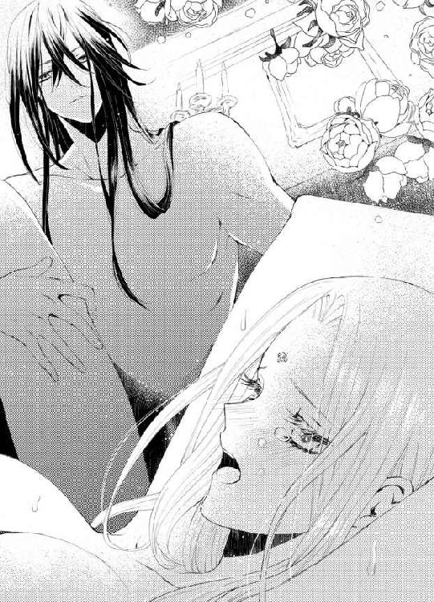
少し身体の強ばりが解け、余計に身体に埋め込まれた男の欲望の卑猥な造形がつぶさに感じられた。呼吸をするたび、無意識に媚襞が脈打つ肉茎を締め付け、クラウディオが密やかなため息をつく。
「ああ──ロシータ、君の中は素晴らしい──うねって締めつけてくる」
「は、ぁ、あ、や......はぁ......」
卑猥な言葉を投げかけられているのに、胸が高鳴ってさらに隘路が収斂してしまう。それに刺激されたのか、男が再び抽挿を開始する。さらに膨れた先端が、秘玉のすぐ裏側の膣壁を抉ったとたん、激しい尿意にも似た感覚に襲われ下腹部がきゅーんと痺れた。
「ひ、あ、だめ、そこ、なんか、漏れて......いやぁ、突かないで......っ」
「ここが弱いのだな──そうか、もっと乱れるがいい」
ロシータの性感帯を探り当てたクラウディオが、かさにかかってその部分だけをずんずんと突き上げてくる。ロシータは背中を仰け反らしてぜいぜい喘いだ。
「いやぁっ、だめ、しないで、本当に......あぁ、なにか、出ちゃう......っ、だめっ」
太腿がぶるぶると痙攣した。
「うぁ、あ、出ちゃ......あぁ、だめだめぇ......」
感じ切った瞬間、熱く大量の淫潮が溢れ、男が雁首を引き出す動きに合わせて、じゅぶじゅぶと結合部から溢れ出てしまった。
「やぁ、あ、恥ずかしい、いやぁ、ううっ......私......っ」
まるで粗相をしてしまったかのように結合部も股間もびしょ濡れになり、ロシータは羞恥に啜り泣く。
「なにも恥ずかしくはない──これは君が最高に感じてしまったという証だ──男として、こんなに嬉しいことはないよ」
クラウディオは長椅子の上に両手を着くと、最後の仕上げとばかりに一心不乱に腰を穿ち出す。
「ああもう、許し......あぁ、また、またぁ......っ」
何度も大きな愉悦の波に襲われ、もはや欲望だけを剥き出しにされ、ロシータはしなやかな身体をくねらせて乱れた。頭は真っ白になり、自分が獣のように声を上げていることにも気がつかない。
「あ、なにか......あぁ、来る、あぁ、どうしよう、おかしく......あぁ、だめ......っ」
喜悦の渦の中から、さらに激しい絶頂の波がぐんぐん迫り上ってくる。意識のすべてを奪い尽くすほどの愉悦の予感に、ロシータは怯えつつもそれを求めた。
「お......願い、あぁ、もう、終わりに......どうか、ああぁっ」
腰を淫らにくねらせて懇願する彼女に、クラウディオも息を詰めて答える。
「ロシータ、ロシータ、君のすべてを私に──」
彼女の尻肉を掴んで引き寄せると、小刻みに腰を穿った。
「あぁ、ああ、あぁああ、あ、も、あ、だめ、あ、やぁっぅ」
脳裏が真っ白に染まり、腰が大きく浮いた。強くいきんで、ロシータは生まれて初めての絶頂に呑み込まれる。
「──っ」
彼女が達した刹那、クラウディオも低く呻いてびくびくと腰を震わせた。破瓜したばかりの隘路に大量の熱い精が繁吹く。
「んぁ、あ、熱い......は、はぁ、あぁ、あぁあぁぁあっ」
白い喉を仰け反らし、目を閉じ全身を硬直させて、男のすべてを受け入れる。クラウディオは何度も強く腰を打ち付け、欲望のひと雫まで吐き出すと、深いため息をついて動きを止めた。そして満ち足りた表情で、ゆっくりと汗ばんだ身体を彼女の上に横たえる。
「ロシータ──」
クラウディオがまだ朦朧としている彼女の顔中に、労るような口づけの雨を降らせる。
「ん......ぁ、あ......」
快楽に隅々まで満たされて、その上に優しい口づけを受け、ロシータの凍り付いた心が柔らかく解けていく。
「君は私だけのものだ──いいね、この先もずっと君は私のものになると、誓ってくれ」
そっと瞼を上げる。すぐ目の前に、真摯な眼差しでこちらを見つめる端整な顏がある。胸が鷲掴みにされたように、きゅんと痛んだ。絶頂の後の気怠るさとと相まって、なにもかも投げ出して、彼に縋りたいような気持ちになった。
「私は......」
ふいにロシータの視線が、男の右肩に釘付けになった。
心臓がどくんと跳ね上がった。
今までは嵐のような交合に巻き込まれ、男の身体をまじまじと見てはいなかったのだ。
そこには、無惨な紅い焼き印が押されていた。
二匹の蛇が絡み合った邪悪な紋章。
忌むべきボルヘス王国の紋章。
頭の中の霧がさっと晴れた。
（ああ、この男はボルヘス王に忠誠を誓い、彼に魂を売った男なのだわ！）
自分はそんな憎むべき男に、媚薬に惑わされたとはいえ、処女を散らされたばかりでなく、淫らに何度も達かされてしまったのだ。悔し涙が紫色の瞳に溢れる。
「た、たとえ身体は奪えても、心まであなたのものになんかならないわ。ボルヘス王の忠犬のくせに！」
ロシータは震える声で言った。
男の顔色が一瞬、青ざめた。
彼は食い入るように彼女を睨んだ。その鋭い眼差しに、ロシータは恐怖とともに不可思議に胸がざわめいてしまうのを感じる。
「わかった──どこまでも誇り高い女王様だ」
クラウディオは平坦な声を出した。
「では、君がその忠犬のしもべになるまで、とことん辱めてやろう」
静かな声にぞっとするほど残忍な響きを感じ、背中に寒気が走る。男はその美貌に、引き攣るような笑顔を浮かべた。
「君を閉じ込め、朝から晩まで淫らに調教してやろう。君が泣いて私の足元にひれ伏し、私無くしては生きていけないと、懇願するまでね」
ロシータは視線を逸らせまいと、必死で自分を奮い立たせる。
「そ、そんなことには絶対にならないわ」
「いいね、その燃えるような紫の瞳。手応えがあるほど、私は燃えるたちでね」
おもむろに男が身を起こし、ゆっくりを腰を蠢かせた。
「あっ、そんな──また？」
やっとくるおしく激しい行為から解放されたとほっとしていたロシータは、驚愕する。彼女中で柔らかく萎んでいたはずの男の欲望が、みるみる硬度を増し、膨れ上がっていく。
「う......そ、そんな、まだ......？」
狼狽える彼女を、クラウディオがからかうような笑みを浮かべて見下ろす。
「君のせいだぞ、ロシータ。君が私を煽るからだ」
「やあ、もう無理よ......だめ......あっ、あぁっ」
前よりさらに雄々しく立ち上がった男根に、ぐぐっと子宮口まで突き上げられ、ロシータは全身を弓なりに反らせて悶えた。一度達してしまった身体は、容易に快感を拾い上げ、あっという間に全身が蕩けていく。
「どうした？ さっきよりもっと感じているようだが」
クラウディオの剛直は、潤った隘路を押し広げて子宮口まで突き上げ、引き抜く時には膣壁の感じやすい部分をごりごり擦っていく。
「ちが......あ、あぁ、深......っ、はぁ、はっ」
淫らな喜悦が増幅し、不本意にも何度も極めてしまう。より深く穿たれるたびに、達する間隔が短くなり、遂には達したままで、さらに快感を上書きされてしまう。
「どうした？ 先ほどの強がりはどこへ行った？ もはや私に屈したか？」
クラウディオはがつがつと腰を打ち付けながら、獣じみた声を出す。
「そんな、こと......あ、あぁ、も、そんなに、あぁ、やあっ」
感じたくないのに、男を喜ばすような甘い声を上げたくないのに、媚薬と男の巧みな腰使いに、強引に絶頂へ追いやられてしまう。口惜しくてならないのに、理性を粉々に打ち砕かれる事に、背徳的な悦びを感じてしまう自分がいる。
男の執拗なまでの責めは停まることを知らず、ロシータは息も絶え絶えになり、声も掠れ果て、ただひいひいと咽喉の奥で荒い呼吸を繰り返すだけになる。
「......あ、あん、ん、あぁ、あ......ぁ、は......」
意識が飛んでしまい、愉悦の波の上を漂うだけになっても、ロシータの膣腔は淫らに男の肉茎を締めつけてしまう。
「いいね──君と私の身体の相性はとてもよいようだ──この先、君がどんなに淫らではしたない女に変わっていくかと思うと、ぞくぞくするよ」
クラウディオは艶っぽい声で恐ろしい台詞を平然と言う。
「や、そんな......あ、あぁ、はぁ、はぁあっ」
これ以上淫らな身体にされてしまったら、いったい自分はどうなってしまうのか。男の予想通り、恥も外聞もなく彼を求め、足元に屈してしまうのか。
（い......や、それだけは、いや......この男の思う通りになんか、ならない......）
快感に霞む目を見開き、いやいやと首を振る。しかし、一方で淫猥な世界の奥を覗いてみたいと渇望する自分もいて、それに気がついて愕然とする。
（ち......がう、私はそんないやらしい女じゃない......この男が、無理矢理そう思わせようとしているだけ......ちがう......）
クラウディオは、彼女のそんな心の内を見透かしたかのように、さらに激しく抽挿を繰り返す。
「ひ、う、あ、また、また、あ、あ、あぁぁあっ」
千々に乱れる胸の奥の葛藤も、やがてくるおしい媚悦に押し流され、ロシータは拘束された華奢な身体を波打たせ、絶頂を極める。
「く──ロシータ──っ」
きゅうっと隘路がせわしなく収斂し、クラウディオも追いつめられて欲望を解放する。
「は、あ、熱い......あぁ、いっぱい......あぁ、あ......」
蜜壺が嬉しげに収縮し、男の白濁を受け入れてしまうのを止めることもできない。めくるめく絶頂から、意識がゆっくり浮遊しながら落ちていく。もはや快楽の果てまで行き着き、初心なロシータは半ば気を失っていた。
「ロシータ──私だけの女神」
クラウディオはせつない声を震わせ、深く繋がったまま彼女を見つめた。自分の欲望で満たされた最奥をまだ硬度をたもったままの先端でぐちゅぐちゅと掻き回すと、意識を混濁させたままロシータがしどけなく身悶えた。愛らしさはそのままに淫らで悩ましい姿に、男は目を見張る。
「──囚われたのは、私の方だ」
クラウディオが密やかにつぶやいた声は、ロシータの耳には届かなかった。
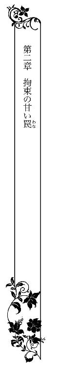
その翌日から、クラウディオは宣言した通り、ロシータを窓ひとつない部屋に監禁した。王城の地下の真っ白い大理石で設えたその部屋で、彼女は夜ごとにクラウディオの過酷な責めを受けた。
手足を拘束され、媚薬を与えられ、淫具を使われ、時に激しく時に優しく、淫らな調教を施された。
初心な身体は、みるみる性的悦びに目覚め、開発されていく。
ロシータは女王としての尊厳を踏みにじられた汚辱に悶えながら、一方で男の与える目も眩むような愉悦に心身ともに解放されるような気がした。
その晩。
激しくロシータを責め立てたクラウディオが寝所を去ると、彼女は身も心もくたくたになり、寝台にぐったり沈みこんで微睡んでいた。
幼い頃から女王教育を受けていた彼女は、決して深い眠りに落ちない。眠る時も、常に灯りを点した部屋でないと、一睡もできない。
曲者の侵入を警戒するため、そのように育てられたのだ。暗闇は死に繋がると、厳しく教え込まれた。
だからいつも部屋に灯りを絶やさないようにと、クラウディオに申し出てあった。彼はそれを了承し、監禁室には一晩中うっすらとランプの灯りが点っていた。
だがその日だけは、侍従がうっかりしたのか、夜半過ぎになってランプの油が突然切れた。ふっと灯火が消えてしまった。
突然、部屋の中が漆黒の闇に包まれた。
うとうとしていたロシータは、はっと瞼を開けた。墨を流したような暗黒が自分を包んでいる。
「や──」
手探りでランプを探ったが、窓もなく扉もぴっちり閉まっているこの部屋には一筋の光も漏れ入って来ず、一寸先もわからない。
「いや、誰か......」
圧倒的な不安が襲ってくる。奈落の底にたったひとり、取り残されたかのような壮絶な孤独感と恐怖。ロシータの心臓が早鐘を打つ。落ち着け、落ち着くのだ、と必死に自分に言い聞かせ、扉と思わしき方へ声をかける。
「誰ぞ、灯りを──誰かおりませぬか？」
深夜とて、城の者たちも寝静まっているのか、深閑として応答がない。その上、ここは地下だ。物音が階上には届かないに違いない。
背中を、何か化け物のようなものに触れられたかのような悪寒が走った。にわかに耐え難い恐怖に襲われ、ロシータは這うようにして寝台を降り手探りで前に進む。チェストのようなものに脚をぶつけ、どうっと転んでしまう。
「うっ──」
足首に激痛が走るが、そのまま四つん這いで扉の辺りに辿り着き、小さな拳で重厚な樫の扉を叩いた。
「誰か、誰か来て。真っ暗なの。灯りをちょうだい。誰か──」
声が次第に激昂して裏返ってしまう。
（いや、怖い、暗闇は恐ろしい──怖い、怖い、怖い）
ロシータは力の限り扉を叩き、声を振り絞った。
「誰か、助けて！ いやぁ、怖いの！ いやぁ！」
突然、ばっと扉が開いた。
灯火の明るさに一瞬目が眩む。
目の前に寝間着姿のクラウディオが、手燭を掲げて立っていた。
「どうしたのだ、ロシータ？」
その落ち着いた声を聞いたとたん、夢中で男の身体にしがみついていた。
「あ、ああ、怖い、真っ暗なの！ 何かが襲ってくる！ 怖い！」
寝間着を引き裂かんばかりの力で握りしめ、赤子のように泣きじゃくった。
「ロシータ、大丈夫だ、何もいない、大丈夫だから」
クラウディオは手燭で部屋の中を照らして見回し、安心させるように彼女の背中を撫で擦った。しかし、恐怖に囚われたロシータは、ただただ震えながら号泣する。
「暗いのはいや......怖い、死んでしまう......死にたくない」
クラウディオは片手に手燭を持ったまま、もう片方の手で軽々とロシータの身体を抱き上げた。ぎゅっと彼の首に両手を回して、啜り泣く。
「もう怖くない。泣かないで、ロシータ」
子どもをあやすように声をかけながら、クラウディオは彼女を寝台まで連れて行き、そっと下ろそうとした。しかし、ロシータは張り付いたように離れない。
「いや、いや、一人はいや......暗いのはいや......」
クラウディオは自分も寝台に上がり、彼女を抱きかかえたまま横たわった。
「一人にしない。そら、もう明るい。怖くはないだろう？」
逞しい胸に顏を埋めていたロシータが、おそるおそる涙に濡れた顏を上げる。枕元に置いたランプに照らされて、端整な男の顏が静かに微笑んでいる。
「あ──」
にわかに醜態をさらした自分が恥ずかしくなる。耳朶まで血が昇り、思わず目を伏せた。身体の震えがなかなか収まらない。
「君は、この国に来てから、ずっと安眠できていないだろう？ 本当は人は暗闇の中で眠る方が、安らかな睡眠がとれるというのに」
クラウディオの言葉にロシータははっと顏を上げる。なぜこの男は、自分が深く眠れないのを知っているのだろう？ 彼女のもの問いたげな瞳に、男はかすかに目元を染めて言う。
「私の寝所を、君の部屋の近くに移してあるのだ。君に何ごとかあっても、すぐに駆けつけられるように」
ロシータは紫色の瞳を見開く。属国とはいえ、ひとかどの王が城の湿っぽい地下に自分の寝所を移すなんて──。彼女がまじまじ見つめると、クラウディオは咳払いした。
「勘違いするな。女王である君を、王党派の残党が奪いにくることもあるだろうからね。君をさらわれでもしたら、ボルヘス王が激怒するだろう」
納得したが、それでも彼がすぐに駆けつけてきてくれたことには感謝したかった。ようやく身体から緊張が去り、彼女は深く息を吐いた。
「私は明るくしないと眠れない──深い眠りに落ちてはいけない──そのように育てられたの」
そうつぶやくと、男の大きな掌が額に乱れかかった金髪をそっと掻き上げた。
「いたましいな──か弱い女性の身で」
哀れむような声に、ロシータはキッと男を睨み返す。
「私はか弱くなどないわ、プリオネスの女王よ」
クラウディオは微苦笑を浮かべる。
「女王か──さきほど、暗闇が恐ろしくて子どものように泣きじゃくっていた君の方が、はるかに魅力的だったが」
からかわれたようで、かっと頬が上気する。ロシータは男の腕の中からすり抜けようと、身を捩った。
「灯りを置いて、出て行って。私はもう休みます」
「どこまでも強がりだな──安らかに眠ることもできないくせに」
クラウディオは両腕に力を込めて彼女を背後から抱きすくめると、耳朶の後ろに唇を押し付け、ねろりと舐った。
「あきゃっ、やあっ」
ぞくんと身体が震え、無防備な声を漏らしてしまう。もう幾度も男に抱かれ、耳の周囲が異様に敏感な性感帯だと見抜かれている。慌てて彼を押しのけようとするが、ますますきつく抱きしめられ、ねっとりと熱い舌が耳の後ろから耳殻、耳孔まで這い回る。
「や、あ、あ、だめ、あぁ、だめ......」
子宮に直に響く刺激に、ロシータは身体を強ばらせて耐える。
「いい子にしろ。ぐっすり眠れるようにしてやろう」
耳元に熱いささやきを吹き込みながら、男の片手が寝間着の裾を捲り上げ下腹部を弄った。
「く──う、や......っ」
茂みを掻き分けて、長い指先がころっと秘玉を転がしただけで、みるみる力が抜けてしまう。
「もう濡れ始めて──ほんとうに感じやすく可愛い身体だ。よほど心より身体の方が正直だ」
膨れた秘玉をくりくり抉じりつつ、濡れた舌は耳朶から首筋をゆっくり這い降りる。
「あ、だめ、だめ、しないで......っ」
全身が粟立ち腰がもじもじ蠢いて、柔らかな尻肉が男の下腹部を無意識に刺激してしまう。
「君は本当に──口で言うことと、気持ちが逆なのだな。君の嫌はいい、という意味だ」
決めつけられてロシータは、必死で気持ちを立て直そうとする。
「ち、がう......わ、本当にいやなの......っ」
「真実の自分があからさまになるから、怖いのだろう？」
「わかったような口をきかないで、あなたに私のなにが──あうっ」
くちゅりと蜜口をあばかれ、疼いている媚襞を掻き回され、言葉が途切れてしまう。
「わかるとも──こんなに熱くびしょびしょにして」
耳朶を甘く噛まれ、濡れ襞を擦り立てられ、すっかり骨抜きになってしまう。
ふいに身体を起こしたクラウディオは、抵抗の弱まった彼女の身体を仰向けにし、腰を抱え込んだ。膝裏を掴まれ、Ｍ字型に両脚を大きく開かれた。ぱっくりと陰部が開き、恥ずかしい格好にロシータは悲鳴を上げる。
「いやぁっ、見ないで」
しかし男は容赦ない。
「暴れるな──眠れるようにしてやると言ったろう？」
股間に男の熱い息づかいを感じ、ロシータはびくんと腰を浮かせた。
灯りをつけたままにしていることを、これほど後悔したことはない。淫らに涎を流して震えている花唇を、あからさまに眺められてしまう。
「可愛らしい花びらが、ひくひくして蜜にまみれている。君の花園は、持ち主よりずっと素直だ」
そう言うや否や、男の高い鼻梁が薄い和毛を掻き分け、濡れた熱い舌がその奥へ分け入ってきた。
「あっ、や、そんなところ......っ」
あまりの汚辱に、腰を戦慄かせて抵抗しようとしたが、男は彼女の両脚をしっかり抱えたまま、舌先で媚襞を愛撫しだした。
「あ、あぁ、く......うっ......だめ、汚い、のに......」
唇が震えて嗚咽が漏れそうになる。
「何も汚くはない──いつだって君のここはとても美味しそうで、しゃぶりたくてたまらなかったよ」
クラウディオはちゅうっと音を立てて陰唇に口づけし、尖らせた舌先で濡れ襞をぬるぬると掻き回した。
「はぁ、あ、や、あぁ、あ......」
痺れるような愉悦が下半身を駆け抜け、ロシータは腰が抜けたように力を失う。くちゅくちゅと粘着質な音を立てて舌が媚肉を上下になぞると、甘い疼きがさらに増して、隘路の奥からとろりと愛蜜が溢れてくる。それをちゅうちゅうと吸い上げ、男はさらに口での愛撫を激しくする。
「んぅ、んん、あ、や......あぁ、だめ......」
淫猥な声を上げたくなくて、必死に唇に拳を押し当てる。もはや抵抗する気力はなく、口で嫌だと言いながら、迫り上る快感に全身が昂ってしまう。
「可愛らしい声だ──もっと聞きたい」
クラウディオは和毛のすぐ下の敏感な突起を、舌先で突ついた。
「そこっ、だ、め、ひ、うぁ、あ、あぁあっ」
びりびりした痺れが身体中を走り抜け、膣腔が痛いくらいにきゅうっと収斂した。
「そうだ、正直になってきた」
男は唇で秘玉の包皮を剥き、剥き出しの紅い真珠をちゅっと吸い上げた。
「きゃぁあ、あ、あぁああ、うあぁあっ」
脳裏で悦楽の火花が爆ぜ、ロシータはあっという間に達してしまった。クラウディオは何度も強く秘玉を吸い上げながら、蜜口の浅瀬を指先で掻き回す。
「やだ、あ、そんなに、しちゃ......あぁ、だめ、あ、あぁ、あ......」
あまりの愉悦に、声を震わせて喘いだ。男は唇で秘玉を挟んだり、そこを舌先で巧みに転がしたり、縦横無尽に嬲ってくる。
「はぁ、あ、も、達ったのぉ......も、終わりにして、達った、からぁ......」
鋭い快感の連続に、腰を淫らにくねらせ息も絶え絶えになる。
「よいのか？ 気持ち好いか？」
わずかに顏を上げ、クラウディオは彼女の表情を窺う。
「や......そんな......やぁ......」
今までさんざん絶頂を味わわされてきたが、行為が好ましいと口にすることだけはしなかった。快感に溺れながらも、それを口にしては完全に男に屈服したことになる。
肉体は快楽に溺れても、心だけは渡してなるものかと必死で自分に言い聞かせていたのだ。
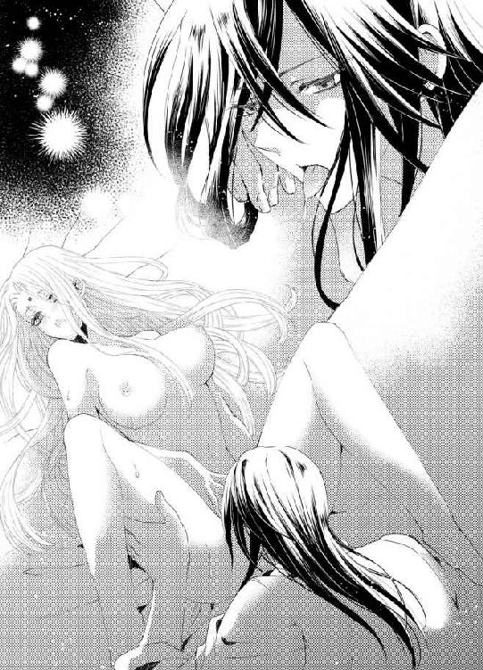
「素直に言わないと、悶え死ぬまでこの可愛い真珠を責めてやるぞ」
再び股間に顔を埋めたクラウディオは、口腔に含んだ秘玉をさらに執拗に吸い上げ、舐り回した。
「ひううぅ、あ、や、も、しないで、あぁ、おかしく......なるっ」
すでに絶頂の枠を越え、瞼の裏で喜悦の火花が散り続け、全身がびくびく痙攣した。膣襞がきつく収斂を繰り返し、くちゅりと大量の愛蜜を吐き出す。秘玉は痺れきって、もはや苦痛なほどだ。本当におかしくなりそうで逃れたい、許して欲しい。
「つ、あ、助けて......も、変に......あぁ、お願い、許して......」
感じ過ぎて涙をこぼし、ロシータは懇願する。だが、男は聞く耳を持たぬふりで、小刻みに震わせた舌先で膨れ上がった秘玉を爪弾き続ける。
「あ、くぁ、し、死んじゃう......も、だめに......ぅ」
全身の毛穴が開き、下半身が緩みきって失禁寸前の感覚に陥る。理性は粉々に打ち砕かれ、雌の本性だけが剥き出しになった。
「あ、い、いい......あぁ、気持ち好い、好いの、すごく感じるの......感じるっ」
壮絶なまでの愉悦に、ついにロシータは屈した。逼迫した声を上げ、自分がなにを叫んでいるかすら自覚がなかった。
「──いい子だ、可愛いロシータ──終わらせてやろう」
クラウディオが満足げにつぶやき、いきなり腫れ上がった秘玉をこりっと噛んだ。
「ひいいぃっ──っ」
目の前に法悦の閃光が煌めき、息ができずにひくりと咽喉が鳴った。全身がぴーんと硬直し、一瞬本当に死んだのかとすら思う。
「あ、はぁ、は、はぁ、は......っ」
極めた直後に、信じられないほどの安らぎがおとずれた。ぶわっと全身から汗が噴き出し、ぐったりと敷布の上に沈み込んだ。
「──ロシータ」
クラウディオはゆっくり身を起こし、満ち足りた表情で喘いでいる彼女を、せつなげに見つめた。彼の手が伸び、火照った額をそっと撫でてくれる。そのひんやりした掌の感触に、思わず頬を擦り付けて甘えたい衝動に襲われる。
「──これでぐっすり眠れるだろう」
彼の手が、額から乱れた金髪を優しく撫で付ける。幼い子にするように頭を撫でられると、声を上げて泣きたいほど胸が締め付けられてくる。
「──一人に、しないで......」
消え入りそうな声でつぶやくと、クラウディオがうなずいた。
「君が眠りにつくまで、側にいてやろう」
彼の手が優しく髪を梳いてくれる。なんて心地好いのだろう。
早くに母親を亡くしたロシータには、誰かと共に眠った記憶が無い。もの心がついたときには、灯りを点した寝所の広いベッドに、一人きりで眠ることを強いられた。
国を統べる女王としてか弱い乙女心に鞭打ち、プライドだけを高くして生きてきたのだ。それゆえ誰にも心を許さず、冷ややかな振る舞いに徹してきた。
そんな彼女を、周囲の者たちや国民も崇拝しつつ陰で、
「氷の女王」
と、渾名していることも知っていた。
アンヘル山の頂のように、誰も寄せつけない冷たい女王──それでいい、そんな生き方しかできないのだ、とずっと思っていた。
──誰かと寄り添う温もりが、こんなに心安らぐものだったとは。
知らず知らず、涙がこぼれる。
「どうした？ 心細いか？ 子守唄でも歌ってやろうか？」
冗談めいた口調で言った男は、本当に小声で歌を口ずさみ始めた。
「あの山に 雪が降り積もるまで お休み 愛しい子
あの山の 雪が溶けるまで お休み 可愛い子」
ロシータは驚いて目を見開く。男が意外にもよい声で歌ったのにも驚いたが、
「それ......プリオネスにも似たような歌があるわ」
クラウディオが目を細める。
「そうか──アンヘル山を隔てて、君の国と私の国はあるからな。言葉も文化も非常に近いものがある。子守唄が似ていても不思議はないだろう」
ロシータはふと、幼い頃絵本で読んだ古代神話を思い出した。
──その昔、南国と北国はひとつの国だった。だが国王と王妃があまりに仲が悪く、争いを繰り返した。国が二分するほどの内紛が続き、それを案じた神が、国の中央に大きな雪山を造った。そして、王と王妃をそれぞれの国に分け隔ててしまった。引き離されて初めて、二人は互いの大切さに気がついたが、時すでに遅し。国王と王妃は二度と出会うことは叶わず、悲しみに暮れた一生を送った──。
（かつては、私の国とこの人の国は、ひとつだったのだろうか......）
心の底に、なにかじんわりと温かい感情が芽生えてくる。
「あの山に 花が咲くまで お休み 清らかな子
あの山に 渡り鳥が来るまで お休み 賢い子」
髪を撫で付けながら、男は静かに歌を口ずさみ続ける。
じっとその艶っぽい歌声に耳を傾けているうちに、柔らかな眠気に襲われた。瞼が重くなり、気持ちがすうっと浮き上がる。
（あ......寝てしまう......）
そう思った刹那、ことんと深い眠りの底に落ちた。意識を失ったかのような、純粋な眠り。今までこんなに安らかに眠ったことはないと思うほど──。
「お休み、ロシータ」
赤子のように眠りを貪る彼女の顏を見つめ、クラウディオが優しくささやく。彼はそっと枕元の手燭の火を落とした。
ふうっと部屋が暗闇に包まれる。
しかしロシータは目を覚まさなかった。
あれほど恐れていた漆黒の闇は、心地好い羽布団のように彼女をくるみ、甘い夢の世界へ誘った。
「お休み──愛しいひと」
クラウディオが、そっと唇に口づけする。
それすら気がつかないほど、ロシータの眠りは健やかだった。
こんこんと眠った。
女王になってからは浅く眠ることしかできず、夜は何度も目を覚まし、悶々とすることが多かった。微睡んでは目を覚まし、また微睡むの繰り返しに、目覚めはいつもどんよりとしたもので、身体の奥に芯のように疲労が残っていた。
それが、ふっと目を覚ますまで、子どものように深い眠りを貪っていたのだ。
「あ......？」
目を開くと灯りが消えていて、部屋の中は薄暗かった。天井にある小さな嵌め殺しの明り取りから、うっすら光が射し込んでいるところをみると、すでに日が高いようだった。すぐ側に息づく温かい肉体の感触。
クラウディオが眠っていた。
彼の腕の中に抱かれるようにして寝ていたのだ。彼の引き締まった身体から、愛用している柑橘系のオーデコロンの香りが漂い、それの匂いは不思議と心を落ち着かせる。今まで彼は、ロシータを抱いた後は自分の寝所に戻り、一緒に休むことは決してなかった。
それは多分、彼を憎悪しているロシータに、寝首をかかれないように用心しているのだろう。事実、もし彼が側で熟睡などしたら、彼女はためらうことなくその命を奪うことを考えただろう──昨日までは。
（私が暗闇に怯えて、一人にしないでなどと懇願したせいだろうか？）
昨夜の自分の醜態を思い出すと、顏から火が出そうだ。
一国の女王たるものが、暗闇に赤子のように怯えて敵の王に縋り付くなどと──。
（でもそんな私のために、敢えて一緒に休んでくれたのかしら）
あまつさえ、眠りに落ちるまで子守唄まで歌ってくれた。
ロシータはまじまじと、クラウディオの寝顔を見つめた。
普段は隙がなく、端正な顔を厳格に引き締めている彼は、眠っていると無防備で少年の面影を残している。長い睫毛が彫りの深い顏に影を落として、美貌が哀愁を帯びている。形のよい唇がわずかに開き、すうすうと心地好い寝息をたてている。
健やかで安らかな眠り。
常に微睡むことしかできなかった自分とは違う。それは同じ一国の王としての風格の違いを感じさせた。属国の王のくせに──と思い込もうとするが、クラウディオには深い英知と自信のようなものがあり、それが彼を威風堂々とみせている。
（彼ほどの人が、唯々諾々とボルヘス王に下ったなんて......）
彼の人となりを知れば知るほど、ロシータには不思議でならなかった。
彼女はいつの間にか、クラウディオのことをもっと知りたいと思っている自分に気がついた。彼のことを思うと、胸がざわめき息が苦しい。
（私ったら......おかしいわ）
男の寝顔をずっと見つめていたい。その艶やかな黒髪に触れ、自分がされたように優しく撫でてみたい。そろそろと彼の顏に手を伸ばそうとして、寸でで思いとどまった。
（そうよ、なにをぐずぐずしているの──今が、逃亡するチャンスよ）
クラウディオは扉の鍵を持っているはずだ。顏に伸ばそうとした手で、そのまま慎重に彼の部屋着のポケットをさぐると、案の定鉄の鍵が見つかった。その鍵を握りしめ、ゆっくりと男の腕から抜け出し、起き上がる。息をひそめて彼を窺うと、目を覚ます気配はない。
上掛けを裸の身体に巻き付けて床に降り、足音を忍ばせて扉へ向かおうとした。
ふいに、むんずと強い力で手首を引き寄せられた。
「お目覚めの口づけもないのかな？」
ロシータはぎくりとして振り返った。
クラウディオがぱっちりと目を開け半身を起こして、手首を掴んでいた。その表情ははっきりとしており、とても寝起きのものとは思えない。足ががくがく震えてくる。
「あ、なた......最初から目を覚ましていたの？」
クラウディオが苦笑いする。
「夜明けには目覚めるよう、習慣づけているのでね。君の寝顔があまりに可愛いので、ずっと眺めていた。君が目を覚ましそうになったので、眠る振りをして様子を窺っていたのだが──」
彼の声がふいに低くなる。
「とんだ朝のご挨拶だな──やっと私に心を開いたかと思ったのに、残念だよ、氷の女王」
内心嫌悪している渾名で呼ばれ、胸がちくんと痛んだ。だがそんな素振りは見せず、キッと睨み返して言う。
「誰が......あなたなどに心を──」
ぐいっと手首ごと手前に強く引かれた。
「あっ」
男の胸に倒れ込んでしまう。手にしていた鍵がかちゃんと音を立てて床に落ちた。その鍵を、クラウディオは素早く拾い上げる。
「たいした手管だ。閨で男を油断させて寝首を掻くとは──娼婦さながらだ」
ロシータは屈辱に頬に血が昇った。
「無礼な！」
男が彼女の両手を掴み上げ、そのままベッドから降りる。
「つうっ──離して」
引きずられて、激痛に悲鳴を上げる。
「離すものか。君にはまだまだ調教が足りないとみえる」
男の声が氷のように冷たい。彼の押さえた怒りを感じ、ロシータは震え上がった。
壁に固定されている手枷足枷に、後ろ向きで繋がれてしまう。巻き付けていた上掛けをむしり取られ、全裸に剥かれる。
「や、お願い、外して......っ」
背中を向けていると、男の表情がわからずなにをされるのかも予想がつかない。
「君にはもっとお仕置きが必要だ。完膚なきまでに、君のプライドを叩き潰してやろう」
男が酷薄な声を出す。
「やめて、何をするの？......」
恐怖がじわじわと足元から這い上がってくる。
ふいにひやりとしたとろつく液体が、つんと突き出した臀部に注がれる。
「あっ、なに？」
蜂蜜のような粘つく液体が、ゆっくりと尻から太腿に垂れ落ちていく。
「滑りをよくする乳液だ──こうしないと、初めての君には到底受け入れがたいだろう？」
男は指の腹にたっぷり載せた乳液を、尻の割れ目に塗り込めてくる。
「あっ」
ぬるつく指が蜜口をくちゅりと掻き回し、そのままさらに奥の密やかな窄まりへ移動する。小さな後孔に指先がぐぐっと押し込まれ、ロシータは悲鳴を上げた。
「やあっ、そこは、だめ、そこは、違う......っ」
全身を引き攣らせて逃れようとしても、両手両脚を括り付けられた姿では逆に誘うように、まろやかな尻がくねくねするだけだった。
「ここも──後ろの処女も、私が奪う」
男はくぐもった声を出しながら、さらに指を後孔に指を突き入れてくる。狭い窄まりが押し広げられる感触に、背中がぞくぞく震える。
「そ、んな......無理、そんなところ、挿入らないからぁっ」
逆らって身悶えすると、さらにずぶりと奥へ指を穿たれてしまう。
「あうっ、あっ、あ......」
膣腔を責められるのはまた違った、排泄感に耐えるような不可思議な感覚に全身に怖気が走った。
「狭いな──だが、だんだん解れてきた」
第二関節くらいまで指を押し入れたクラウディオは、今度はゆっくりと引き抜く。
「ひ、あ、は、は......」
排泄する時の淫らな快感が襲い、ロシータは背中を仰け反らせて喘いだ。
「やあ、お尻、いや、あぁ、あ」
息を乱しながら訴えるが、男はおかまいなく次第に速度を増して、指で後孔を抜き差ししてくる。膣壁のすぐ上の後襞に、なにかぽってりとした熱が生まれ、それが次第に膨れ上がってくる。嫌悪と裏腹の、異様な高揚感。
「だ、め......おかしく......なんだか、変、あ、ぁあ......」
初めて知る後孔の快感に、ロシータは身悶えた。
「思ったより感じるだろう？」
ふいにクラウディオは、窄まりの奥で指をぐりっと捻り込んだ。
「ひあぁ、あ、やめ......っ」
内臓まで抉られるような衝撃に、息を呑む。内腿ががくがく震える。男はそのまま、ぐちゅぐちゅと攻め立てるように後襞を擦り続ける。
「く、ひ、ぁ、あ、あ」
未知の快感に支配され、ロシータは昂った声を上げ続ける。なにもされていない膣腔まで、うずうず蠢き、とろとろと蜜を吐き出すのがわかり、混乱する。
「極上の淫らな身体だ。もう後ろの味を覚えたか」
男が息を弾ませて、さらに後腔を擦り上げる。
「ちが、う......そんなところ......も、しないで、熱い、あぁ、熱くて......っ」
ロシータは金髪を振り乱して、必死に懇願する。これ以上後孔になにかされたら、男が宣言した通り、自分の矜持は粉々になってしまう予感がした。
「いやといいつつ、前はびしょびしょじゃないか──ああ、君のいやは、いいという意味だったな」
クラウディオは後孔をいたぶりつつ、背後から乳房を掴み上げた。
「く、ぁ、あ」
すでに興奮でぴりぴり尖っている乳首を指で捻られると、下腹部がきゅーんと痛いほどに疼いてしまう。腰がひとりでに揺れて後腔への刺激がいや増し、膣壁がくるおしく蠢き、目一杯なのにがら空きのような、複雑な感覚に混乱する。
「蕩けそうな表情をしているじゃないか？ 挿入れてほしいか？」
背後から男がぴったり身体を押し付け、片脚をぐっとロシータの股間に押し入れて太腿を開かせる。硬く勃ちきった欲望が柔らかな尻に当たるのを感じ、後孔を犯される、とびくりとする。
「怖くはない──たっぷり濡らして挿入れてやる」
男の指が内部でぐるりと旋回し、おもむろに引き抜かれた。
「あ、う......」
ふいの喪失感に、全身が戦慄いた。と、思う間もなく、今度は太い亀頭がほころびかけた窄まりに押し当てられた。
「ひ、あ、だめ、お尻、挿入れないでぇ、壊れちゃう......っ」
ロシータは必死に首を振って懇願した。だが男は容赦しなかった。
「私は君を壊したいんだ」
恐ろしい台詞を吐き、彼はぐっと腰を押し進めた。熱く屹立した肉杭が、じりじりと後孔を穿って侵入してくる。
「んぅ、ひ、う、ン、ああ......っ」
恐ろしいほどの圧迫感に、ロシータは息を詰めて目を見開いた。たっぷりと乳液を使われたせいか、笠の開いた先端が通過すると、そのままぬるりと極太の肉茎が押し入ってきた。
「ぐ、あ、あ、んんぅ、ん......」
熱い鉄棒を押し込まれたように、後腔が灼け付く。長大な欲望が後孔にずっぽりと収まってしまう。
「ふ──全部挿入ったよ──ああ、きついね」
クラウディオが深いため息を吐く。それからおもむろに腰を引いた。
「......んぁあ、あ、や、は、はぅ......ン」
全身が泡立つほどの喪失感に、腰ががくがく震える。男は亀頭の括れまで引き抜くと、今度はぐぐっと奥まで突き入れてきた。
「ひぅう、あ、は、だめ......っ」
信じられない刺激と熱に、ロシータは大きく口を開いてはあはあと喘ぐ。
「君の後ろもとても好い──私を咥え込んで離さない」
クラウディオがゆっくりと抽挿を開始した。ずくずくと肉棒が抜き差しする、卑猥な音が響く。
「......ん、んぅ、あ、壊れちゃう......あぁ、だめ、あぁあ、あ」
排泄器官で感じるなんてあり得ない。なのに、身体が異様に昂り、何も挿入されていない膣襞までずきずきするほど疼いてしまう。すると、男の指が濡れそぼった蜜口を弄った。
「ひぁう、あ、だめ、ああぁっ」
どうしようもない快感に襲われ、ロシータは嬌声を上げてしまう。
「すごいね、ぬるぬるで熱くて──後ろもきつくしまって、すごくいい」
クラウディオが感じ入った声を出し、かしりと耳朶に噛み付いた。
「うう、ぁあ、だめ、耳、あ、だめ、お尻も、あぁ、だめ、だめなのぉ」
後ろを太い欲望で擦られ、前を長い指で巧みに掻き回され、身も世もないほどに乱れてしまう。
「やぁ、知らない、こんなの、しらない、あぁ、こんなのって、あ、あぁっ」
男の予告した通りだ。
こんな凄まじい愉悦を知ってしまっては、もはや自分のちっぽけな誇りなど何の役にも立たない。何もかも犯し尽くされているのに、屈辱より未知への世界の扉が開いたような開放感に、目が眩む。
「可愛い、私の与える快楽に身悶える君が、とても可愛い──素直な君が、とてもいい」
男はロシータの耳孔にぬるつく舌を這わせ、泥濘んだ膣腔を指で掻き回し、灼け付く後孔を激しく穿つ。ぞくぞくと全身が愉悦で震える。
「ひ、どい......私を、こんなにして......あなたなんか......あなたなんか......っ」
随喜の涙をこぼしつつ、口惜しくてののしる。
「好きだろう？ こうされるのが、私に──」
クラウディオは「こう」の台詞とともに、膨れ上がった秘玉をきゅっと捻り上げた。
「うあぁああ、ああぁ、だめぇ、だめぇ、達っちゃ......ううぅ、うぅ」
びゅるると大量の愛潮を噴き出し、激烈に達してしまう。自分の官能のすべてを引き出され、もはやなす術もない。
「好きだろう？ 私が？」
ぐちゅぐちゅとすべての孔を犯しながら、男が言葉を引き出そうとする。
「うぁあ、あ、いやぁ、あなたなんか、嫌いよ、大嫌い、こんな、あぁあ」
熱に浮かされたように身悶え、ロシータは喘ぐ。
「そうか、いいね──君の言葉は本心の裏返しだからな」
男は満足そうに言うと、さらに貪欲に脈動する男根を突き上げた。
「やぁ、ちがう、嫌い、よ、あぁ、ひあぁっ、あ、また......っ」
間断なく絶頂に追いやられ、自分でなにを喚いているのかすらわからなくなる。
後襞を深々と抉られ、激しく引き摺り出されるたび、ぞくぞく感じてしまう。こんな淫猥な身体にされて、もはや清らかで誇り高いプリオネス女王はどこにもいない。淫乱な雌奴隷に成り果て、憎い男にされるがままに欲望に溺れていく。
「あぁ、あ、だめ、また......あぁ、終わらない......ん、んぅ、ふ......は」
喘ぎ続ける紅唇の端から、だらしなく唾液が滴ってもかまう余裕もない。
「ロシータ」
クラウディオが顏を寄せ、喰らうように唇を奪い、唾液を啜り上げた。
「む、は、ふう......んんんぅ、ん」
思わず彼の舌にむしゃぶりついていた。
二人の舌がきつく絡み合い、くちゅくちゅと淫らに擦れ合う。
こんな淫蕩に耽る自分は自分ではない。ロシータは喜悦にぼやけた脳裏で思う。
もう思考するのもおっくうになり、女王という立場を忘れ果ててしまうほど、奪い尽くして欲しかった。
「......んぅ、は、もっ......と......あぁ、もっと......」
口づけの隙間から、快感に酔いしれた言葉が溢れ出す。
「いいとも、ロシータ、もっとだ──」
男は膨れ上がった屹立で、さらに激しく後孔を穿ち、痺れきった秘玉を抓り上げる。
「ひ、あ、いい、あぁ、すご、い......おかしく......んんぅ、う」
愉悦で意識が朦朧とする。凄まじい快感に身体が浮遊し、全身が性器に成り果ててしまったように感じる。
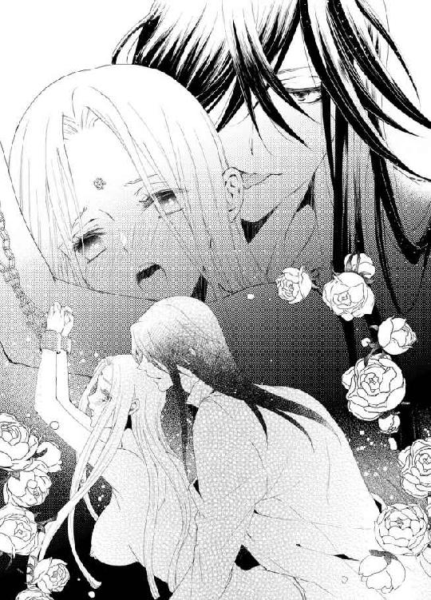
「ロシータ、ロシータ......」
男の腰の抽挿が早くなり、切羽詰まった声がする。
「く、は、だめ、あ、も、だめ......っ」
感じるのは、男の息、汗、体温、指、そして灼熱の欲望。
がくがくと揺さぶられ、咽頭を震わせて泣き叫ぶ。
灼け付いた後襞が快感に収斂する。
「っ──ぅ」
クラウディオが低く呻き、強くロシータのうなじに噛み付いた。
「あ、あぁ、あ、あぁぁあっ」
次の瞬間、犯され尽くした後腔の奥へ、男の欲望が激しく弾けた。腰が抜けるような深い快感に呑み込まれ、ロシータは啜り泣くような嬌声を上げ続けた。
びくびくと腰を震わせて最後の一滴まで放出し尽くした男が、深く息を吐き、ゆっくり脱けて出ていく。広がった後孔かどろりと白濁液が溢れ出て、自分の体液や愛液と混ざり、下半身に滴っていく。
「はぁ、はっ、は、あ......」
全身が弛緩しきってしまい、クラウディオが枷を外したとたん、ぐらりと身体が後ろへ倒れ込んだ。男が汗まみれの身体を受け止める。背後から守るように抱きとめられ、身も心も彼へ預けてしまいたい気持ちに囚われてしまう。
「──酷い有様にしてしまったな」
クラウディオは夢から醒めたような表情で見下ろしてくる。ロシータは睨みつけようとしたが、まだ快感の余韻に支配されているせいで、潤んだ瞳に力がこもらない。それでも精一杯男を見据えて、恨みがましい声で言う。
「ほんと......に、酷い、人だわ......」
男の目に、なにか苦痛に耐えるような色が浮かぶ。
「君の精神力には、感動すら覚えるよ。私は君をとことん支配したいのに、心のどこかでは、その屈しない強さに憧れているのかもしれない──いつまでもそのままの、高潔な君でいて欲しいのかもしれない」
しみじみ言われ、心臓がどきんと跳ねる。
一瞬、男の心の奥底にある苦悩が垣間見えたような気がしたのだ。心が揺れた。
クラウディオの胸の内を知りたい。
彼が本当は自分をどう思っているのか知りたいと、切に思った。
だが、口から出てきたのは、内心と裏腹な言葉だった。
「私は、絶対に支配されない......どんなにこの身体があなたに屈しても、心だけは渡しはしないわ」
男が苦笑した。
「そのセリフ──早速私の要望に応えてくれるとは、君は意外に優しいのだな」
「な......っ」
うまくあしらわれたようで、ロシータはかっと頬に血を昇らせた。
「もう、好きなように受け取ればいいわ」
ぷいっと顏を背けると、男はぎゅっと腕に力を込めて抱きしめ、耳元で甘くささやいた。
「今夜も一緒に寝てやろうか？ 女王様に安らかな眠りを差し上げよう」
「いい気にならないで。今回灯りが消えたのは不測の事態よ。あなたなどいない方が、私は安心して休めるわ。結構よ」
クラウディオがくすくす笑う。
なにが面白いのだろう、とむっとする。
「わかった──だが、独り寝が寂しくなったらいつでも私を呼ぶといい。また添い寝してやろう」
「そんなことをしたら、私はあなたの首を絞めてやるから」
「望むところだ。新しいお仕置きを考えておこう」
そう言い置くと、クラウディオはゆっくり腕を振りほどいた。
「名残惜しいが、そろそろ私は政事に出向かねばならない」
逞しい腕の感触がなくなると、ロシータは妙に物寂しい気持ちになった。しかし、背中を向けたまま素っ気なく答えた。
「さっさと出て行って」
「ふ、御意」
男が静かに扉を開け、立ち去る。
思わず肩越しに振り返ってしまう。
がちゃんと鍵のかかる重い音がして、はっと我に返った。
憎まれ口を叩きつつ、どこか心浮き立っていた自分に気がつき愕然とした。
（私は虜囚なのよ。そして相手は敵国の属国王──決して心許してはいけないの）
肉体が馴染むと、心まで寄り添ってしまうものなのか。
ロシータは男に与えられる快感が深まるごとに、そのことを恐れた。もしかしたらそれは、あの男の仕掛けた罠なのかもしれない。
身も心もクラウディオの虜になれば、ボルヘス王の思惑どおりだ。
脳裏に、野卑に笑うボルヘス王の憎い顏が浮かんできた。
（油断してはだめ──）
徐々に心が冷えてくる。
かすかな痛みを伴って──。
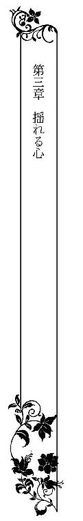
クラウディオが訪れない日が、数日続いた。
（──どうしたのだろう）
それまで毎晩のように彼は現れていたので、何ごとかあったのかと不安になる。
日に三回、鉄の扉に取り付けられている小さな引き戸から、侍女によって食事はきちんと差し入れられていた。ということは、国になにか異変があったわけではないのだろう。
（私に飽きてしまったということかしら......）
身体を穢されることから解放されたのだとしたら、喜ぶべきことだ。なのに、ロシータの胸はざわざわと落ち着かない。彼の安否が気になって仕方ない。
六日目の夕方。
夕餉を差し入れられたさい、ロシータは思い切って扉の外の侍女に声をかけた。
「これ──バルラ王はいかがされたのか？」
捕虜とはいえ女王から声をかけられた侍女は、恐れおののいたように食事の盆を持った手の動きを止めた。それから、そろそろと盆を差し出して小声で言う。
「王は──ボルヘス王の命により、反乱軍鎮圧にアスタ砂漠まで遠征なさっており、本日お戻りの予定です」
「アスタ砂漠まで遠征......」
そうだったのか、と納得する。
あの傲慢なボルヘス王に、クラウディオは手足のように使われているのだ。アスタ砂漠は大陸で一番大きな砂漠で、草木一本生えない灼熱地獄地帯だ。そこへの遠征とは、さぞや過酷を極めたことだろう。
「──いい気味よ」
そう口に出してみるが、自分でも白々しく聞こえた。クラウディオが唯々諾々とボルヘス王に従うことが、我がことのように口惜しくてならない。支配に下るということはそういうことなのだ。だが、あくまで抵抗した末に征服された自分は、自由を奪われ拘束の身となっている。
（どちらも地獄だわ──）
ロシータはクラウディオの胸の内が理解できるような気がした。
夜半過ぎ、ふいに扉の鍵が外れる音がした。
長椅子でうとうとしていたロシータは、はっとして顏を上げた。
戸口に、手燭を持ったクラウディオが立っていた。
その姿を見たとたん、安堵と興奮が同時に胸をいっぱいにした。思わず飛びつきたい衝動に駆られ、あやうく踏みとどまる。
「放っておいてすまなかったな」
クラウディオがゆっくりと近づいてくる。
「別に──おかげで心安らかに過ごせたわ」
彼の声を聞くだけで動悸が早まった。つんと顎を反らせながらも、ちらりと彼の方に視線を送る。
いつもは部屋着で来る彼が、珍しく戦闘服姿だ。短めのチェニックに腕まくりしたシャツ、動きやすそうな脚衣に革の長靴。長い黒髪を無造作に束ね、熱砂への遠征のせいで日焼けした顏が精悍さを増している。惚れ惚れするような男っぷりに、ロシータはチラ見のつもりが思わずまじまじと凝視してしまう。
だがその端正な顔に濃い疲労の色を感じた。
クラウディオがどっかと長椅子に腰を降ろした。ロシータは慌てて長椅子の隅に移動する。彼は背もたれに深く背中をもたせかけ、目を閉じてつぶやいた。
「少し遠出をしていた──いささか疲れた」
彼の身体からは、汗と砂漠の砂の香りがした。遠征から戻り、その足でここまで来たのだろうか。
「では無理をして私のところへ来ることなど、ないのに」
ぞんざいに言ったつもりが、気遣うような口調になってしまう。ふっと瞼を開けたクラウディオは、長い手を伸ばしてロシータの艶やかな金髪を撫でた。
「君の顏を見たら、疲れが吹き飛んだ」
彼の手の感触に、身体の血が熱く駆け巡る。髪の毛を撫でられただけで、どうしてこんなに落ち着かないのか自分でもわからない。混乱した気持ちを振り払うように言う。
「それではもう、自分の寝所にお帰りなったらどう？ アスタ砂漠での闘いは、さぞや過酷だったのでは？ 今夜はぐっすり眠った方がいいわ」
ぴくりとクラウディオの眉が上がる。ロシータはあっと言葉を飲み込んだ。むくりと彼が身体を起こした。
「そのことをどうして知っている？──侍女から聞き出したのか？」
彼の鋭い視線に、思わずうなずいてしまう。
「そうか──もっと口の堅い侍女に変えねばな」
再び長椅子にもたれ直した彼は、苦い口調になる。
「反乱軍は、我が同士だった──」
ボルヘス王の暴虐に耐えかね、あちこちで反乱が起きているのは知っていた。バルラ国の反乱分子がアスラ砂漠で決起したのだろうか。自国民を討伐せなばならなかったクラウディオの胸中を思うと、ロシータの心までずきずき痛んだ。
「もう──お部屋にお戻りになった方がいいわ」
促すように言うと、クラウディオが物憂げに顏を向けた。
「君を抱きたいが、疲労困憊している」
ロシータは困惑する。
「だから、今夜はもういいでしょう？」
「いやだ。君がどうしても欲しい」
だだっ子のようなことをいう彼に、呆れてしまう。
「そんな──」
髪を撫でていた男の手が、頭の後ろを抱えて引き寄せた。
「君のその可愛い口で、慰めろ」
意味が分からず目をぱちぱちすると、押し付けるように頭を男の股間に持っていかれる。
「わからんか？ 私のものをしゃぶれ、と言っているんだ」
羞恥にかっと頭に血が昇った。
「な──そ、そんなこと、できないわ！」
怒りより狼狽であった。あんな禍々しく長大なものを、口で慰めろというのか。
「馬鹿なこと言わないで、もう出て行って」
頭を振って彼の手を振り払おうとすると、ぎゅっと髪の毛を掴まれて、痛さに悲鳴を上げた。
「するんだ」
男の決然とした声に肝が冷えたが、声を振り絞る。
「む、無理よ──だ、だって」
泣きそうな声になってしまう。
「わ、わからないもの──どうするのか」
クラウディオの表情が優しく解れてくる。
「教えてやる。君ならすぐ呑み込めるさ」
それから彼は、真摯な眼差しでロシータを見据えて言う。
「頼む。してほしい、ロシータ」
「っ──」
心臓が鷲掴みにされた。彼の深青色の瞳から目が離せない。男が自分に懇願していると思うと、せつないほど気持ちが熱くなる。気がつくと、自分の細い指が彼の脚衣の前を寛げている。恐る恐る下履きを外すと、すでに半分勃ち上がった欲望がぬっと現れた。赤黒くびくつき、傘の開いた先端に先走りの雫を溜めている。
「あ......どうしたら......」
両手でそっと脈打つ肉茎を包んでみたものの、やはり勇気が出ない。するとクラウディオが促してくる。
「まず先端を口に含んで、舌を優しく這わせてみろ。歯を立てないように」
「う......ぅ......」
思い切って彼の股間に顏を寄せる。むぅっと熱い汗と欲望の香りが鼻腔を満たす。亀頭に唇を押しつけ、思い切って先端を含んでみる。
「ん......む......」
生々しい雄の匂いと味がする。恐る恐る、割れ目の入った先端に舌を這わせてみる。わずかな塩味を感じ、なぜか背中がぶるっと震えた。
「──っ」
クラウディオが深い息を吐く。ぴくりと屹立が跳ね、ひとまわり膨れる。まるで別の生き物のようだ。
「んぅ、ん......ん」
亀頭の括れに沿って何度も舌を這わした。
「可愛い舌だ。今度はもっと咽喉奥まで呑み込んで、一緒に棹に舌を押し付けるようにして」
男の手が優しく頭を撫でる。その愛撫に背中を押されるように、思い切り唇を開いて太い剛棒を呑み込んでいく。あまりに太く長大なので、全部はとても口腔に収まりきらず、膨れた亀頭が咽喉奥を突つくと息が止まりそうだ。
「ふぅ、ん、んんぅ、ん......っ」
言われたままに太い血管の浮き出た肉胴に舌を押し付ける。
「そうだ、上手だ。そのまま頭を上下に動かして、唇を窄めてね」
クラウディオは右手で髪の毛を撫でながら、左手で猫でもあやすようにロシータの喉元を撫で擦る。
「......っ、あ、んんぅ、んん、んぅ......」
ゆっくり頭を振り立てる。亀頭の括れまでくると、唇を窄めてぬるぬると擦り上げた。ぶるりと鈴口が震え、先走りが溢れ出し嚥下しきれない自分の唾液と混ざり、唇の端から溢れてくる。肉茎がぬるぬるになり、滑りがよくなってくる。
「く、ふぁう、ん、は、ふぅ......」
膨れた先端がぐりぐりと口蓋を擦ると、ひどく淫らな気分になってくる。いつもこんな太くて逞しいものが自分の中に押し入り、高みに昇らせるのだと思うと、全身の血が沸きたり、下腹部に妖しい疼きが生まれてくる。
「は、くは、ん、んぅ、んっ」
最初に感じた恐怖と嫌悪はすでになく、逞しい屹立を味わうことに次第に熱が籠ってくる。「ああ──そうだ、いいよ──君はとても覚えが早い──ロシータ」
クラウディオがうっとりした声を出す。
「......ん、んんん......」
頭を振り立てながら、そっと男の顏を窺う。クラウディオは端整な顏をわずかに上気させ、長い睫毛を伏せて陶酔した表情だ。今まで男のそんな顏をまじまじと見たことはなく、自分の愛撫で彼を感じさせていることに、ひどく誇らしい気持ちになる。思わず唇に力を込め、亀頭の括れをきゅっきゅっと扱くと、肉茎がさらに大きく口腔で膨れ上がる。溢れ出す先走りを吸い上げると、身体中が淫らに疼き、はしたない欲望が下腹部から迫り上ってくる。欲情し始めた自分を認めたくなくて、雑念をふりはらうように口腔愛撫に耽っていく。
「は......ぁ、んん、あ、ふぅん、ん」
艶かしい鼻声を漏らし、硬い屹立の裏筋に沿って舐め下ろし、唇を強く窄めて先端まで吸い上げていく。
「素晴らしい──教えなくても、君はちゃんとどうすればいいかわかっている──欲望に正直になった君はとても可愛い」
クラウディオがふいに腰を突き上げたので、剛直が咽喉奥まで突き上げて、嘔吐きそうになった。
「ご......ふ、ぁ、う......」
苦しくて顏を歪めると、男がそっと腰を引いた。ずるりと陰茎が引き抜かれる。今や完全に勃起したそれは、自分の唾液と男の先走りで淫猥に濡れ光っている。
「すまない。あまりに気持ち好くて──ロシータ、ここ、陰嚢も舐めてごらん」
「え？ あ、こんな、ところまで......？」
屹立の下に下がる袋のようなものを差し示され、こわごわ顏を近づける。そっと舌を差し出すと、ふにっと柔らかい感触がした。あんな硬く膨れた肉胴のすぐ下に、こんなにも頼りなげなものが存在するのが、不思議でならない。男の性器というものは、すべてが身体の内側に隠れている自分とずいぶんと違う。
そろそろと舌を這わせていると、クラウディオが声をかけてくる。
「しゃぶってみろ」
「んん......こう......？」
柔らかな陰嚢を口いっぱいに頬張ると、中でこりっとしたものを感じ、ますます不可思議な気持ちになる。
（私、クラウディオの密やかな部分をすべて知ってしまった）
心臓がどきどきし、嬉しいようなせつないような気持ちが胸いっぱいに迫り上る。高揚した気持ちのまま、陰嚢の中央を走る筋に沿って舌を這わしたとたん、男がぶるっと腰を震わせた。
「あ──」
クラウディオが小さい声で呻く。彼が悦んでいるのだと知ると、さらに気持ち好くさせたい欲求にかられた。顏を起こし、要求されたわけでもないのに、自らぱくりと亀頭を咥え込んだ。そして、脈動に舌を押し付け、頭を上下に振り立てる。
「んん、ふ、んぅ、ちゅ......ぁ」
「ロシータ──」
クラウディオの声がせつなくなる。
初めての行為に顎がだるくなり舌が痺れてきたが、頭の芯がぼうっとしてしまい、休むことなく吸い立てた。
「だめだ、ロシータ、終わってしまう──」
男の手が慌てたように彼女の頭を押しのけようとした。だがロシータはさらにきゅっと唇に力を込めた。
「っ──」
クラウディオが息を短く吐き、ぶるりと腰を引き攣らせた。その刹那、口腔で肉棹がびくびくと痙攣し、白濁の欲望が噴き出した。
「んんんぅ、ぐ、ふ......っ」
熱く滾った迸りが咽喉奥に解き放たれ、つんと青臭い匂いが鼻腔を満たす。
「ふ......あ、ん、んんん......っ」
大量の白濁液が唇の端から溢れ、息が止まりそうになったロシータは、思わずそれを嚥下していた。少し苦味のある粘つく液体が、ゆっくりと咽喉を降りていく。決して美味とは言いがたいものではあったが、クラウディオに一矢報いたような気持ちになり、不快ではなかった。
「──っ」
クラウディオは目を伏せ幾度か腰をびくつかせ、欲望をすべて彼女の口腔に吐き出してしまう。
「く......ごく......ん、んん......」
ロシータはくぐもった声を出して、くまなく呑み下した。
「ふ......ん、ん」
しばらく二人は互いの感触の余韻を味わうかのように、そのまま動かなかった。
口腔で次第に肉棹が萎えていく。やっと気がついたロシータは、ゆっくりとそれを吐き出した。
「はぁ、あ、は......」
初めての口での愛撫でへとへとになった。細い肩を上下させ、深い呼吸を繰り返す。
「ロシータ、ロシータ──」
男の手が、汗ばんだ彼女の頬を愛おしげに撫でる。
「すまない──あまりに心地好くて、つい──」
クラウディオが申し訳なさそうな顏をするのが、妙に嬉しい。首を振って婉然と微笑む。
「これで、ぐっすり休めるわね？」
すると彼の両手が伸びて、ロシータの身体を引き上げて自分の胸に抱き寄せた。
「ありがとう──」
感謝の言葉を投げかけられ、どきまぎしてしまう。自分はあくまでクラウディオの虜囚なのだ。彼の命に従っただけで、礼を言われる筋合いはない。そう思おうとするのだが、心臓がせわしなく脈打つ。顎を持ち上げられ、深青色の目と視線を合わせられる。少し濡れたその瞳に吸い込まれそうだ。自分が今、情けないほど蕩けそうな顏をしている、と思った。
（私、変よ......この男を喜ばせたいと思うなんて）
自分の気持ちが掴みきれず、ロシータは目を泳がせた。
「──私がこの国の王位に就いたのは、七歳の時だ。流行病で、父上と母上を続けざまに亡くしたのだ」
ぽつりとクラウディオがつぶやいた。
はっと顏を上げる。男の目は、遠い過去を追うように中空を見つめていた。辛い遠征から疲労困憊して戻り、やっと張りつめていた気持ちが解れたせいだろうか、彼はいつになく饒舌になった。
「バルラは土地の貧しい国だ。農作物は上手く育たない。だが、地下の鉱脈には恵まれている。我が国は、石炭や宝石を輸出して、代わりに食料を輸入していたのだ」
ロシータは彼の話を黙って聞いていた。
今までクラウディオが、生い立ちを語ったことはなかったのだ。
「私は両親が託したこの国を守ろうと必死だった。死のまぎわ、父上は幼い私の手を握り、何度も繰り返した。『クラウディオ、王たる者、自分のことよりまず民の幸せを考えよ』と」
その言葉は、ロシータの胸に染みた。彼女は常に『プリオネスの女王として国の象徴として、常に美しく誇り高くあれ』と、教育されてきた。国を思う気持ちはクラウディオに負けない自信があったが、そこに生きる民のことにまでは考えが及んではいなかったかもしれない。
クラウディオは彼女の髪を撫でながら、話し続ける。
「突然、ボルヘス国が越境して攻めてきたとき、我が国にはろくな武力は備わっていなかった。私は民を徴用してまで闘う気はなかった。私は──無血降伏したのだ」
彼がきりっと歯を食いしばる気配がした。
「ボルヘス王は忠誠の証として、私にボルヘス国の紋章の焼き印を入れよと、命じた」
思わず彼の右肩に目をやった。
クラウディオは苦悩に満ちた声で言う。
「──そうしなければ、我が国の三歳以下の子どもをすべて惨殺する、と言われたのだ」
あまりの衝撃に、ロシータは息が止まりそうだった。
「私は自害する事も考えた──だが、そうはしなかった。王が生きていることこそ、民の希望なのだ。私はボルヘス王の命に従った──」
ふいにクラウディオがぶるっと身体を震わせた。焼き印を押された時の、恐怖や痛みを思い出したのかもしれない。
彼はしばらく沈黙のままでいた。ロシータはかける言葉が見つからなかった。
あまりに過酷な彼の人生に、胸が張り裂けそうに痛んだ。
一気に語り終えて、ほっとクラウディオが息を吐いた。
「君があのときボルヘス王のものになることを承諾したら、私と同じように所有物である印を押されていただろう。それだけはさせまいと思っていた。だが、君は断固としてボルヘス王を拒否した。私は、君があまりに凛然としているのにひどく心打たれたんだ。そして、なんとしても君を無傷で救い出してやりたかった」
ロシータは、男の逞しい肩に押された禍々しい焼き印を脳裏に浮かべる。
もしかしたら、自分の白い肩にもそれが刻されたのかもしれなかった。それを想像すると、全身に悪寒が走る。
「私を救うために、ボルヘス王に願い出たの？」
そっと声をかけると、クラウディオは夢から醒めたような表情になった。
「それもある──が、私は、君が欲しかった。美しく誇り高い君を、我がものにしたかったのが、本音だ」
彼は自分が喋り過ぎたと気がついたようだ。ロシータの身体をそっと押しやり、長椅子から立ち上がった。
「──君のおかげでぐっすり眠れそうだ。もう、行くよ」
「あ......」
思わず、行かないで──と、口にしそうになり、慌てて顏を背けた。
「お休み。灯りは絶やさないように、侍女に言ってある」
クラウディオは彼女の額に軽く口づけをし、ゆっくりと部屋を立ち去った。
鍵の下りる重苦しい音がすると、ロシータはがっくりと長椅子に身を沈ませた。まだ顎がだるい。先ほどの淫らな行為とクラウディオの壮絶な告白に、頭ががんがん痛んだ。いつしか自分が滂沱と涙を流しているのに気がついた。
（何が悲しいというのだろう。彼の生い立ちを聞いたから？ 私と同じように、幼くして王位に就かねばならなかった彼に──いいえ、そんなはずはない。いかに壮絶な運命だとて、あの人が選んだものだ。私には関係ない。私があの男に囚われ、身体を穢されていることには変わりはないのだ──だから）
ロシータは涙を拭う。
「同情など、しないわ」
敢えて口に言葉にして、自分に言い聞かす。そうでもしないと、涙が止まらなかったのだ。
次の日の夜。
いつもの時間にクラウディオが現れた。
今夜は訪れるのだろうかと、小一時間も立ったり座ったり落ち着かなかったロシータは、扉の鍵が開く音を聞くと、はっとして長椅子の上に座り直した。小卓の上の読み差しの本を手にし、彼の足音が近づくまで知らん振りしてページをめくっていた。
ふいに生暖かい小さな舌でぺろぺろ頬を舐められ、きゃっと悲鳴を上げてしまう。
「なにをするのっ」
キッと顏を向けると、目の前に鼻のぺちゃんこな小犬の顏があった。
「あっ？」
寝間着姿のクラウディオが、小犬を抱いて立っている。
男の掌にすっぽり収まりそうなほどの小犬は、はあはあと荒い息をしながら、短い尻尾をちぎれんばかりに振っている。鼻面が真っ黒でこぼれそうに大きな目、毛の短い小太りのおかしな風体の犬だ。だが全身が愛嬌に満ちている。
「まあ、可愛らしい！」
思わず声が弾んだ。クラウディオが小犬を差し出した。
「君の無聊を慰めるのにちょうどいいかと思ってね──遠征の土産だ」
小犬を受け取ったロシータは、すべすべした犬の顏にほおずりした。小犬はくんくん鼻を鳴らし、夢中になってロシータの顏を舐め回す。
「ふふ、くすぐったいわ」 ロシータは声を上げて笑った。
クラウディオはその笑顔を眩しそうに見つめた。
「──初めて、笑ったな」
「え？」
驚いて男を見上げる。彼がかすかに微笑んでいる。
（私──今、笑ったの？）
信じられない思いで、クラウディオの顏をまじまじと見つめた。
声を出して笑うことなど、久しくなかった。
女王として、張り付けたようなまがい物の笑顔を作ることが当たり前になっていた。あくまで威厳のある、王者の笑顔だけを纏って生きてきたのだ。自分の中に、こんな柔らかな気持ちがあったのかと、改めて気がつく。
「う」
熱いものが胸に込み上げ、鼻の奥がつんとした。いけない、相手に弱味を見せてなるものか。ロシータは小犬を抱きしめ、その柔らかな身体に顏を埋めて涙をごまかす。
「こ、こんな醜い小犬で、私が懐柔されるとでも思って？」
なるだけ冷静な声を出す。
「醜いは、可哀想だろう。君が気に入らないのなら、私が飼うので返してもらう」
クラウディオが小犬に手を伸ばしてきたので、あわてて身体で隠すようにした。
「気に入らないとは言っていないわ。退屈しのぎにはなるでしょう」
男がふふっと意味ありげな笑い方をしたのが癪に障る。
「では、君が大事に世話をしてやれ」
「名前は？ 女の子かしら」
「名前はもうつけた。『フェア』だ」
「え？」
ロシータは今度はもはや堪えきれず、ぷっと吹き出してしまう。
「もうっ、あなたこそ可哀想そうじゃないの、『不細工』だなんて！」
小犬は自分の名前が呼ばれたと思ったのか、ロシータを見上げて「わふっ」と間の抜けた返事をした。ロシータは身体を折り曲げて、笑い崩れた。
「フェアったら、そんな嬉しそうに返事して、もう、フェアったら......」
あまりに笑い過ぎて、目尻に涙が溜まる。その今にもこぼれそうな涙を、クラウディオがすっと唇で受けた。
「あ......」
温かい唇の感触に、胸がとくんと高鳴った。いつの間にか自分の側に、クラウディオが座っていた。
「今夜の君はとても無邪気で可愛い──本当の君は、そんなにも素晴らしい笑顔を持っているんだな」
甘くささやかれ、耳朶まで血が昇る。顏を背けて素知らぬ振りをしても、彼には紅く染まった耳朶が丸見えだろう。恥ずかしくてならない。
「上手いことを言っても、ほだされたりしないわ」
「世辞は言わないたちなのだがね」
クラウディオが後ろから抱きすくめ、寝間着越しに乳房を掴み上げてくる。
「あ、や......ん」
甘い疼きが走り、思わず小犬を取り落としそうになる。素早くクラウディオの手がフェアを掬い上げ、床にそっと下ろした。
「フェア、待て」
小犬はさっとその場に伏せ、くりくりした目で二人を見上げる。
「まあ、賢いのね」
「そうだよ、見た目で判断するものではない──君のように」
きゅっと乳首を捻られ、あっと艶かしい声が漏れてしまう。
「わ、私のようにって......」
「冷徹な『氷の女王』は本当は、誰よりも熱く情に富んだ女性だ、ということさ」
耳孔に男の艶っぽい声が吹き込まれると、それだけで全身が火照りぼうっとしてしまう。どうしたというのだろう。ろくに愛撫も受けていないのに、彼が自分のことを語るだけで、鼓動が早くなり息が苦しい。
「し、知ったようなことを......」
身を捩って彼の腕を振りほどこうとしても、身体に力が入らない。
「知っているさ──君のことは、隅々まで」
彼が顏を埋め、深く息を吸う。その呼吸音にすら、魂が持っていかれてしまいそうだ。
「か、身体を奪ったからって、私のすべてを征服した気にならないで」
するとクラウディオがくすりと笑う。
「では、身体は私のものになったのだと認めるわけだ」
同時に男の右手が下肢に伸び、寝間着の裾を捲り上げて太腿を撫で回してきた。
「ぁ......詭弁だわ......」
長い指が太腿の狭間を弄ると、腰が蕩けそうに感じてしまう。
「詭弁もなにも、事実だろう──もうこんなに濡らして」
和毛を掻き分け、蜜口に指先が触れただけで、じわりと蜜が滲むのを止めることができない。
「だ......め、あ、ずるい、そこ......っ」
愛液を掬い上げた指が陰唇をなぞり、秘玉に塗り込める。びくんと身体が跳ねる。クラウディオはロシータの首筋を嬲りながら、くりくりと秘玉を転がす。甘い痺れが耐え難いほど疼き上がって、腰がくねくね蠢く。
「だめ、だめ......あぁ......」
口惜しいがあっという間に身体が昂っていく。いつもは強引に抱いてくるクラウディオが、こんな風に丁重に愛撫をしかけてくるのも思いがけなく、いつもより余計に感じてしまう。
「そう言いつつ、両脚がはしたなく開いてきているぞ」
男の指が大きく花唇を暴き、ぬるぬると擦り上げてくると、もはや抵抗する気持ちは霧散していた。
「は......ぁ、だって......こんな......ひどい......こんなに......」
「こんなにされて、嬉しいか？」
クラウディオはもう片方の手を、寝間着の合わせ目から潜り込ませ、勃ちきった乳首を直に弄り出す。そうしながらくちゅくちゅと愛蜜を弾かせ、秘裂を弄り続ける。
「あ......ん、嬉しくなんか......んぅ、な、い......から......」
声が甘えるような媚を含んでしまうのを止められない。
（こんなはずじゃなかった......こんな弱い女のはずじゃなかった、のに......）
快楽に溺れていく。
気持ちが男に傾いていく。
誇り高い理想の女王像が、自分の中で音を立てて崩れていく。
「んぁ、あ、は......ぁあ、あぁん」
凝った乳首を弄られながら、敏感な秘玉を転がされると、もはやどうしようもなく感じてしまい、熱い蜜がさらに溢れてくる。身体は男を欲しいと正直に反応してしまう。口惜しいのに、そんな感じやすい身体を悦ぶ自分がいる。
「すごい、もう達きそうじゃないか。素晴らしいよ、ロシータ」
男の指がさらにぐっと隘路の奥へ突き入れられ、濡れ襞を抉るように擦られると、恥ずかしいほど気持ち好く、せつない声が止められない。
「や、あ、も、だめぇ、いやぁ、ああぁ......」
媚壁が男の指をしゃぶるように絡み付き、もっと刺激を求めてしまう。もっと熱くて太いもので、この疼ききった肉腔を満たして欲しい。思わず尻を押し付けるように後ろに突き出してしまうと、ふいに指が滑り抜けていく。
「──ぅ、あ？」
上り詰める途中で足場を外されたようで、ロシータは腰をもじつかせた。
「どうした？」
クラウディオが意地悪く言う。
「あ......ぁ、あ」
首をいやいやと振る。そして恨めしい顏で、肩越しに男を睨む。欲情に火を着けたくせに、彼は涼しい顔でこちらを見返してくる。
「私の思うままにされるのはいやなんだろう？」
紅唇を噛み締める。もはや媚肉は痛いほどにずきずき飢え、満たしてほしいと彼女を責め立ててくる。
「い、意地悪だわ......あなた」
ロシータは口惜しげにつぶやく。クラウディオがくすくす笑う。
「そんなことはない──私は素直な君が好きだ」
「──っ」
「好きだ」などと言われ、動揺する自分が情けない。彼はロシータからすべての矜持を奪い去るつもりなのだろうか。
「さあ、素直に自分を曝け出すんだ」
男が乳首を指の腹で掠めるように擦る。それだけで甘い疼きが腰にひびく。
「や......そんなの、無理......いやぁ......」
恥ずかしくて涙があふれてくる。
「いい子だ、あと一歩だ。欲しいものを正直に欲しいと、言うんだ」
耳元でまるで暗示をかけるように、低い声がささやく。
「ぅ......う、私、そんな、だめになってしまう......」
「そんなことは、ない」
「ぁ、ああ......ぁ」
隘路がずきずき痛いほど疼き、ロシータを追いつめる。このまま放置されたら、はしたなく自分で慰めてしまうかもしれないほど、身体は熱く欲情していた。
「可愛いロシータ──」
クラウディオがぐっと身体を押し付けてきた。寝間着越しに硬く張りつめた男の欲望が、柔らかな尻に当たる。その熱い感触に、思わず声を漏らしていた。
「あ、欲しい......」
クラウディオがさらに身体を押し付け、耳朶を甘く噛んだ。
「ん？ なにが？ なにが欲しいのだ？」
一度口にしてしまうと、もう何の躊躇もなかった。
「あ、なたが......クラウディオ、あなたのものが、欲しいの......挿入れて......」
淫らな台詞を口にしながら丸い尻を後ろに突き出し、男の欲望に擦り付けてしまう。
「私が欲しいんだね──」
彼の方も、自分の漲った股間をぐりぐりと押し付けてくる。
「あぁ、あ、そうよ......お願い、もう、早く......」
ロシータは機械仕掛け人形のように首を激しく縦に振り、もどかし気に身体を捩った。
「いい子だ」
クラウディオはロシータの寝間着の裾を背中まで大きく捲り上げ、彼女の片手を後ろに引き寄せ、自分の欲望にあてがった。
「これが欲しいんだね」
掌でびくびく蠢く灼熱の欲望の感触に、頭が沸騰しそうになる。
「ああ、そうよ、これよ、これが......欲しい......っ」
「わかった、ロシータ」
太い先端が、とろとろに蕩けた蜜口にあてがわれた。それだけで、全身の血が逆流するほど興奮が高まる。
「あ、あぁ、あ......」
「可愛いロシータ、そのままお尻を動かして、自分で挿入してみろ」
浅瀬に亀頭をめり込ませたまま動きを止め、クラウディオが焦らす。
「んんぅ、あ、も......こ、う......？」
一刻も早く欲しくて、ロシータは思わずまろやかな尻を後ろに突き出した。ずぶずぶと太い屹立が濡れ襞を掻き分けて挿入ってくる。
「あぁ、あああぁっ」
やっと満たされた快感に、ロシータは背中を仰け反らし甲高い嬌声を上げた。彼女の動きに合わせ、男の方からもずんと深く腰を打ち付けてくる。
「あ、深い......あぁ、当たって......っ」
一気に最奥まで貫かれ、ロシータは痺れるほどの愉悦に喘ぐ。
「く──ロシータ、締まる──」
後ろ手に回した彼女の手首を掴み、片手は乳房を揉みしだきながら、男ががつがつと腰を穿った。
「あ、あぁ、あ、ぁあ......」
張り出した先端が疼き上がった媚壁をごりごりと削り、気持ち好くてたまらない。後ろから突き上げられると、太い血管の浮き出た肉胴が、秘玉のすぐ裏側を擦り上げ、それも快感を増幅させる。
「ふぁ、あ、すごい、あ、響く......奥に......っ」
子宮口を抉られるたびに脳芯に愉悦の火花が弾け、自らも拙いながら腰を蠢かせ、男の律動に同調してしまう。ばつんばつんと粘膜同士のぶつかる淫らな音が響き、その度に吹き出した愛潮が長椅子に淫らな染みを広げていく。
「......は、ふぅ、あ、んぅ、あぁん......」
自分でも止めようのない官能の炎に身を灼かれ、ロシータはひたすら喜悦を貪る。
（こんな──獣のような格好で犯されて、どうしようもなく感じてしまうなんて......）
口惜しいと思い込みたいのに、身体を重ねるごとに深まる快楽に押し流され、それがどこまで行き着くのか知りたい自分もいる。
「ああいいぞ──もっと乱れるがいい──」
クラウディオが息を弾ませ、ロシータの細腰を抱え込み身体を引き起こした。
「はぁあ、あ、だめ、そこ......っ」
背面座位の姿勢になり、真下から深く突き上げられる。男の抽挿が直に脳芯に響き、もう何も考えられない。
「あぁ、あ、すご......い、あ、飛んで......しまう......私......どこか......へ」
意識が浮遊しそうな感覚に思わず、ロシータは胸を弄る男の手に、自分の手を重ねてぎゅっと強く握り締めていた。そうしないと、本当にどこかに身も心も飛んでいってしまいそうだったのだ。
「ロシータ──」
男が感に堪えたような声を出し、繋がったまま彼女の身体をぐるりと自分の方に向かせた。
「ひぃあ、ああっ」
回転するように熱く中を掻き回され、ロシータは淫らな悲鳴を上げる。今度は対面になり、クラウディオが激しく揺さぶりながら、声をかけてくる。
「ロシータ、ロシータ、私を抱きしめて──」
「んぅ、は、ふ、クラウディオ......」
ロシータはほっそりした両手を男の首に回し、強く掻き抱いた。二人の寝間着はあられもなく乱れ、上半身が剥き出しになった。汗ばんだ二人の肌が、ぴったりと密着する。
「ああ、ロシータ、もっと私を呼んでくれ」
クラウディオは女の柔らかな尻に両手を食い込ませると、下から腰を突き上げ、上から彼女の身体をがしがしと打ち付けた。あまりの快感の深さに、ロシータはただ欲望のままに叫んだ。
「あ、クラウディオ、あぁん、クラウディオ、あ、いい......っ......よくて......」
彼の艶やかな黒髪に顏を埋め、形のよい耳朶に歯を立てた。するとクラウディオの屹立がびくんと震えて、ロシータの中で一段と膨れ上がった。
「ロシータ、私のロシータ──」
じゅぶじゅぶと愛蜜を泡立たせ、男がさらに激しく淫襞を抉ってくる。
「あっ、あぁん、あぁ、はぁあっ......」
二人の快感がひとつに溶け合い、もはやどこからが自分でどこからが彼の肉体かも判別できない。ただただ律動を共有し、愉悦の高みへ昇っていくのみ──。
「ふ......は、はぁ、あ、も、だめ......あぁ、達く......ああぁ」
ロシータは無意識にすらりとした両脚を、男の腰に回してさらに密着を深くした。
「ロシータ、一緒に──私と──」
クラウディオが声を弾ませ、彼女の髪や額に口づけし、最後に唇を貪った。
「んー、んんぅ、ふう、はぁう......」
舌をきつく吸い上げられ、息も止まりそうなほどだ。頭がくらくらする。ロシータからも舌を絡め、互いの唾液を啜り合う。
「んん、ぐ......は、はあ、んんんぅっ」
身体中が甘く痺れ、無我の境地が近づいてくる。男の方ももはやロシータを翻弄する余裕もなく、ただ激しく腰を穿ち、高みを目指す。
「は、あ、も......あぁ、も......ぅっ」
深い口づけに窒息寸前になり、思わず顏を引き剥がして、仰け反って喘いだ。絶頂の大波が押し寄せ、全身でいきんで男の欲望を追いつめた。
「──っ、ロシータ、達くよ──」
クラウディオが奥歯を噛み締め、獣のように唸った。
「あ、来て......あぁ、ああぁ、あああぁぁっ」
男の肉体に絡み付いた両手両脚に力がこもり、媚肉がひくんひくんときつく収斂した。男の肉楔を締めつけたまま、さらに奥へ引き込むようにうねる。
「っ──」
遂にクラウディオが終焉を迎え、びくびくと腰を小刻みに震わせる。
「はぁ、あ、あぁん、熱い......あぁ、熱いの......ぉ」
子宮口に熱く繁吹く白濁を全身で感じ、共に達する悦びに打ち震える。
今まで感じたことのなかった、共有する絶頂感。
それまではただ、男の思う様に感じさせられ追い上げられ、達していた。それが今、互いに追いつめ追い上げ、そして手を取り合って喜悦の門をくぐったような──。
「──ロシータ......」
「あぁ、あ、あぁあ、あぁ......」
ロシータの媚襞が貪欲に収縮を繰り返し、男の欲望を最後のひと雫まで絞り出そうとする。
満たされていく──身体の隅々まで。何もかもが。
「......ん、ふぅ......はぁ、は......ぁ」
ふいに全身の強ばりが解け、ロシータは胸をせわしなく上下させ息を継いだ。
「──素晴らしかった──こんなによかったのは、初めてだ......」
まだしっかりと繋がったまま、クラウディオがしみじみした声を出す。そして、汗ばんだ額や頬に、何度も口づけしてくれる。
「知ってるかい？ 極める時、君の額のこの可愛らしい薔薇が、紅に染まるのを──とても美しい......」
最後に、何度も額の刺青に愛おしげに唇を押し付けた。
ロシータは胸がいっぱいになる。
額の王家の印は、しきたりとして生まれた時に刻まれたものだ。一生消えない王族の証は、誇りでありまた、彼女を女王として厳しく縛り付ける呪縛だ。鏡を見るたびに、白い額の薔薇の刻印は彼女の心を抑圧した。時に、厭わしくさえあったのだ。
それを、彼は可愛らしいと。美しいという。
普段から容姿を賛美されることには慣れていた。自負もあった。
なのに、男の何気ないひと言で、こんなにも心が躍ってしまうなんて──。
「クラウディオ......」
気がつくと、ロシータは男の右肩に刻されたボルヘス国の焼き印に、そっと口づけしていた。
「っ──」
クラウディオは面食らったように深青色の目を見開き、まじまじとロシータを凝視した。すぐ目の前で端整な彼に見つめられ、顏が赤らんでしまう。
「き、気にしないで──フェアをもらったお礼、みたいなものよ」
視線を外してつんとする。
本当はこう言いたかった。
その無惨な焼き印ですら、あなたににとっては美しい勲章のようにしか見えないわ──と。だが、そんな男におもねるような台詞は、口にはできなかった。
「ロシータ」
クラウディオはほんのり頬を染めて横顔を見せている彼女を、慈愛のこもった目で見つめる。
「ありがとう」
ロシータはますます頬が上気するのがわかった。礼など言われる筋合いはないと思った。だが、クラウディオがひどく喜んでいるのだと感じると、自分の気持ちも温かいものに満たされてくる。そんな自分が不思議でならない。
今まで女王として、数えきれないほど感謝され賛辞を受けてきた。それが支配者として、当然だった。
だが、自分から誰かを喜ばせたいなどと思ったことはなかった。
ロシータは混乱した。自分がクラウディオを憎んでいるのか憎からず思っているのか、わからなかった。
（抱かれたせいだわ......心地好くされて、相手に気持ちが緩んでいるんだわ）
ロシータはそう思い込もうとした。
数日後。
フェアがしきりにくんくん鳴いてロシータの頬を舐め回すので、ふっと目が醒めた。
薄明かりの中で枕元の置き時計を見ると、まだ夜明け前だ。
「どうしたの？ フェア？」
小犬はベッドから飛び降りると、扉の前まで走っていき、そこで鼻を鳴らす。ロシータは不審に思い、起き上がってガウンをまとった。
ふいに扉が小さくこつこつと叩かれた。
二度続けて、それから四度間を置いて。
ロシータははっとした。
それはプリオネスの忠臣たちと取り決めてあった合図だ。足音を忍ばせて扉の前まで行くと、声を潜めて言う。
「誰？」
「──ロシータ女王陛下。デメトリオにございます」
「デメトリオ!?」
砂漠でクラウディオの騎兵隊の襲撃を受けたとき、一人だけ逃れた部下だ。デメトリオは女王直属の部下の中でも文武共に優れ、ロシータも一目置いていた。その彼が無事だったのだ。
あやうく大声を上げそうになり、慌てて口元を押さえる。
「デメトリオ、お前なの？」
食事を差し入れる小さな引き戸が静かに開いた。そこから男が声をかけた。
「はい。女王陛下。私は危ういところで、逃れる事ができました」
「ああ、よく無事で──」
ロシータは涙声になって、身を屈めて開いた引き戸に顏を近づけた。
暗い地下の廊下に、茶髪で痩身の忠臣が佇んでいるのがわかった。
「見張りを買収し、ここまで忍んで来ました。女王陛下、お迎えに上がりました。逃げのびた精鋭を引き連れて参りました。いざ、脱出を──」
「私を──？」
「そうです。プリオネス再建には、女王陛下が必要です。今、支配下に置かれている国の民たちも、陛下がおられれば、勇気を持って決起できるでしょう」
ロシータの胸が躍る。ここから逃れて、プリオネスに戻れる。祖国へ──。
だがそこで、彼女ははっと気がつく。
「でも、私ひとりしか脱出できないのですか？」
デメトリオは静かに答えた。
「はい。今の我々の手勢では、陛下お一人をお連れするだけで精一杯です」
ロシータは困惑して言う。
「プリオネスの捕虜たちは、どうなるのです？ 私が逃亡したと知ったら、あの残虐なボルヘス王が彼らにどんな酷い仕打ちをするか──」
するとデメトリオは語気をわずかに強くした。
「陛下──祖国の存亡の危機です。犠牲はつきものだ。正直、女王陛下さえ御無事なら、国は成り立ちます。どうか、ご決断を──」
「そんな──」
多くの捕虜の命を犠牲にして、自分だけが生き伸びて国を再建するというのか。
ロシータの脳裏に、我が身を捨てて国の民を救ったクラウディオの姿が浮かんでくる。
「陛下──」
相手の声に苛立ちが混じってくる。
ロシータは唇を噛んだ。
「──バルラ王を説得し、こちらの味方にできないものかしら」
思わず口にしていた。
デメトリオが驚いたように息を呑む気配がした。それから彼は怒気を含んだ声で言った。
「──バルラ王の虜囚となりこの城におられるうちに、彼に情が移られたのですか？」
ロシータは狼狽する。
「そ、そのようなことがある訳がないわ！」
あまりに強く否定したため、逆に白々しく響いた。デメトリオは疑り深そうな声で言う。
「──女王陛下。あの男は、陛下をたぶらかし、プリオネス国を手中にするつもりかもしれませんぞ」
「な......んですって......」
ロシータは衝撃を受けた。そんなことは考えも及ばなかった。
「目をお覚まし下さい。バルラ王はボルヘス国配下の者です。そのくらいの奸計を巡らすことはするでしょう」
「そんな──」
否定できない自分がいた。
「やはり、一刻も早くここからお逃げになられる方が──」
デメトリオが言葉を継ごうとした時だ。
「そこにいるのは、誰だ？」
と、誰何する兵士の声が響いた。
「いかん、交代の見張り番だ。陛下、いずれまた参ります。その時までに、ご決断を──」
デメトリオがさっと身を翻す気配がした。
地下の廊下で、複数の人間の怒声とばたばた走り回る足音が響く。
「プリオネスの女王は無事か!?」
クラウディオのよく通る声がし、扉の鍵が外れる音がした。
ロシータは緊張でばくばくいう心臓を押さえるようにして、ベッドに駆け戻った。彼女が上掛けを被ったと同時に、扉が大きく開いた。フェアがけたたましく吠える。
「ロシータ、無事か!?」
ロシータは、今目覚めたかのように起き上がった。
戸口に、クラウディオと数名の兵士が立っている。
「まあ、何の騒ぎです？」
努めて平静な声を出そうとした。
クラウディオが素早く部屋に入ってきた。その後に兵士たちも続く。長身のクラウディオが目の前に立つだけで威圧感があり、目を合わせないようにした。
「今しがた複数の不審者が城内に入り込んだとの報告を受けた。この扉の前で、何者かが会話していたという情報もある」
ロシータはうつむいたまま答えた。なぜかクラウディオに偽りを言うのが心苦しかった。
「さあ──私はぐっすり眠っていましたから......」
ふいに男の腕がのびてきて、ロシータの顎を掴んで持ち上げた。
「あっ」
深青色の目と視線が絡み、狼狽する。彼は胸の奥底まで見透かそうとするように、じっと見つめてくる。
「──いつも眠りの浅い君が、珍しいな」
口ごもりながら言い返す。
「あ、あなたのせいで、疲れ果てて......」
睦言を匂わせると、さすがのクラウディオも納得した。部下たちの手前もあるのか、ふいに彼女の顏を離すと、彼らの方を向いて言う。
「城の警備を倍にせよ。後、最近城に新しく雇われた使用人たちを、一度洗い直せ」
「は──この部屋の警備も増やしましょう」
隊長らしき男の言葉に、クラウディオは首を振った。
「いや──女王陛下は私の部屋に移ってもらう」
ロシータは驚きを隠せなかった。
「な、なにを言っているの!?」
するとクラウディオがくるりと振り返り、意味ありげに微笑んだ。
「私の部屋にいる方が、よほど君は安全だ。私は城一の、いやこの国一の剣の使い手だからな。女王をお守りするのには、うってつけの人材だ」
これは実質、捕虜を牢から出せという命令だ。ロシータも兵士たちも、目を丸くしてクラウディオを見つめるばかりだった。
ロシータはそのまま、城の最上階にあるクラウディオの私室に移送された。
この国に最初に来た時に連れて来られた、大きな窓からアンヘル山を望む簡素な部屋だ。
そこに入ると、まるで自分の古巣へ戻って来たようにほっとする自分に驚く。腕に抱いていたフェアを床に下ろしてやると、小犬は新しい住まいを探検するようにあちこち嗅ぎ回った。
「騒ぎのせいで目が冴えてしまっただろう。寝酒をやらないか」
クラウディオが素焼きの壺からグラスに赤ワインを注ぎ、ひとつを差し出してきた。
「我が国は農作物には恵まれないが、唯一、赤ワインだけは自慢できる」
グラスを受け取って顏を寄せると、馥郁たる香りが鼻腔を擽る。そっと口に含むと、豊穣な味わいが口中に広がった。
「美味しいわ」
クラウディオは満足げにうなずき、自分のグラスを傾けた。彼はそのまま長椅子に長々と寝そべる。そのあまりに寛いだ姿に、ロシータは当惑する。小卓の上のワイン壺の側には、クラウディオが腰から外した短刀が無造作に置かれてある。ちらりとそれに目をやった。
「立っていないで、君もこちらにこい」
クラウディオが声をかけてきた。
「ええ」
ロシータは移動しながら、素早く小卓の上の短刀を掴んだ。後ろ手に隠し、長椅子に近づく。男が片手を差し伸べる。
「おいで」
ロシータは長椅子の隅に腰を下ろした。グラスを舐めながら、男の顏を窺う。
「こんな無謀なまねをして。私はいつ、あなたの命を狙うかわからなくてよ」
「そう思うか？」
「あなたは敵ですもの」
クラウディオがゆったりと微笑んだ。
「では、その後ろに隠した剣で、いますぐ私の胸を突いたらどうだ？」
「！──」
ロシータは赤面する。屈辱感に怒りが湧く。
「なんでも、お見通しってわけ？」
ロシータは背後に隠していた短剣の鞘をさっと払い、振りかざした。ロシータのワイングラスが跳ね飛び、床で粉々に砕ける。
「では、あなたを殺してやるわ」
クラウディオは微動だにせず、少し哀しそうな表情をした。
「わかった。殺せ」
「う......」
クラウディオは顔色ひとつ変えず、グラスを傾けている。抵抗もしない彼の姿に困惑し、手が止まってしまった。
「ば、馬鹿にしないで、ほ、本気よ！」
「君に殺されるのなら、本望だ」
男がひたと見つめてくる。その深青色の瞳に見つめられると、金縛りに合ったように身体が動かなくなる。
「まだ、私が憎いか？」
「に、憎いわ......」
言葉に力がこもらない。
「どうした？ 早くしないか」
クラウディオが寝間着の合わせ目を両手で大きく開いた。引き締まった胸板が剥き出しになる。
「心臓はここだ。外すと苦しいから、一気に頼む」
「......」
はだけた寝間着からがっちりした肩がのぞいる。ロシータの目に、そこに押された紅い焼き印が飛び込んできた。胸が苦しくなる。短刀を握る手が、ぶるぶると震えた。
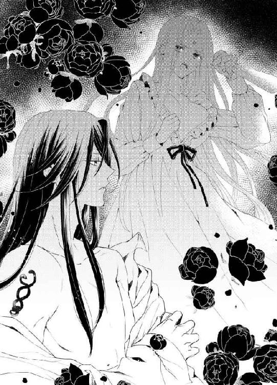
「わふん！」
ふいにフェアがクラウディオの胸に飛び乗り、ロシータを見上げて鋭く吠えた。
「あ──」
夢から醒めたような気持ちになり、手からぽろりと短刀が落ちた。床に落ちた短刀が、鈍い金属音を立てる。
「わん、わん、わん」
フェアはけたたましく吠え続ける。
呆然としているロシータに顏を向けたまま、クラウディオは小犬の頭を撫でた。
「フェア、もういい。もう心配ない」
小犬はさっと鳴き止み、彼の手をペロリと舐めた。次に、ロシータのだらりと垂れた手をそっと舐めてくる。びくりと身を竦ませると、クラウディオの腕が伸び、彼女の手首を強く掴んだ。骨が折れるかと思うほど、強い力だ。
「──っ」
「できないか。では、私が君を殺してやろう」
そう言うや否や、ぐいっと彼の胸に引き寄せられる。
「離して......や、ぁ、ん......」
腕を振りほどこうとしたが、強引に口づけされてしまう。いきなり唇を割られ、舌を絡み取られた。濃厚な赤ワインの味がする。ちゅうっと強く舌を吸い上げられ、ほとんど飲んでいないのに、酩酊したように頭がくらくらする。
「ふ......や、やぁ、や......っ」
そのまま情交に持っていかれそうで、必死に彼の胸で腕を突っ張る。わずかに唇を離したクラウディオが、鋭い眼差しで凝視する。
「本当に、君は素直じゃない──君はもはや、私に殺意など持てない」
「な......にを、知ったふうに......んっ」
きゅっと寝間着の上から乳房を掴まれ、思わず声が漏れた。男は服地の上から小さな乳首に吸い付いた。たちまち尖った乳首が、凝って甘く疼いてくる。
「あ、あ、ずるいわ......こんなの......ぁ、んぅ」
乳首を甘噛みされ、みるみる身体の力が抜けてしまう。確かに殺意など、霧散してしまった。彼の手慣れた愛撫に素直に反応してしまう身体が口惜しい。
「そら、もう甘い声が漏れた──たやすいものだ」
クラウディオが鼻で笑い、片手で寝間着の裾を捲り上げ、すべすべした太腿を撫で擦る。
「卑怯な......こんな風にされたら......」
太腿から這い上がってきた指先が、秘裂をくちゅりと暴くと、もはや恥ずかしいほどに濡れている。
「抵抗できまい──だから、私を殺すことなどできはしない」
蜜口を長い指がわざと音を立ててぐちゅぐちゅと掻き回す。腰が痺れるような快感に、媚肉がひくひく反応してしまう。男の指の動きを追おうと、神経がそこに集中してしまう。
「......ぁ、くやしい......ン、あぁ......」
クラウディオは、頬を上気させ喘ぐロシータの表情を楽しむように見つめた。
「悔しがることはない──素直な君でいればいい」
彼の指がさらに媚腔の奥へ押し入り、鍵状に曲げたそれで彼女の感じやすい部分をぐりぐり抉じる。
「んぁ、あ、やめ......しないで......そんな、に......っ」
ロシータはくるおしい悲鳴を上げ、激しい指責めに身悶えた。こんなにあっさりと感じさせられ、追い上げられるのが自分でも不思議なくらいだ。さっきまで微塵もそんな気配がなかった蜜壺は、すっかり濡れ果てて溢れるほど蜜を滴らせる。これでは、クラウディオとの情交を待ちわびていたと言われても反論できない。ずっずっと淫猥な音を立てて、指が深々と膣壁を穿ち、たちまち絶頂に追い上げられてしまう。
「はぁ、あ、やめて、も、あぁ、だめ、だめだから......っ」
首を振り立て背中を仰け反らし、がくがくと腰を痙攣させて昇りつめた。
「やぁ、あ、あぁぁっ」
きゅうっと淫襞が収斂し、男の指を締め上げる。同時に奥からたっぷりの愛蜜が吹きこぼれ、部屋の中にぷんと雌の卑猥な香りが漂った。
「は......ふぅ、あ、ぁ、あぁ、はぁ......」
ロシータは全身を戦慄かせ、男の胸に崩れ落ちた。
「──自分がどんなに感じたか、わかるか」
膣腔から引き抜いた指を、男が半開きの唇に押し込んできた。口腔に自分の甘酸っぱい味を感じ、ざわざわ身体が震える。
「や......」
男が口腔を掻き回し、唾液で濡れた指を引き抜くと、これ見よがしに自分の口に含んだ。その仕草があまりに妖艶で淫らで、達したばかりの身体に熱い血潮が駆け巡る。
「指ではもの足りないだろう」
こちらの気持ちを見透かしたかのように、男が言う。ロシータは耳朶まで真っ赤に染め、頭を振った。
「も、離して......私がどんなに危険かわかったでしょう？ 牢に戻しなさい」
腰を引きつけているクラウディオの手を振り払おうと身を捩る。男が苦笑する。
「あの調教部屋に戻りたいと？ もっと淫らなことをしてほしいという意味か？」
「なんてことを......！」
ロシータは思わず、ぱん、と小気味好い音を立てて、男の頬を張っていた。クラウディオは顔色ひとつ変えず、叩かれた頬を指先で掻いた。
「いいぞ。君のそういう気位の高いところに、本当に魅了される」
「馬鹿にしないで。もう一発叩かれたいの？」
ロシータがきっと睨みつけると、男は片手で自分の寝間着の腰帯をはらりと解いた。前開きの寝間着が大きく開き、裸体が剥き出しになった。
「そして、その誇り高い君が私の腕の中で、淫猥に落ちていくのがぞくぞくするほど、たまらないよ」
男が腰を浮かす。
「あ──っ」
股間の欲望は、すでに隆々と反り返っている。その逞しい屹立を目の当たりにすると、胸が掻き乱され、欲望に火が着いてしまう。
「さあ、君の欲しいものだ。好きにしたまえ」
「な、なにを言って......」
顏を上気させ目を泳がせるロシータを、クラウディオが獰猛な双眸で見つめてくる。
「自分で私に跨がって、腰を振るんだ」
獣のように欲望に光る目で見つめられると、ロシータは緊縛されたように身動きできなくなる。彼の視線だけで軽く達してしまいそうなほどだ。目の前の逞しいものが自分の中に挿入ってくると想像しただけで、下腹部がぎゅうっと疼く。だが、なけなしの理性を振り絞り蚊の鳴くような声を出した。
「そ、んな、恥ずかしいこと、無理だわ......」
誇り高い女王が、自ら求めてはしたない行為をするなど考えられない。するとクラウディオは誘うように腰を浮かし、艶めいた低い声で言う。
「大丈夫だ。いつぞや、君が白馬で疾走していた時のように、腰を上下に揺すればいい。あの時の君の勇姿は今でも目に焼き付いている。あんな風に、私を乗りこなせばいい」
「っ──あなたって、本当に品がない......あっ」
硬い亀頭の先が、ほころんだ蜜口を軽く突いた。
「やめて......意地悪......」
それだけで媚肉がうずうず蠢く。
「さあ、女王らしく欲しいものを奪いにこい」
この男は本当に口がうまい、と思う。自分の自尊心を貶めたり持ち上げたりして、心を翻弄する。それに反発しながらも、心は翻弄されてしまう。
「......ぅ」
おずおずと男の肉茎の根元に手を添え、腰をそっと持ち上げた。男の腰に跨がる格好になり、狙いを定めてゆっくり腰を沈めていく。
「ん、あ、ぁ、ああ......」
傘の張った先端が、濡れそぼった淫襞を割り開いてずぶずぶと侵入してくる。太い雁首が、疼ききった膣襞を擦っていく感触に、背中がぶるっと震えた。
「や、あ、挿入って......あぁ、恥ずかしい、あぁん......」
自ら腰を落としてく姿を目の当たりに見られていると思うと、羞恥で全身が灼け付くように熱くなる。だが、やっと求めていたもので満たされた悦びに、膣腔がきゅうきゅうと収縮を繰り返し、さらに奥へと男の欲望を呑み込むのを止めることができない。
「あ、っふぅ、あ、奥まで......あぁ、あ」
根元まですっぽりと収まり、身体の中心が彼で目一杯満たされているようで、息をするのも苦しい。
「よくできた──そのままゆっくり腰を上下に振るんだ」
クラウディオがさらに促してくる。彼は両手を伸ばして彼女の寝間着の前を開き、たわわな乳房を解放すると、ゆっくりと揉みしだいた。しなやかな指先が、つんと勃った乳首を転がすと、びくりと蜜壺が収斂した。
「あ、だめ、そこ、弄っちゃ......」
「ふ──君の中が熱くうねってる」
男が感に堪えたような声を出し、ふいに腰をずんと突き上げた。
「ひ、あぅ、あ、だめっ......」
子宮口まで突き破るのではと錯覚するほどの衝撃に、ロシータは悲鳴を上げた。
「こ、壊れちゃう......っ」
「では、君の好きなように動くんだ」
「う......ぅ」
涙目になって、そろそろと腰を浮かす。雁首の括れが淫襞を巻き込んで抜け出る感覚に、怖気のような喜悦が走る。先端ぎりぎりまで抜き、再び腰を沈める。脚に力が入らず、全体重をかけてしまい、最奥で愉悦の火花が散った。
「はぁっ、あ、奥......これ、当たって......」
あまりに強烈な刺激に、ロシータは仰け反ってぶるぶると首を振った。全身を強ばらせ、男に助けを求めるような視線を送る。
「こ、こんなの、無理よ......おかしくなって......」
「おかしくなるんだ──ロシータ、私の上で乱れくるう君が見たい」
悩ましい声で乞われると、自然に身体が動いてしまった。
「ん......ふ、あぅん......」
最奥まで届くと、四肢から力が抜けそうなほど感じてしまう。それを何度も繰り返しているうちに、快感が増幅し、次第に自分の感じやすい部分がわかってくる。秘玉のすぐ裏の辺りを脈打つ肉茎で擦り上げると、ぞくぞく痺れるほど愉悦が走り、熱い愛潮がいくらでも溢れてくるのだ。
女である自分の身体が忌まわしい──同時に、際限なく快感が深まっていくのを、どこかで胸を昂らせて期待している。
（この男のせいだ......全部、この男のせいで......私は、おかしくなって......）
口惜しいのに異常に昂ってしまう。
恨めしいのに悦びは迫り上る。
混乱する。自分の心の底を覗きたくない。目を背けるには、今目の前の快楽に溺れてしまうことだ。
「は、ぁ、あん、あぁん......」
白い喉を仰け反らし、夢中になって腰を淫らに揺さぶった。
「そうだ、上手だ──好いよ、すごく」
クラウディオが陶酔した声を出す。ロシータは喘ぎながら、男を見下ろす。感じている時の彼の、長い睫毛を伏せた表情はひどく蠱惑的だ。ずっと見ていたい。あんな顏を見られるのなら、どんなに淫らに腰を振ってもかまわない、とすら思ってしまう。
「はぁ、あ、あぁん、んんぅ......」
上下に動かすだけではなく、捻りを加えながら前後に擦り付けるのも心地好く、どんどん奔放な腰使いになっていく。
「ああ──なんて淫らで美しいんだ」
クラウディオが彼女の寝間着の裾を大きくたくし上げ、二人の結合部を露わにする。
「や、そんなに......見ないで、いやぁ......」
ぱっくり開いた陰唇から男の剛直が出入りする様を凝視され、羞恥に全身が火のように燃え上がる。さらに感じやすく、いっそう乱れてしまう。
「んん、あ、あぁん、あぁ、はぁあ......」
じわじわ迫り上る愉悦は男に突き上げられる悦びとはまた違い、不思議な酩酊感を呼ぶ。あと一息で達しそうで達しない、焦れた感覚にロシータは陶酔の表情を浮かべる。
「あ、ふ、あ、も......来そう......んんぅ、ん......」
目を閉じて下半身に神経を集中し、うっとりと喜悦を味わっていると、突然クラウディオが真下から腰をずずんと激しく突き上げた。
「ひうっ、あ、やぁ、壊れ......っ」
ふいの衝撃に、ロシータは目を見開いて悲鳴を上げた。思わず腰を引こうとすると、男の両手が細腰を抱え込んだ。
「一人では達かせない──一緒に──」
クラウディオが両手で女の腰を引きつけると同時に、がしがしと腰を打ち付けてきた。硬い亀頭が、子宮口を激しく抉ってくる。
「は、あ、やぁ、だめ、しないで、そんなに......あぁっ」
がくがくと揺さぶられ、ロシータは四肢を引き攣らせて身悶えた。
「その表情、たまらない──なにもかも剥き出しになった君が、いい」
男は腹上で髪を振り乱して喘ぐロシータを凝視したまま、がむしゃらに腰を突き上げる。
「いやぁ、あ、止めて......も、やぁ、本当に、だめ......っ」
ロシータは男の両肩を掴んで、必死に揺さぶりに耐える。官能のとろ火で沸騰寸前になっていた肉体は、やすやすと絶頂に達し、そのまま達きっぱなしになる。
「んん、ん、あ、また......やぁ、またぁ......っ」
全身を震わせ、男の上で繰り返し絶頂を極める。このごろはすっかり身体が敏感になり、少しの刺激で怖いくらいに達してしまうようになっている。それも、一度や二度で終わらない。
「はぁ、あ、また、達く......あぁ、やぁ、終わらないの......も、やぁっ」
膣腔が軋むくらいに穿たれ、次第に呂律は回らなくなり、言葉にならない咆哮を上げ続ける。
「やぁ、も、許し......て、変に......うぁ、あぁあ、あ」
「許さない──もっとおかしくしたい」
男は細腰を抱えていた手でぎゅっと尻肉を掴み、さらに激しく腰に打ち付ける。
「あぁあ、ああぁ、当たる......ぅ、あ、奥......あぁあ、だめに......っ」
歓喜の涙をこぼし、ロシータはもはや男にされるがままに揺さぶられ続ける。
「ロシータ──」
深く繋がったまま、クラウディオがゆっくりと身を起こした。二人の顏が向かい合わせになる。汗と激しい息づかい。男が唇を覆ってくると、ロシータは夢中になってその舌にむしゃぶりついた。
「ふ......ぐ、う、むぅ、は、はぁ、はぁあ......」
全身を犯す猛毒のような愉悦に耐えかね、力任せに男の舌を吸い上げることで、どこかにその熱を逃したかった。それは彼も同じ気持ちのようで、二人は互いの腰をくねらせながら深い口づけを繰り返す。唾液を啜り合い、舌をきつく絡ませる。息が止まりそうだ。恍惚として気が遠くなる。
「......は、あ、も、くるうから......も、終わらせて、お願い、もう、もう......っ」
わずかに唇を浮かせ、ロシータは必死で懇願した。
「くるうがいい──私のロシータ」
クラウディオの大きな掌が反り返った背中を抱え、そのまま仰向けに長椅子に押し倒した。彼はロシータの細い足首を掴むと、すらりとした両脚を淫らに大きく開かせる。そのまま彼女のからだを二つに折り曲げ、腰を穿ち始める。
「あ、ああっ、いやぁっ、これ、苦し......っ」
先ほど逆に今度は真上から貫かれ、ロシータは甲高い嬌声を上げる。長大な男根が、直接脳芯まで穿つような衝撃に、声すら枯れ果ててくる。
「ひぅ、あ、あ、も、や、あぁ、ああぁあ、くるう、あぁ、くるっちゃう......っ」
唯一自由に動く頭をぶるぶる振り立て、ロシータは泣き叫ぶ。
「ああ、とうとう言ったね──いい子だ」
クラウディオは満足げに深い息を吐くと、仕上げとばかりに腰使いを加速させる。
「ぐ......あ、ぁ、ふぁ、あ、あぁあ、ぁぁぁああぁ......」
もはや言葉にならず、せわしない息使いと共に獣じみた喘ぎ声しか出てこない。
もう壊れる。
感極まり過ぎたロシータは、知らず知らず両手で男の腕を力任せに掴み、ぎりぎりと爪を立てていた。
「達く──達くぞロシータ」
男が遂にくるおしげな声で呻く。
「は、あ、来て、あぁ、来て、お願......っ、あぁ、はぁあぁぁっ」
最奥で男の肉茎がどくりと震える。蜜壺が熱くうねり、締めつける。
身体の奥で、男の欲望が弾ける。
「あ、あぁあ、ああぁ、熱い......ぁぁああぁぁ」
びくんびくんと全身を痙攣させ、ロシータは最後の絶頂に身を任せた。
「──っ」
クラウディオが深い吐息とともに、二度三度腰を細かく打ち付け、ふいに動きを止める。
「は......はぁ、はぁ、あぁ、はぁ......」
苦痛なほどの快楽から解放され、ロシータは満たされきった表情で息を継ぐ。なにもかもひとつに溶け合うこの瞬間。
二人の間に憎しみの恨みもなくなる。
まだ絶頂の余韻にびくびくと総身を震わせているロシータの両脚をゆっくりと離し、クラウディオが身体を起こす。
「あ......ん......」
ずるりと男が抜け出ていく喪失感にすら軽く感じてしまい、身体がびくりと竦んだ。
「ふ──」
クラウディオが満足げに息を吐き、片手で乱れたロシータの金髪に触れた。その手が、そのまま優しく汗ばんだ頬に触れてくる。薄目を開いたロシータは、思わずその掌に唇を押し付けた。彼女の唇の感触を味わうように、男の手の動きが止まる。
クラウディオの口から、こぼれるようにその言葉が飛び出した。
「──ロシータ、結婚して欲しい」
まだ酩酊していた彼女の頭は、一瞬その言葉の意味が掴めなかった。
「え？」
目を見開いた。
男がまっすぐこちらを見つめ、もう一度言った。
「私と結婚してほしい」
思わず身を起こしたロシータは、まじまじとクラウディオの顏を見た。彼の表情は真摯だった。
心臓がばくばくいう。
ごくりと生唾を呑み込んだ。
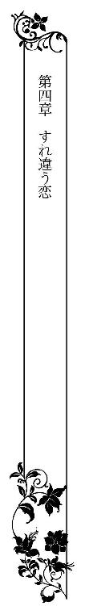
ロシータは呆然として男を見つめていた。
咽喉の奥が張り付いたようになって、なかなか声が出せなかった。
胸の中で様々な感情が渦巻く。
困惑、歓喜、躊躇、疑惑──。
やがて長年身につけた女王としての自覚が蘇り、ようやく口を開いた。
「自分の言っていることがわかっているの？ 女王と国王が結婚するということは、その国同士がひとつになることよ」
クラウディオはうなずく。
「もちろんだ」
「......」
ロシータは再び黙りこんだ。
クラウディオの本心がどこにあるか、掴めなかった。心が千々に乱れる。
クラウディオは言葉を続けた。
「バルラとプリオネスがひとつになれば、ボルヘスに対抗できる」
ロシータはどきりとした。
あの時のバルタザールの言葉が、脳裏に浮かんだのだ。
『あの男は、陛下をたぶらかし、プリオネス国を手中にするつもりかもしれませんぞ』 身体がわなわな震えてきた。
（クラウディオの本当の狙いは、私ではなく私の国にあったのだわ！）
端整な顏と甘い言葉、そしてめくるめく情交で自分を惑わしたのは、そのためなのか。
ロシータは青ざめて唇を噛んだ。クラウディオはそれを突然の求婚に戸惑っているのだと、勘違いしたようだ。彼女の肩に手を置くと、諭すように言う、
「今こそ、二人で国をひとつにしないか？」
気持ちが激昂してくる。
敵の配下の王とはいえ、彼に触れ合っているうちに、たぐいまれな人格者だと、今の今まで思い込んでいた。あやうくクラウディオに心寄せそうになっていた。
ロシータは邪険に男の手を振りほどいた。
「──馬鹿にしないで......！」
声が震えた。
クラウディオは目を見開く。
「ロシータ、私は──」
ロシータは、キッと男を睨みつけた。
「身体を奪い、最後には私の国をも奪おうというの？」
クラウディオが心外だというように首を振る。
「そんなつもりではない。私たち二人が力を合わせれば、きっと──」
込み上げてくる怒りで、頭が真っ白になっていた。
「プリオネスは私の国よ！ 誰にも渡さない！ あなたになど渡さない！」
男が気を呑まれたように口を閉ざした。が、すぐに言葉を続けようとした。
「ロシータ、私を君を──」
ロシータは彼の言葉を遮り、声を張り上げた。
「結婚などするものですか！ ボルヘス王の犬！ 属国王のくせに！」
涙がぼろぼろこぼれた。なぜ涙がこぼれるのか、自分でもわからなかった。怒りとともに、悲痛に胸が張り裂けそうだった。
クラウディオの瞳が暗く光った。
ひどく傷つき、落胆したような表情だ。そんな彼の顏を見ると心が鷲掴みにされ、思わず心がぐらぐら揺れてしまう。
「──君の気持ちはよくわかった」
ぼそりと彼が言った。
何の感情もこもっていない平坦な声だ。
ロシータの心がずきんと痛んだ。自分はとんでもない過ちを犯したのかもしれない、と頭の隅でささやく声がした。
「クラウディオ......あの......」
言い過ぎたわ、と続けようとする前に、男は顏を背けた。
「そこまで君に嫌われているとは──私も甘かったな」
ぞっとするほど冷ややかな声だ。
再び振り向いた彼の顏は、仮面を張り付けたように強ばっている。かつてないほど高圧的で恐ろしげだった。ロシータは震え上がってもはや声も出ない。
「よくわかった──では君を私の虜囚らしく、それ相応の扱いをしよう」
男はふいに長椅子からすっくと立ち上がった。ロシータは反射的にびくりと身を竦めた。クラウディオがそんな彼女を見て、冷たい笑いを漏らす。
「心配するな。大事な人質を傷つけたりしない」
彼は部屋の隅のチェストまで行くと、一番下の引き出しを開け、なにか天鵞絨の布に包まれたものを取り出し、戻ってきた。
「もはやこのようなものを君に使う必要はあるまい、と思っていたのだが──」
男が布を解くと、中から革と金で細工されたものを取り出した。細い革のベルトに金属の下履きが付いているような器具だ。そのものの正体はわからなかったが、あからさまに淫靡な形状をしていた。
「な、なにを──？」
ロシータは怯えて長椅子の上で身を竦ませた。男はこれ見よがしに、その何かを彼女の目の前に突き出す。
「これは貞操帯だ。君のために特別に作らせたものだ。これを締めて鍵をかけてしまえば、君は私以外の男性と交わることは生涯できない」
「そ、そんな物を──」
クラウディオは身を引こうとする彼女の足首を掴み、引き寄せた。そして、強引に貞操帯をロシータにはめてしまう。かちりと鍵のかかる鈍い音がした。
「あっ、や──」
股間をわずかに覆い隠す細い部分は金で、ひやりとした感触に怯える彼女にさらに追い打ちをかける。
「特別に、この金の部分に大粒の真珠を嵌め込んであるんだ。これで君は、いつでも私の所有物であると実感することになる」
「あ、ああ......いや......」
内側に嵌め込まれた真珠が、ロシータの敏感な突起にぴったりと押し当たる。身を捩るとそこが擦れ、びくりと腰が跳ねた。常に秘玉を刺激するように作られているのだ。
「あっ──いやよ、お願い、こんなもの外して......！」
顏を上気させてロシータは男に懇願した。
その様子を、クラウディオが満足そうに眺める。
「だめだ。それを外すのは、私が君を抱く時だけだ」
ロシータはぶるぶると首を振った。
こんな屈辱的な扱いをされたことはなかった。クラウディオは今までは、彼女にそれとなく敬意を払ってくれていたのだ。
求婚を蹴った彼女に、男は酷薄な扱いをすることに決めたのだ。
恥辱に打ち震える彼女を尻目に、男がゆっくり立ち上がった。
「そろそろ夜明けになる──私は政務に出なければならない。君はこの部屋にいるんだ。悪いが扉は鍵をかけさせてもらう。崖に面した最上階の部屋だ。ベランダから逃亡することも叶わないぞ。それ以外は、侍従に言えばなんでも望むようにさせてやろう。それと──これからは君を私のものであると世間にも知らしめるため、公に連れ出すこともしてやる」
ロシータは身も心もうちひしがれ、うつむいたまま返事をしなかった。
クラウディオはしばらく黙って彼女の側に佇んでいた。
彼の視線が自分に突き刺さるのを感じる。
それから、おもむろに男が部屋を出ていった。
にわかに部屋に静寂が訪れる。
ロシータはがっくりと長椅子に突っ伏した。
これまでのクラウディオとの間にあった絆のようなものを、自分から断ち切ったのだ。本来は、このように扱われるべきだったのだ。
（これでいいのよ。彼は敵なのだから──）
自分に強く言い聞かせるが、胸の中をすうすうと隙間風が吹き抜けていくようだ。
もしかしたら、彼の差し出した手を握り返すべきだったのか？
（誇りも地位も国も捨て、ただの女として彼に下ったら......）
ロシータは両手で頭を抱えた。
できるわけがない。
女王として生まれ育った自分は、女王としてしか生きられないのだ。
しかし股間を覆う違和感に、妖しく心がざわつくのも確かだ。慣れない金属の拘束具に、否応なしにクラウディオの存在を感じさせられてしまう。彼の息、汗、皮膚、筋肉、そして熱い欲望の屹立──淫らな面影が常に自分につきまとって、息が乱れる。
ロシータはぶるっと身体を震わせ、両手でぎゅっと自分を抱きしめる。
がんじがらめに男の色に塗りつぶされていきそうで、恐ろしい。
こうしていつか、身も心も彼の軍門に下り支配されてしまうのか。
妖しい予感に胸のざわつきが収まらなかった。
クラウディオの私室に閉じ込められ、淫靡な拘束具を着けられてはいたものの、窓ひとつなかった地下室での暮らしと比べれれば、今は天国のようだった。
文武両道のクラウディオの私室には大きな書庫があり、あらゆる種類の書物がきちんと分類されていた。好きな書物を物色しながら、ロシータはすべての書物に細かい書き込みがあるのに気がつき、改めて男の知性に感服した。
時間の許す限りクラウディオは部屋に戻り、彼女とともに食事を摂ってくれた。それまでの素っ気ない盛り切りの食事から、給仕がきちんとできたてを出してくれるものに変わっただけでも、ありがたかった。
そして、彼はことあるごとにロシータを城内の催しものに同伴した。
晩餐会、舞踏会、建国祝い、庭園鑑賞──。
まるで一幅の絵のようなお似合いの美男美女の姿に、誰もが息を呑み賞賛した。
クラウディオはロシータを所有物であると周囲に知らしめると言っていたが、彼女には自分の無聊を慰めるために、彼が心くだいてくれているような気がした。
だが求婚を断って以来、二人の間に薄い壁のようなものができてしまったようだ。クラウディオの口調は素っ気なく会話もぎこちなかった。それが当然だと頭で納得していたが、どこか寂しくてならない。夜の営みも、今までのように激しく熱いものではあったが、彼の心はなにか上の空のような気がしていた。
ある日朝食の席で、オムレツにナイフを入れながら、クラウディオがさりげなく言った。
「今度、我が城にボルヘス王を招き、晩餐会を開こうと思う」
憎い男の名前を聞き、ロシータはぴくりと眉を上げた。
「そう──ですか」
属国の王なら、そういう催しもあるだろうと思った。クラウディオはもくもくと食事をするロシータの横顔をちらりと見やり、静かに言う。
「君も出席するんだ」
ロシータはかちゃんと皿の上にナイフを落としてしまう。
キッと男を睨む。
「私も、ですって？」
クラウディオは平然としている。
「そうだ。うんと美しく着飾って、ボルヘス王の前に出るんだ。もう先方には、君も同伴することを伝えてある」
「お断りします！」
ロシータは決然と言った。しかし、クラウディオは顔色ひとつ変えない。
「別に君の同意は求めていない。私がそうしろと言ったら、従ってもらうだけだ」
怒りと屈辱で全身がわなわな震えた。
「あんな卑劣な王の顏を見ろと──」
クラウディオはうなずく。
「どんなに君が美しく妖艶なのか、王に見せつけてやるんだ。私に下げ渡したことを後悔するくらいにね」
口惜しさに目に涙が溢れた。
「私を晒しものにするのね......」
唇を噛み締めて泣くのを耐えているロシータの姿に、クラウディオの目が一瞬痛ましげに泳ぐが、すぐに突き放すように言った。
「食事の後に仕立て屋をここによこす。最新のデザインのうんと豪華なドレスを、仕立てさせるからな」
言い終えると彼はナプキンを畳んで立ち上がった。
「私があくまで断れば、ボルヘス王の機嫌を損ねることになるわね──あなたの国も、私の国も立場が悪くなる......」
ぽつりとロシータがつぶやいた。
背中を向けようとしていたクラウディオが、肩越しに振り返る。長い睫毛に涙の珠を溜めてうつむいているロシータの姿を、彼はまじまじと見つめた。
「その通りだ。君はとても頭がいい──了解したということだね」
ロシータは無言でうなずいた。
クラウディオがほっと息を吐き、そのまま退出した。
ひとり食卓に残されたロシータは、必死で嗚咽を噛み殺した。
クラウディオの言った通り、朝食後に何人もの仕立て屋が部屋を訪れ、ロシータの身体を細かく採寸していった。
「こんな見事な細腰は見たことがございません。さすがに一国の女王であられる」
「手足もすらりと長く、正に黄金比率。最高のドレスを仕立ててご覧にいれます」
仕立て屋たちの感嘆の声も、悄然としているロシータの気持ちを引き立てる役には立たなかった。
そして──ボルヘス王を招いての晩餐会当日。
「ロシータ、仕度は整ったか？」
昼過ぎに、礼装に身を包んだクラウディオが私室に入ってきた。
鏡台の前で、大勢の侍女に囲まれて化粧を施されていたロシータが振り返る。
「──っ」
クラウディオがはっと息を呑む。
薄桃色のシフォンドレスに身を包んだロシータは、輝くばかりに美しかった。
深くしたデコルテからは、ふくよかな乳丘が半分のぞき、ウエストを絞って細腰を強調し、たっぷりとフリルをあしらった裾は、ふんわりと優雅に広がっている。豊かな金髪は頭の上で盛り上げるように結われ、こめかみ辺りに細かいカールを無数に垂らしていた。彼女の抜けるように白い肌と美貌を際立たせるため、敢えてアクセサリーはダイヤのピアスのみ。だがそのピアスは大粒の見事なピンクダイヤで、それひとつでひと財産を成せるほど高価なものだ。
いつもと雰囲気が違う女主人に興奮したのか、フェアがしきりにドレスを嗅ぎ回るので、侍女が抱き上げて叱っている。
「思った以上の仕上がりだ──素晴らしい」
素直に感嘆の声を漏らしたクラウディオを、ロシータは眩しそうに見やった。
彼の方こそ、惚れ惚れするほどの美丈夫ぶりだ。
金モール飾りの付いた純白の礼服。金糸で細かい刺繍を施した太いサッシュベルトをきりりと巻き、長い脚を強調するような磨き上げた漆黒の長靴。つややかな黒髪を後ろに梳き流し、知的な白い額を爽やかに出している。涼やかな深青色の瞳に高い鼻梁、引き締まった口元。女性なら誰もが魅了されてしまう端整な顏。
あなたも素敵だわ──そう内心でつぶやいたが、実際は顎をつんと反らせて心にもないことをいってしまう。
「このドレス、あなたの指示？ 胸元が開き過ぎだわ、品がない」
クラウディオが微笑む。
「その白い谷間こそ、世界中の男を虜にする罠だな」
からかわれて頬が染まる。彼女の白い肌に血の気が昇ると、一段と美貌に磨きがかかり、侍女たちもほっと感嘆のため息を漏らした。侍女頭の女性が、皆の意見を代表するように言う。
「こんな美しい女王様は、世界中探してもおられませんわ」
クラウディオが満足げにうなずいた。
「では、女王陛下。お手をどうぞ」
彼が差し出した手に、ロシータは黙って自分の手を預けた。
部屋を出て、警邏の兵士に囲まれて、クラウディオと共に廻廊を進むうち、
（これから、あの憎いボルヘス王の面前に出るのだ）
そう思うと、緊張で足が震えてきた。
廻廊の先の大食堂の扉が見えてくると、呼吸が浅くなり手足が冷たくなってくる。
「ロシータ」
ふいにクラウディオが足を止めた。
極度に強ばった彼女の背中をそっと支える。
「しっかりするんだ」
「クラウディオ......私......」
ロシータは青ざめた顏で男を見上げた。
突然、そのまま彼女の背中を引きよせ、男の唇が血の気の失せた唇をおおってきた。
「んっ......」
包み込むような優しい口づけだった。
こんな衆人環視の中で──と振りほどこうとするが、冷えた唇を柔らかく噛まれると、身体の強ばりがゆっくり解けてくる。
「ふ......ん、ん......」
硬く結ばれた唇を割り開き、熱い舌がゆっくりと歯列や口蓋をなぞる。口づけを仕掛けると同時に、男の大きな掌があやすように背中をさすった。凍り付きかけていた全身の血が、とくとくと音を立てて流れ出すような気がした。
「──君が恐れるものはなにもない、そうだろう？」
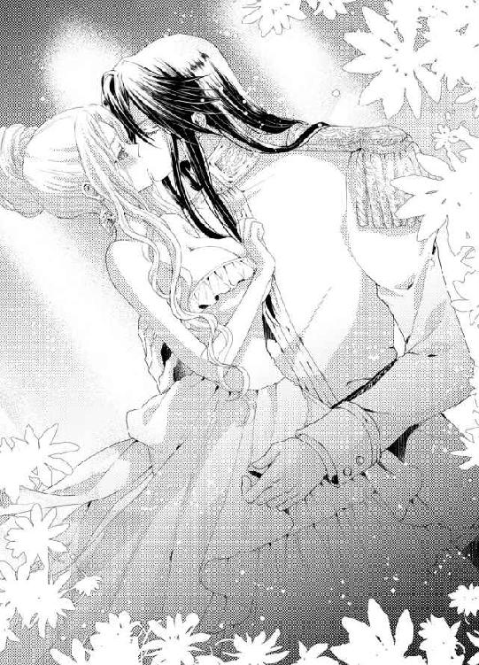
そっと唇を離したクラウディオが、艶めいた声でささやく。ざわざわと下肢が妖しく熱くなる。いつも嵌められている貞操帯の感触が、ふいに強く感じられて焦った。
「そ、その通りよ」
深青色の瞳を睨み返すと、その目が満足げに細められる。
「いいぞ。参ろうか」
腕を組み直したクラウディオが進もうとすると、侍女頭が慌てて近づいてきた。
「恐れながら、陛下。姫君の紅を直させてくださいまし」
クラウディオが足を止めた。侍女頭は手に下げていた化粧箱から、さっと口紅を取り出し、ロシータの唇に丁寧に塗り直す。
「陛下、お口を拭いくださいませ」
別の侍女がクラウディオにハンカチを差し出した。
男は今、初めて気がついたように、受け取ったハンカチで口を拭う。白い絹地に口づけで剥がれたロシータの口紅の跡がくっきりとついた。
「紅をさした王というのも、一興でしたかも」
緊張の解けたロシータが軽口を叩くと、クラウディオがわずかに頬を染めた。
可愛らしいわ──と、内心思ってしまう。おかげで、気持ちに幾分余裕すら出た。
「バルラ国王陛下並びにプリオネス女王陛下、お成りです」
大食堂の扉がさっと左右に開いた。
高いドーム型の天井からクリスタルの豪奢なシャンデリアが幾つも下がった広い食堂の中央に、繊細な刺繍を施した絹のクロスを掛けた長いテーブルが設えてあり、上座にボルヘス王が着席していた。彼の側では、王宮直属の四重奏楽団が荘厳な曲を奏でている。その曲がボルヘス国歌であることにロシータは気づき、クラウディオの細かい気の使い方に内心感銘を受けた。
「賓客をお待たせし、大変失礼いたしました」
クラウディオが深々と一礼した。
「なに、貴国の極上のワインを味わっていたところだ」
ボルヘス王が機嫌がよさげに、赤ワインのグラスを掲げてみせた。彼はすでに顏を赤くしている。顏を上げた彼は、クラウディオに寄り添っているロシータの姿を目にし、動きをぴたりと止めた。
「──ほお。プリオネスの姫君か」
耳障りなボルヘス王の声に顏をしかめそうになったが、居ずまいを正し、優雅に礼をした。
「ロシータにございます」
そのままボルヘス王のテーブルへ近づく。
「ロシータ、こちらへ」
クラウディオが自ら椅子を引いて誘導する。ロシータははっとした。
彼女の席はボルヘス王の隣であったのだ。
嫌悪と屈辱に耳朶に血が昇る。クラウディオが落ち着いた声で促す。
「さあ」
必死で表情を変えないようにして、静かに席に着いた。腰を下ろす時に、深くくれたデコルテの胸の谷間に、ボルヘス王の視線が釘付けになったのを感じたが、素知らぬ振りをした。
クラウディオはボルヘス王の向いに座った。
「これは──プリオネスの女王はこれほどまでに美しかったとはな」
ボルヘス王はクラウディオには一瞥もくれず、不躾にロシータを凝視する。
「あの時は何も身に付けておられなかったが、ドレス姿もまた一段と艶やかだ」
なんと品のないことを言うのだろう──ロシータはナプキンをもつ手がぶるぶる震える。
憎いボルヘス王の息づかいまでわかる位置にいるということが、あまりにも苦痛で耐え難い。
ねちねちと舐めるような視線も忌まわしい。
思わず救いを求めるように向いのクラウディオに目をやると、彼は平然として食前酒のグラスを掲げている。
「では、ボルヘス王国のさらなる繁栄を願い、乾杯させていただきます」
クラウディオがちらりとロシータに目配せする。ロシータは唇を噛んで、自分のグラスを手にした。クラウディオがそれでいい、という風にかすかにうなずいた。
「うむ」
ボルヘス王は満面の笑みで自分のグラスを掲げた。
「乾杯」
男たちがぐっとグラスをあおる。ロシータはグラスの縁に口を付けただけだった。ボルヘス王のための乾杯など、あまりにも屈辱的だった。
一気に呑み干したボルヘス王は、馴れ馴れしくロシータに言う。
「姫君、ワインを頂けますかな」
給仕があわてて駈け寄ったが、ボルヘス王は片手でそれを制し、身を乗り出すようにして言う。
「私は、姫君に言っている」
女王の自分に酌をさせるというのか。あまりに侮蔑的な発言に、ロシータはその場から逃げ出したい衝動に駆られた。
「ロシータ、ボルヘス王のグラスが空だぞ」
ふいにクラウディオが澄んだ声で言う。
ロシータはキッと彼を睨んだ。わなわなと背中が震える。だが、クラウディオの表情はあくまで穏やかで冷静だった。冷静過ぎるほどに──。
その刹那、ロシータはクラウディオの胸の内に、なにか隠しているものがあることを察した。クラウディオが自分に望むことは、ボルヘス王のご機嫌取りであること。そしてそれは、ただ彼に媚び諂うだけではなく、なにか思惑があるのだ。
腑に落ちたロシータは、おもむろにワインの入った壺を手に取り、極上の笑顔を作り、悩ましい声でボルヘス王に言った。
「まあ失礼いたしました。ボルヘス王、どうぞグラスを」
ボルヘス王がにやけた顏でグラスを差し出した。
ふーっとクラウディオが深く息を吐く気配がする。
（──これでいいのね？ クラウディオ）
ロシータはそっと彼に視線を送った。男が黙って見返してくる。二人の視線がしっかりと絡んだ。
晩餐会の間、ボルヘス王は終始ご機嫌であった。
デザートが出される頃、ふいに一人の侍従が頭を低くしてクラウディオの席に近づき、何ごとか耳打ちした。クラウディオはボルヘス王へ向き直ると恭しく言った。
「陛下、誠に申し訳ありませんが、私用で少しだけ席を外させてください。コーヒーまでには戻ってまいります」
ロシータははっと身を竦ませた。ボルヘス王の方は、すっかり酔いが回った赤ら顔で鷹揚に答えた。
「うむ、かまわんぞ」
クラウディオが頭を下げて席を立った。
「ク......」
ロシータは思わず彼を呼び止めようとした。背中越しにちらりとこちらを見やったクラウディオが、人差し指を唇の前に立てた。
「！──」
言葉を飲み込んだロシータに、クラウディオはかすかにうなずき、そのまま食堂を退出した。
食堂の扉が閉まるやいなや、いきなりボルヘス王に手をぎゅっと握られた。ロシータは悲鳴を上げそうになり、必死で耐えた。
「よい女になったな、女王よ。私に唾したじゃじゃ馬と同じ人物とは思えないほどだ。よほどバルラ王の調教がよかったとみえる。今が盛りの満開の薔薇の花のようだ」
ボルヘス王が身体を寄せてくる。
ロシータの全身に鳥肌がぞわっと立った。
「ボ、ボルヘス王、お、お戯れは......」
ロシータは声を震わせた。だがボルヘス王は平然と彼女の頬に触れてくる。びくりと身体が竦む。
「見れば見るほど美しい──我ながら早計であった。これほどまでにいい女であれば、バルラ王になど下げ渡しはしなかったものを」
（下衆！ 離して！ お前になど指一本触れられたくない！）
ロシータは胸の中で絶叫していた。
だが彼女は顏に強ばった笑いを貼り付けたまま、じっと耐えていた。
クラウディオにはなにか考えがあるのだ。それを自分の軽率な行動で、台無しにしてはいけない。
それでなくても、今ロシータがボルヘス王を拒み罵詈雑言でも吐こうものなら、バルラ国とプリオネス国の存亡の危機になるだろう。
ねっとりと短い指先でロシータの顏を撫で回していたボルヘス王が、やにわに彼女を抱きすくめ、唇を奪おうと顏を寄せてきた。あまりの衝撃に、ロシータは一瞬身動きできなかった。
「やめ......っ」
悲鳴を上げようとした刹那、澄んだ声が食堂に響く。
「大変お待たせいたしました。ボルヘス王。極上のコーヒーが参りましたぞ」
戸口に、給仕を連れたクラウディオが立っていた。ぱっとボルヘス王がロシータから離れた。さすがに人前で、これ以上の無体を働くのははばかられたらしい。
「我が女王は、失礼なかったですか」
クラウディオが笑みを浮かべて席に近づいてきた。表向きはにこやかだが、「我が」という台詞に幾分強い響きがあったようにロシータには聞こえた。
「うむ──楽しませてもらった」
ボルヘス王は何食わぬ顔で、給仕からコーヒーカップを受け取った。
ロシータは恐怖と屈辱で頭が真っ白になりかけていたが、席に着いたクラウディオに、
「ロシータ、冷めないうちにコーヒーを飲むがいい」
と落ち着いた声で促され、カップを手にした。手が小刻みに震え、カップがソーサーに触れてかたかたいう。クラウディオの視線を感じ、それに励まされるようにコーヒーを口に含む。熱く香ばしいコーヒーの味わいに、少しずつ気持ちが落ち着いてきた。
「今宵の晩餐会は実に満足のいくものであった。バルラ王、また接待にあずかりたいものだな」
ボルヘス王の言葉に、クラウディオは仰々しく頭を下げた。
「いつなりとおいで下さいまし。美しき「氷の女王」も、心より歓待申し上げるでしょう」
「おお、姫君の接待には、儂もおおいに楽しませていただいた」
ボルヘス王の言葉にロシータは微笑もうとしたが、口元がひくつき、上手く笑みが作れない。
晩餐会が終了し、ボルヘス王は先に賓客室へ引き上げた。
大食堂に二人きりに残された。
クラウディオは、うつむいたままのロシータにそっと声をかけた。
「よくぞ耐えてくれた、ロシータ」
その労るような声を聞いたとたん、ロシータの目から悔し涙がどっと溢れた。
「う......う、ぅ......」
膝の上で握りしめたナプキンに、ぽたぽたと珠のような涙が滴った。
クラウディオが音もなく立ち上がり、いつの間にか彼女の背後に周り、優しく肩に手をかけていた。ロシータは思わず、その手に自分の手を重ねた。
「こんな......あんな男に触れられるなんて......口惜しい......」
ふいに押さえ込んでいた気持ちが激昂した。彼女は身を翻し、クラウディオの手を振り払った。椅子ががたんと音を立てて倒れるほどの勢いで立ち上がり、男を睨んだ。
「もとはと言えば、あなたのせいだわ......！ この世で一番憎むべき男の隣に私を座らせて......あの野卑な目つき、あの穢らわしい手......！」
「ロシータ、落ち着くんだ」
彼が手首を掴む。それを振り払おうと、身を捩った。
「離して！ こんな屈辱はない......ボルヘス王に酌婦扱いされて......！」
押さえ込んでいた怒りを全て、クラウディオにぶつけてしまう。
「あなたのせいで......クラウディオ、あなたが......！」
「ロシータ──」
両手を掴んだクラウディオが、テーブルの上にロシータを仰向けにして押さえ込んだ。
「離して、離してよ......っ」
動きを封じられたロシータが、いやいやと首を振る。その顎を掴んだクラウディオが、強引に唇を塞いできた。
「ん、んぅ......ふ、ぅ......」
顏を背けて逃げようとしても、男の唇は許さない。唇を割られ、滑らかな舌が自分の舌に貪欲に絡み付こうとする。
「う、や、は......ぅ......」
ずるい──甘い口づけでなし崩しにしようとする。必死に歯を食いしばり、男の舌を拒絶すると、顏を上げたクラウディオが獣じみた表情で見下ろしてきた。
「今夜は君は上出来だった──意にそぐわぬことを強いた褒美をやらねばな」
彼は胸元のクラヴァットをするりと外すと、それでロシータの両手首を頭の上で括ってしまう。
「あ、や、やめ......」
加虐の予感に身を捩ると、男はドレスの裾をたくし上げ、すらりとした両脚をＭ字型に開かせた。腰のサッシュベルトを解き、彼女の両脚をそのままぐるぐる縛って固定してしまう。
「やぁ、こんな格好......っ」
貞操帯に覆われた股間が剥き出しになり、羞恥に気が遠くなりそうだ。
身を起こしたクラウディオが、息を継ぎながら彼女のあられもない姿を凝視する。
「美しく、淫らな私の女王──心配しなくても、君は誰にも触れさせない、渡さない」
男のしなやかな手が伸び、ドレスの深い襟ぐりを掴んで力任せに引き下ろした。
「あぁっ」
まろやかな乳房がふるんとこぼれ出た。外気に晒された乳首が、興奮と相まってきゅうっと凝ってくる。
「やめて、こんなところで......っ」
足を閉じたいのに、拘束された両脚はびくとも動かず、貞操帯びの排泄用の割れ目からはみ出た粘膜まで晒されていると思うと、羞恥でめまいがする。
「どこでも、私が欲しいと思ったら、君を好きなようにする」
クラウディオが欲望を押し殺した低い声で言う。
その声にぞくりと下肢が震える。男に供物のようにさし出された自分の姿に、異様な興奮が湧き上がり、剥き出しの下腹部がうずうず疼いてしまう。びくとも動けないと悟ったロシータは、目を伏せ顏を上気させ羞恥に耐える。
男の視線が身体中にちくちく突き刺さり、それが甘苦い被虐の悦びを湧き上がらせる。
どうしてだろう。ボルヘス王のいやらしい視線には、怖気しか感じなかったのに。ボルヘス王と同じように自分に欲情しているはずのクラウディオの眼差しには、春の雪のように全身が蕩けてしまう。
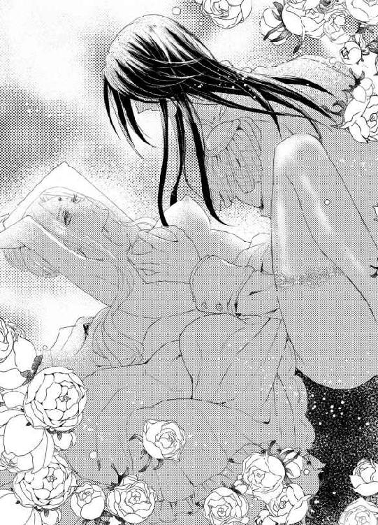
「高潔な君に、存外マゾヒスティックな性癖があることを知っているのは、私だけだ」
ふいに男の顏が股間に寄せられる。熱い息づかいを太腿の狭間に感じ、ロシータはびくりと目を見開く。クラウディオが、貞操帯の割れ目から覗く粘膜に、ちろりと舌を這わせた。
「ひ、きゃ、やぁあっ」
痺れる愉悦が脳芯まで駆け上り、ロシータは悩ましい悲鳴を上げた。
「淫らな蜜が、この隙間からどくどく溢れているぞ。貞操帯を嵌めるようになってから、ますます濡れやすくなったな」
くちゅりと淫猥な音を立て、男の舌がはみ出した陰唇の狭間を舐る。
「あ、あぁ、だめ、やぁ......」
充血した粘膜の一部だけを執拗に舐られると、蜜口全体がもどかし気にひくついてしまう。
「ふ、はぁ、そんなに、しないで......あぁ」
じわじわと欲望の飢えが下肢から迫り上り、ねだるように腰が蠢めく。男が両手を伸ばし、尖った乳首を揉み潰すように刺激してくると、渇望が子宮全体を責め立てて苦しいほどだ。
内側に嵌め込んだ真珠に圧迫されている秘玉が、ずきずき激しく脈動し、直に男に触れて欲しいと責めてくる。
「ふ、はぁ、や......やぁ......」
そんな淫らな願いを口にするくらいなら、死んだほうがましだ、と首をぶるぶる振る。欲望に苛まれている彼女の様子を、クラウディオが冷静に観察しているようで、余計に恥ずかしくてならない。
「ここも、舐めて欲しいか？」
ロシータの欲求を的確に把握した男が、指先で真珠を嵌め込んだ部分を突ついた。強い刺激を受け、腰がびくんと跳ねた。
「あっ、やぁ、さ、触らないで......いやぁっ」
彼は薄い金属片の上から焦らすように軽くノックする。
「ふ、あ、ぁ、だめ、だめって......」
もどかしさに声が上ずり、貞操帯の裂け目からとろとろと愛蜜が吹き出した。
「君は身体のほうがよほど正直だな」
クラウディオは再び、はみ出した粘膜をぬるぬると舐り始める。今度は金属片の上から、舌で押すように秘玉の上を刺激してきた。
「ひ、あ、だめ、だめぇっ」
そうされると内側の大粒の真珠が秘玉に食い込み、失禁寸前の時のように秘裂がきゅーっと痺れてしまう。
「やぁ、しないで、そんな、あ、漏れて......きちゃう......」
じゅっじゅっと間欠泉のように溢れてくる愛潮を、男が音を立てて啜る。恥ずかしくて気持ち好くて、頭が真っ白に染まる。直に秘肉を喰らわれるよりさらに淫靡に舐め回され、もどかしさが情欲を激しく煽る。拘束された身体に、煮え滾る欲望の熱が逃げ場を失い、気がおかしくなりそうなほどロシータを責めて立ててくる。
「んぅ、ん、あ、やぁ、も、やぁ、しないで......もう、しないでぇ」
甘い啜り泣きを漏らして、彼女が懇願する。
しかし、クラウディオは容赦しなかった。いつもならぎりぎりなところで愛撫から解放してくれるのに、今夜は執拗に陰部を舐めしゃぶり刺激し、彼女をひたすら追いつめていくのだ。
「も、ほんとに、おかしく......あぁ、あぁ、や、あぁぁっ」
何度も軽い絶頂に飛ぶ。だがひりつく膣腔は満たされないままで、さらなる強い刺激を求め、腰が誘うように淫猥にうねってしまう。
「あ、ぁ、クラウディオ、私......あぁ、中に......あぁ、もっと......中に......」
頭が煮え立ち、自分でなにを口走っているかわからなかった。
濡れた口元を淫らに光らせ、クラウディオが股間から顏を上げた。
「中に？ なにが、欲しいって？ はっきり口にしてみろ」
長い指先が、意地悪くはみ出した粘膜の狭間を掻き回す。それだけで息を呑むほど痺れてしまう。
「や......言えない......あぁ、や......」
ロシータは狼狽えて声を震わす。
「では、この恥ずかしい器具は外してやらない」
クラウディオが、首から金鎖で掛けている鈍色の小さな鍵を取り出し、これ見よがしに彼女の顏の前にかざした。貞操帯の鍵だ。それを目にすると、子宮がきゅーんと痛みが走るほどに疼いた。
「う......ぁ、あ、あ......」
欲望を満たして欲しくて、全身ががくがく痙攣する。彼の灼熱を受け入れ、目一杯満たされ突き上げられたい。ひとつに交わって高みを目指す悦び知り尽くした今、この飢えを解消してもらわなければ本当におかしくなりそうだ。貞操帯を着けられてからは、男の承諾なしにはあの部分を自分で触れることすら叶わないのだ。
「......どうか......挿入れて......」
それだけ口にするのも、恥辱で気が遠くなる。媚薬を使われて強制的にではなく、自ら欲望に流されて言う卑猥な言葉に、屈辱と喜悦と相反する感情が交差する。
「なにを？」
クラウディオは容赦ない。
ロシータは涙目になる。だがもはや一刻の躊躇もならなかった。声を震わせて懇願してしまう。
「お......願い、ちょうだい......あなたが欲しいの......あなたの太くて硬いもので、私のここを満たして欲しいの......どうか、どうかもう......」
恥ずべき言葉を続けざまに口にしてしまい、ロシータは全身を火照らせてうつむいた。
「そうだ、いい子だ──素直になればいい」
クラウディオは満足げにうなずき、首からかけた鍵を手にすると、貞操帯に取り付けられている金の錠前をかちりと外した。革の腰帯から金の板が外れ、ふいに股間が解放された。
「はぁ、ああ......」
拘束を解かれた秘裂が、嬉しげに開閉を繰り返し、とぷりと蜜を溢れさす。
「ああ、真っ赤に腫れ上がって、なんていやらしく私を誘うんだ」
クラウディオも切羽詰まって声を出す。彼はもどかし気に脚衣の前を緩め、逞しく屹立した剛直を掴み出した。
「あん、クラウディオ......早く......」
その硬く膨れた欲望を目にしたとたん、ロシータの最後の矜持が崩れ、彼女はもどかしげに腰をくねらせ、男を誘った。
「ロシータ──」
男がテーブルに膝を着き、のしかかってくる。膨れた亀頭の先端が、ほころびきった蜜口に押し当てられただけで、ロシータは甘いため息をついた。次の瞬間、クラウディオは躊躇なく、一気に最奥まで貫いてきた。
「あああぁっ、ああああぁぁぁっ」
焦らしに焦らされた身体は、たちまち絶頂に駆け上る。そして、そのまま快感は下ることを知らない。
「く──ロシータ、あっという間にもっていかれそうだ」
熱く絡み付く媚肉の感触に、クラウディオが苦しげな息を吐いた。膣襞の貪欲な動きに負けまいと、クラウディオは全体重をかけるようにして、力強い抽挿を開始した。
「あぁん、あ、深い......あぁ、奥、あ、すごい......あぁっ」
果敢な男の責めに、ロシータは我を忘れて嬌声を上げた。
「いいね──解放された君の身体、声、表情、どれをとっても私を魅了してやまない」
クラウディオは灼熱の肉棒を深々と蜜壺に突き入れ、腰を押し回して抉るように抜き差しを繰り返す。
「あぁ、も、達く、あ、また、達く、やぁ、また......ぁ」
「いいぞ──いくらでも達くがいい、本性を剥き出しにした君は、最高だ」
男は自分の腰の動きに合わせてた小刻みに上下する乳房を片手で鷲掴み、交互に乱暴に揉みしだいた。
「君は私を求めている──心から──そうだろう？」
深々と揺さぶりながら、クラウディオが艶かしい声で尋ねた。
「あ、やぁ......違う、わ......そんな......ぁ、あ」
雄々しい突き上げのたびに、声が途切れ途切れになってしまう。
「この期に及んで、まだそんな偽りを口にするのか？ 君のここは、こんなにも私を咥え込んで離さないというのに──」
勢いよく引き抜かれすぐに最奥まで貫かれ、ロシータは白い喉を仰け反らせてあえかな声を漏らした。
「......あ、あなたが、こんなにしたのよ......わたしを、こんな身体に......ひ、どい......人」
「君はそれを待ち焦がれていたんだ──氷の女王という偽りの仮面を被り続けている自分を、破壊しつくされることを、望んでいた」
「う、ああ、そんなこと......ちが......」
否定しようとしたとたん、ぐりっと子宮口まで突き上げられ、あまりの衝撃にロシータはひゅうっと息を呑んだ。
「ちがわない──」
ずんと再び凄まじく突き上げられ、ロシータは目を剥いてひいひい喘いだ。
目を見開いていたが、その瞳には何も写っていない。愉悦で霞んだ瞳には、ぞくりとするほど雄の魅力に溢れたクラウディオの端整な顏しか見えない。汗ばんだ白い額、乱れた黒髪、欲望に濡れた切れ長の深青色の目、紅い舌をちろりと覗かせた妖艶な口元──魅了されてしまう。
彼の声に、匂いに、情熱に、苛烈な欲望に、そして溢れる知性に──全てに心が持っていかれる。身体中が彼を欲している。
「あ、あぁ、クラウディオ......クラウディオ」
気がつけば、男の名前を連呼している。
「そうだロシータ、私を呼べ、私だけを呼べ」
男は縦横無尽に腰を打ち付け、ロシータを激情の渦へ巻き込んでいく。
「や、あ、も、終わらない......あ、終わらないの、クラウディオ......っ」
達しても達しても、身体が貪欲に絶頂を極めてしまい、恐ろしいくらいの愉悦に恐怖すら感じてくる。自分の心が完全に解体され、男の望むように作り替えられてしまいそうな予感に戦慄く。
「素晴らしい──君はどこまで淫らになっていくんだ。私の方が置いていかれそうなほどだ」
男は感嘆のため息を漏らし、ロシータの細腰をぐっと引きつけると、最後の仕上げとばかりにがしがしと剛直を突き上げた。
「はぁあ、あ、クラウディオ、あ、もっと、お願い、私を......私のすべてを......っ」
あまりの法悦に、胸の奥底の気持ちが口をついて出てしまう。
「もっと......あぁ、もっと、奪って......っ」
ロシータの瞼の裏が真っ赤に染まり、彼女は深い忘我の底へ真っ逆さまに落ちていく。逼迫した媚襞が、きりきりと男の肉棒を締め上げた。
「ロシータ──ロシータ......っ」
彼女を追いつめた瞬間、クラウディオも激しく欲望を解放する。
「あぁあ、あぁぁっ、あぁ、んんんっ」
びくんびくんと男が大きく腰を痙攣させ、灼熱の迸りが一気に最奥まで飛び散った。
「は......あぁ、はぁ、はあ......っ」
硬直した身体の隅々にまで喜悦が行き渡り、やがてその強ばりが緩んでくるときの開放感──。
同時に達した男の汗ばんだ身体が、ゆっくり折り重なってくる瞬間──。
世界は甘く二人だけを包む。
煌めくような幸福感に、憎悪も恥辱もなにもかも浄化されてしまう。
「......ふ、あ、ぁ......あぁ......」
ロシータは心地好い疲労感に包まれて、うっとり目を閉じた。その柔らかな頬に、クラウディオが自分の頬を寄せてくる。彼がそっと彼女の両手両脚の縛めを解いた。全身に緩やかに血が流れ始めた。
二人は折り重なってしばらく互いの心臓の鼓動に耳を澄ませていた。
「ロシータ──」
おもむろに男は彼女の乱れた金髪に顏を埋め、彼女の耳元で柔らかな声で言った。
「愛している」
一瞬ロシータは我が耳を疑った。あまりに感じ過ぎて、まだ全身の感覚が戻っていない。聞き間違いだ。
恐る恐る目を開けると、すぐ側にじっとこちらを見つめている男の顏があった。その瞳は慈愛に満ちている。彼は彼女のアメジスト色の瞳を見据え、もう一度繰り返した。
「君を、愛している」
「！」
心臓が破裂するかと思うほど跳ね上がった。冷め始めていた身体中の血がかあっと沸騰し、耳朶まで赤く染める。息が詰まって呼吸が上手くできない。
「な......にを、言っているの？」
はっきり聞こえていたが、思わず問いただしてしまう。
「最初に砂漠で君をひと目見た時から、私は心奪われていたんだ。ボルヘス王の前に引き出された君を、自分の命を賭しても救いたいと思った」
男の告白に、こめかみの血管がどくどくいう音が聞こえそうなほど緊張した。
（言いくるめられてはだめ。この男は、私ではなくプリオネスが欲しいのだから）
必死で自分に言い聞かす。なのに、クラウディオの情熱的な告白に胸がきゅんきゅん甘く疼き、込み上げてくるせつない喜びを押さえきれない。
「あなたはなにか勘違いしているのよ。私があなたに完全に征服されれば、ボルヘス王の機嫌取りになるから、だから、私を愛していると思い込もうとして──」
なぜ彼の気持ちを翻そうと説得しているのか、自分でもわからない。囚われ屈辱を味わい拘束され矜持を引き摺り下ろされ、自分がひどく疑い深くなっているを感じていた。そして、身体に染み付いた女王としての誇りが、唯々諾々と甘いささやきに乗ることを、拒んだのだ。
「君こそ勘違いしている。わからないのか。征服されたのは私のほうだ。君を知れば知るほど、私は身も心も君に囚われてしまっているんだ」
「──」
「どんな手段でも使い、君のすべてを私だけのものにしたくてしたくて、どうしようもない」
クラウディオがそっと抱きしめてくる。鼻腔いっぱいに彼が身に纏うオーデコロンと汗の香りが満ち、目眩がしそうだ。心臓の鼓動は早鐘を打ち、肌を密着させている彼には、それが痛いほど伝わっているに違いない。
「そ、そんな甘言を弄しても、わ、私はあなたと結婚なんか、し、しませんから」
高飛車に言うつもりが、しどろもどろになってしまい歯がゆい。しかも消え入りそうな頼りない声で──。
耳元でふっと男が笑いを含んだ息を吐いた。彼はゆっくり顏を上げ、上気しているロシータの頬を優しく撫でた。
「いつでも君がその気になってくれるまで、私は待つつもりだ──それに」
クラウディオがにんまりする。
「君の心は言葉と裏腹だと、私は思っているしね」
「！」
悔しいがその笑顔に、胸が甘くときめいてしまう。
「あ、あなたの言うことが万が一本当なら、あなたは私に手の内を曝け出したのよ。私に弱みを握らせたことになるのよ。覚悟なさい」
気恥ずかしさをごまかそうと、つい強気な言葉が口をついてしまう。するとクラウディオは、子どもをあやすように彼女の頭を優しく撫でた。
「いいとも。君に翻弄されるのは望むところだ」
あくまで余裕しゃくしゃくな彼の態度に、むっと膨れて顏を背ける。どうしてだろう。彼の前だと、ついつい子どもっぽい態度を取ってしまう。それを受け止めてくれる男の懐の深さを、ロシータも感じている。
（甘えている......私、いつの間にかこの男に甘えきっている）
自分のどこにこんな弱さがあったのだろう。
彼の前でおどおどしたり混乱したり、泣いたり、ふくれたり、怒ったり──今まで表に出してこなかった感情が、すべて吹き出してしまう。悔しいのに、どこか気持ちが浮き立っている。
「──仮に百歩譲って、あなたの気持ちがまぎれもないものとしても、なぜ、それを私に告げたの？ 私が同じ気持ちを返すとでも思ったの？」
憎まれ口が止まらない。
クラウディオが一瞬、口をつぐんだ。言い過ぎただろうかとふと心配になり、窺うように深青色の瞳を覗き込むと、彼はどこか遠くを見るような目になる。
「それは──今宵、君が私の意を汲んで、ボルヘス王の野卑な振る舞いに耐えてくれたからかもしれない。胸が熱いものでいっぱいになって、私は言わずにはいられなかった──」
彼の表情が恥じらう少年のようになる。
「この情熱が君には迷惑なものだとしても、私は知っていてほしくなったのかもしれない」
こんな端整な顏をしてこんなひたむきな告白をされたら、どんな女だって陥落してしまうだろう。ロシータは彼が眩しくて、視線をずらしてしまう。
「改めて君に誓う──私はどんなことをしても君を守る。そして、君を害するものは容赦しない」
「──」
属国王のくせにボルヘス王に逆らう気概があるのか、とは口に出せなかった。
そんな揶揄を霞ませるほど、彼の表情は真摯だった。
彼に全てをあずけ、守ってもらったら──刹那、ロシータの胸はその想いで満ちた。だが、一抹の疑惑は拭いきれない。自分を愛する振りをして、国土を奪う策略ではないかと──。
惑う胸の内を見透かしたかのように、クラウディオがそっと瞼や頬に唇を押し付けた。
「話はそれだけだ──君が返答をする必要はない。なぜなら──」
そのまま唇を覆ってくる。
「ん......んん......ん」
熱い舌を押し込まれ、くぐもった声を上げながらロシータは身を捩ろうとする。そっと唇を離したクラウディオがいつもの口調で言う。
「なぜなら君は、依然として私の虜囚なのだからな。どうあろうと、私の意のままだ」
ロシータはかっと頬を火照らせた。
「あ、あなたという人は......わ、私の気持ちを弄んで......！ んん、んぅ......」
再びきつく唇を塞がれる。息すら呑み込むような、激しい口づけ。
さっき情熱的に交わったばかりの身体に、みるみる火が点いてくる。
「や......も、あ、ぁ......」
ちゅっと音を立てて離れた男の唇は、そのまま耳朶や耳裏をねっとりと這い回る。
「弄べたらどれほどいいか──君の心がどうやったら、我がものになるか──私はそればかり考えている」
低く艶かしい声が耳孔に吹き込まれる。ぞくぞく全身に鳥肌が立つ。
「は、ぁ、無駄、よ、私の心は......誰にも......ぁ、あん......」
抗おうとする言葉とは裏腹に、身体は甘く蕩け隘路が熱く蠢いてくる。
（溺れてしまう......少なくとも身体は、この男に溺れきっている......）
ロシータは淫らに霞んでいく頭の隅で、そう思う。
「ロシータ、もう我慢できない」
クラウディオは彼女の太腿の間に自分の片脚を押し入れ、性急に求めてきた。
「ぁ、もう、無理......挿入らないから、あ、ああっ」
前戯もなしにいきなり硬化した欲望が秘裂を割り、ロシータは悲鳴を上げる。一瞬蜜口が引き攣るように軋んだが、次の瞬間には、すっかり濡れ果てた媚肉がするりと肉茎を呑み込んでしまった。
「ふ──全部挿入ってしまったよ」
根元まで欲望を埋め込んだクラウディオが、嬉しそうな声を出す。それの満足げな声がしゃくに触るほど、膣襞は淫らな蜜で溢れてしまっていて、返す言葉もない。
「今度はゆっくり、やろう」
「ゆっくりって......も、さんざん......あ、ぁ、あ......」
男がゆるゆる腰を動かすと、じわりと甘い喜悦が下肢を蕩けさせる。
「あ、浅ましい男......ね」
次第に激しくなる肉棒の動きに、四肢を突っ張らせながら、ロシータは喘ぐ。
本当は浅ましいのは自分の身体だ、と思う。こんなにも貪欲でこんなにも底なしに愉悦を生み出す自分の肉体が、我ながら恐ろしい。
それを導き出すクラウディオの存在が、疎ましいとは思えない自分がいる。
愛を告白され情熱的に求められ、それを悦んで受け入れてしまうなんて──もはや恋人同士のようではないか。
（違う、違う、私はこの男に魅かれてなんか、いないの......）
快感に呆けていく頭の隅で、必死に自分に言い聞かす。
「ん、はぁ、あ、あぁ、はぁ......」
しどけない鼻声が尻上がりに高くなり、悩ましい嬌声に変わる。
逞しい肉棹が身体の奥でうねるように突き上げ、ロシータは全身に伝播していく愉悦の波動に意識をさらわれた。
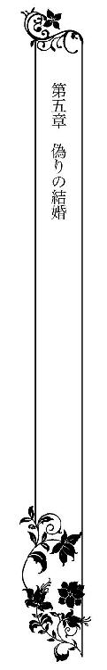
愛の告白をされてから、ロシータは妙に気恥ずかしく、まともにクラウディオの顏が見られない。彼は変わらない態度で接してくるが、ロシータの方が意識してしまいぎこちない態度になってしまうのだ。
相変わらず貞操帯は装着されていて、ぼんやりしているとつい下半身に意識がいってしまい、クラウディオのことを考えている。それにはっと気がつき、一人で赤面したり動悸を押さえたりしてしまう。
それはまるで初恋を知った少女のようだ。
実際、ロシータは生まれてからこのかた、異性に恋心を抱いた経験などなかった。
幼い頃から一国の女王として育ち、男に嫁ぐことなど思いもしなかった。彼女が誰かと結婚するとしたら、君主としてプリオネス国の跡継ぎを生むための政略結婚になるはずだった。
もし、ボルヘス国に侵略がなかったら、いずれロシータは国内の身分の高い貴族の男の誰かを選び、結婚しただろう。結婚は義務であった。だから彼女は異性に恋情をもつことは許されず、自分でもまたそういう気持ちとは無縁だと思っていた。誰も彼女に、恋愛感情というものは教えてくれなかったのだ。
だから今、自分の胸に渦巻くクラウディオに対する気持ちがなんなのか、理解できなかった。彼女はひどく混乱し、そのようにさせるクラウディオのことを恨めしくすら思ったのだ。
ボルヘス王の来訪からひと月あまり経った昼時のことだった。
クラウディオは地方の視察に出かけており、ロシータは一人で食事を摂っていた。
「女王陛下、コーヒーをおもちしました」
扉をノックして盆を掲げて入ってきた侍女を見て、ロシータははっとした。
いつもの侍女ではない。
背の高い見知らぬ者で、スカーフで顏を覆っている。本能的に警戒して立ち上がると、その侍女は素早くスカーフを引き下ろした。その顏を見て、ロシータは声を上げた。
「デメトリオ......？」
女装した部下のデメトリオだった。彼は口に指を立てて、沈黙を促す。ロシータは黙って椅子に座り直した。近づいてきた部下は、コーヒーを注ぐ振りをしながら小声で言う。
「陛下、侍女を襲って気絶させ、衣服を剥いで参りました。手短にお話を──脱走の決心はおつきになりましたか？」
ロシータは静かに答えた。
「私には多くの民を犠牲にしてまで、逃げ延びたいとは思わない」
「陛下！」
デメトリオがもどかしげに言う。
「私たちは各属国の騎士たちと連携を取りまして、ボルヘスに対して決起する計画を進めております」
「決起ですって？」
顏を上げたロシータに、部下はうなずいた。
「小国はみなボルヘスの圧政に苦しんでおります。領土の大きかったプリオネスが立ち上がれば、皆が追従するでしょう」
確かに小国の中ではバルラに続いてプリオネスは領土が広い。ロシータはその時、自分に求婚したときのクラウディオの言葉を思い出した。
「バルラとプリオネスがひとつになれば、ボルヘスに対抗できる」
思わずデメトリオに言っていた。
「バルラ王が私に求婚したのです」
部下は驚いたように目を丸くしたが、すぐに了解したようにうなずいた。
「なるほど、相手の思惑はプリオネス領土を手中にすることですね──しかし陛下、逆にこれはチャンスです」
「チャンス？」
デメトリオは彼女の耳元に顏を寄せ、密やかな声で言う。
「バルラ王と結婚なさいませ──その後、バルラ王を暗殺するのです。さすれば陛下は、バルラとプリオネスの二つの領土の王になれる。国力を上げてから、決起するほうがよい」
「暗殺ですって！ そ、そんな──」
ロシータは息を呑んだ。部下の表情は冷酷そのものだった。
「女王陛下、我が国のために非情におなり下さい。このままではあなた様は亡国の女王のまま、プリオネス国は、属国どころかボルヘスに取り込まれ、跡形もなくなってしまいます。国民はことごとく、隷従させられるでしょう」
ロシータは言い返すことができなかった。
愛する祖国が失われる──。
自分がぐずぐずとクラウディオとの情事に溺れている間に、自国の民を不幸に陥れようとしていたのだ。
「女王陛下、ご決断を！」
デメトリオが語気を強めた。
「......わ、わかりました......け、結婚します、バルラ王と......」
振り絞るように声を出した。
「了解いたしました。私はすぐさま同士たちの元へ戻り、このことを告げましょう。正式な婚姻が成されたあかつきには、再度バルラ王暗殺の手だてを連絡いたします。では、御武運を祈ります」
デメトリオはスカーフで顏を隠すと、頭を低くして部屋を退出した。
残されたロシータは呆然として座っていた。
（クラウディオと私が結婚する......あの人の国と命を奪うために、結婚する......）
目の前の景色がぐらぐら揺れる。
「君を愛している」
澄んだ声でそう告げた、彼の端正な顔が目の前に浮かぶ。ロシータは思わず両手で顏を覆った。
（あんな言葉、嘘。私を欺くための言葉よ。信じてはだめ。王たる者、国のためにならどこまでも非情になれるのだから......）
何度も自分にそう言い聞かす。
だが切り裂かれたような胸の痛みが去ることはなかった。
──数日後。
視察から戻ったクラウディオを、ロシータは美しく装って出迎えた。
「お帰りなさい」
私室に入ったクラウディオは、目の前で一礼したロシータの姿にはっと足を止めた。
メリハリのある身体の線を強調した銀色のシフォンドレス。あえて金髪を結い上げずに、サイドだけを頭の後ろにまとめて花模様の髪飾りで止めている。肌理の細かい肌にほんのり頬紅を入れ、少し濃いめの紅い口紅が色っぽさを加えている。まるで花の妖精のような可憐で美しい姿に、クラウディオはしばし見惚れていた。
「──ただいま。君が出迎えてくれるとは、感動的だ」
ロシータは笑みを浮かべた。
「あなたの帰りを首を長くして待っていたの」
「ほお？ それはどういう風の吹き回しだろう」
彼は嬉しそうに目を細めた。
ロシータは罪悪感で、一瞬顏を伏せそうになる。それほどクラウディオの表情が無邪気だったからだ。だが内心で自分に喝を入れ、まっすぐ彼の目を見つめて言った。
「私──あなたの求婚を受けようと思います」
クラウディオは不意をつかれたのか、目をぱちぱちしばたたいた。
「なんと？ 今、何と──」
ロシータは生唾を呑み込み、どうにかもう一度繰り返した。
「あなたと、結婚するわ」
「ああロシータ！」
いきなりクラウディオは彼女の腰を抱き上げ、軽々と宙に振り回した。
「そうか、受けてくれるか！ 私のものになってくれるのか！」
「あ、クラウディオ......やめてっ」
くるくると振り回され、ロシータは目を回して彼にしがみついた。二人が風車のように回る姿に、興奮したフェアがワンワンいいながらその周囲を走り回る。
「ああすまない──あんまり嬉しくて」
息を弾ませた彼は、照れくさそうに彼女を床に下ろした。ロシータは後ろめたさで心がずきずき痛んだ。
よもやクラウディオが、こんなに素直に喜んでくれるとは思わなかった。いつもの冷静沈着な彼とも思えないはしゃぎっぷりだ。彼はロシータの髪に顏を埋め、幸福そうにため息をついた。それからそっと口づけをしかけてくる。
「ん......」
いつもの貪るような熱い口づけではなく、啄むような優しい口づけを何度も繰り返す。唇を離すと、深青色の目でロシータの紫の瞳の奥まで見透かすように凝視した。
「だが、なぜ急にその気になったのだ？」
ロシータはあらかじめ考えてきた言葉を口にする。
「もう私には統べるべき国もない。こうやって虜囚として無聊な日々をおくるのなら、いっそあなたの妻になって少しでも王族らしく生きたいの」
胸に一物隠しているので、彼のまっすぐな視線が息苦しいほどだが、その言葉は本音でもあった。
クラウディオが苦笑する。
「なんだ──私への愛にやっと気がついた、とでも言うのかと思ったぞ」
ロシータは頬を赤らめる。
「な──うぬぼれないで、そんなこと、言うわけがないでしょう！」
彼がくすくす笑った。
「うん、いつもの君らしい──理由はどうでもいい。これで堂々と君を独り占めできる。いずれ、君の口から私へ愛を告げるようにしてみせる」
いつものからかうような口ぶりだが、明らかに声が浮き立っていて、彼がそれほどまでに自分を渇望していたのかと、あらためて感慨深く思った。
「ずいぶんと自信過剰なことね──そううまくいくかしら」
自分も普段の口調を崩さないように努める。
「うまくいくとも」
クラウディオはぎゅっと彼女を抱きしめ、耳朶を甘く噛んだ。
「もう、離さない」
「ぁ......」
数日ぶりの接触に、身体が敏感に反応した。男の舌が耳朶の周囲から耳孔の奥まで舐ってくると、心臓がどきどき脈動を打つ。甘い疼きを感じると、一方で素直に自分を信じているクラウディオにひどく罪悪感を感じてしまう。
（私は今、この人の命を奪うために結婚を承諾したんだ......）
国のためと自分に言い聞かせていたが、果たして今の自分にそんなことができるだろうか。結婚後、デメトリオの寄越す刺客を城内に導き入れるのが、自分の役目になるのだろう。クラウディオが無惨に殺されるのを、平然として見ていられるだろうか。こうして熱く息づいている彼を身近に感じたとたん、ロシータは結婚を受けたことを激しく後悔した。
恋とか愛とかはわからない。
ただ、もはや彼には一片の憎悪ももてなかった。
この若く美しく知性にあふれた王に、自分が魅了されていることを認めないわけにはいかなかった。
（だめだ、私にはできない......とてもできない）
「ロシータ、数日君と離れているだけで、私はもうせつなくて──君が欲しくて欲しくてたまらなかった」
欲望が昂ってきたのか、クラウディオは彼女の身体を抱きしめたまま長椅子の方へ移動する。
「あ、待って、私、やっぱり......んんっ」
ロシータが言いかけた言葉を、クラウディオが口づけで封じ込む。
「今さら考え直した、というのは無しだ。今は偽りの心でもかまわない。きっと本物に変えてみせる」
長椅子に彼女を押し倒しながら、クラウディオが熱を込めていう。
「偽り」と言う言葉に、心臓がぎくり跳ね上がる。反射的に身体を起こし、彼から逃れようとした。こんな後ろ暗い気持ちで抱かれたくない。
「だめ、クラウディオ、私......」
「いいんだ、ロシータ、そのままで──」
なにがいいというのだろう。彼にはわかっているのだろうか。命と引き換えに結婚するのだということを。
「や、お願い......私の話を......あ、だめっ......ぇ」
スカートを大きく捲り上げられ、太腿のはざまを性急に撫で回される。馴染んだ長い指が、繊細に彼女の感じやすい部分を弄ってくる。彼は首から掛けていた貞操帯の鍵で素早く錠を外し、陰唇をまさぐってきた。すでにとろりとそこは熱く潤ってしまっていた。
「そら、その生意気な口よりも、こちらのほうがよほど正直だ。私が欲しいと、素直に言っている」
「は、あ、またそんな品のない......ん、あぁ、いやぁ......」
「いやではないだろう──夫婦になったのだから」
「ま、だ、夫婦なんて、ひうっ」
クラウディオはずいぶんと欲望が鬱積していたらしく、愛撫もろくにしないまま、脚衣の前をもどかし気に緩めると、すでに限界まで漲った欲望を強引に突き入れてきた。
「は、きつ......い、やぁ、だめ、抜いて......」
すでに肉茎を半分以上こじ入れられ、ロシータは呼吸も困難なほどの圧迫感に、声を引き攣らせる。
「すまないが、もう無理だ。君が欲しくて欲しくて、百里を馬を飛ばして帰ってきたら、美しく装って出迎えられ、しかも結婚を受け入れるという──私がどんなに有頂天かわかるか？」
まだ最奥までは濡れきっておらず、じりじりと侵入してくる灼熱の剛直に、ロシータは息を凝らす。
「だから、結婚の話は......う、く、あ、ああぁっ」
刹那、太い先端がずんと子宮口を突き上げた。苦痛と甘い疼きが混ざり合い、ロシータは艶かしい悲鳴を上げた。
「ああ君の中──熱くてひくひく蠢いて、たまらない──」
根元まで貫いたクラウディオは、彼女をぎゅっと抱きしめ深い吐息をつく。
「君も私を欲しいといっている」
「......ひ、う、そ、そんな......ぁ、あ」
深く繋がり目一杯満たされ、あっという間に全身が灼け付くように熱くなる。男がおもむろに腰を押し回すように膣腔を掻き回すと、信じられないことにその一回の動きだけで、軽く絶頂に飛んでしまったのだ。
「は、あぁぁっ、あっ」
白い喉を仰け反らせて、びくびくと身体を震わせた。同時に最奥からどっと熱い淫蜜が吹き出した。
「そら、こんなにも私を待ち焦がれていたんだ」
男が熱を帯びた声を出し、ふたたびねっとりと肉棒全体で媚壁を押し回す。
「くぅ、は、あぁ、それ、やめて......ぁあ」
前後に抽挿を受けるのとまた違った、重苦しいほどの愉悦にロシータは喘ぐ。そしてそれを連続して欲しくて仕方ない。しかし男は、断続的に捩じ込む動きを繰り返しては、上気したロシータの表情を窺うように静止する。
「いい顏だ──なんて淫らで可愛い──」
「や......見ないで......あぁ、も、やぁ......」
クラウディオの帰ってくるこの数日、彼のことばかり考えていたのは事実だ。だが自分では、偽りの結婚をどう切り出そうか、そればかりに心を砕いていたと思っていた。
でも今、思い知る。
彼のことを考えるだけで、身体は密やかにしかし熱く欲望を蓄積してしまうのだと。
「あぁ、あ、も、お願い......奥に......あぁ、どうか......」
意地を張る気力は、すでになかった。甘く痺れた両手を彼の背中へ回し、せがむように引きつけてしまう。
「私が、欲しい？」
まだ動きを止めたまま、しかしさらに強く腰を押し付けてクラウディオが言う。
「う......ぁ、あぁ、ほ、しい......あなたが......」
ついに欲望に屈し、ロシータは消え入りそうな声で懇願する。
「うれしいよ、ロシータ」
男がゆっくりと抽挿を開始した。じわりと深い快感が下肢から全身に迫り上る。
「んぁ、あ、い......ぁ、くぁ」
本能を剥き出しにされそうになり、ロシータは必死で歯を食いしばろうとした。
「愛している」
その言葉とともに、亀頭の括れまで引き抜かれた肉茎が、勢いよく最奥まで捩じ込まれた。
「ひぁあ、あ、いい、あ、あぁ、いいっ......っ」
再び激しく達して、ロシータは絶叫した。遂に自ら欲望を解き放った言葉を発してしまい、羞恥にいたたまれなくなった彼女は、思わず男の唇を求めた。
「ん、ふ、ふぅ、んんぅ......」
何もかも、彼に呑み込んで欲しかった。
偽りと本音が混在して自分を責め立てる。苦しい。どれが自分の本当の気持ちか把握できない。
「ロシータ──」
彼女の口づけに応じながら、男の腰の抜き差しは次第に激しくなっていく。
「は、ふぁう、あ、あぁ、もっと......クラウディオ......っ」
自己嫌悪が陶酔へ変わっていく。
男の背中に爪を立てるくらい強く引き寄せる。愉悦の海に溺れさせて欲しい。
「わかっている──ロシータ、わかっているとも」
クラウディオはあやすような声を出し、さらに深々と彼女の快楽の源泉を抉り続けた。
バルラ王がプリオネス女王を娶るという情報は、クラウディオの命で大陸全土に知らされた。バルラの王城から、その旨を記した書状を着けた伝書鳩が何十羽と飛ばされた。
二人の婚姻は、ボルヘス王はもとより国境に潜んでいるデメトリオの一党にも知らされることとなった。
逃げ延びたプリオネスの王党派たちは、北の国境近くにある岩場に潜伏していた。ごつごつと尖った岩が無数に重なり合うこの辺境の地は、潜むにはもってこいであった。
鳩の通信により、ロシータがバルラ王との結婚を決めたと知った王党派たちは色めき立った。
「女王陛下におかれては、祖国のために身を挺していただき、誠に勇気あることだ」
「──だが、所詮女性。バルラ王に取り込まれてしまう可能性もある」
「いや、あの誇り高い「氷の女王」に限って、男に目が眩むことはあり得ない」
岩場の洞窟の奥で、十数人の王党派の男たちが熱を帯びた議論を闘わせていた。
「とにかく、ロシータ女王陛下を信じ、我々はプリオネス再建のために命を賭けよう」
話の中心にいたデメトリオが、力強く言う。
「──それほどまでに心服されているとは、女王はよき治世者であったのだな」
ふいに洞窟の入り口に、見知らぬ男の声がし、全員がはっと振り返った。
「何奴!?」
全員が剣の柄に手を掛けた。
逆光ではっきりわからないが、旅姿の長身の男だ。
その男は両手を顏の辺りにかざし、武器を持っていないことを示した。
「誉れ高きプリオネスの騎士たちよ。君たちのリーダーは誰だ？ 話をしたい」
デメトリオが警戒しながら一歩前に出た。
「私が首領だ。お前は誰だ？」
男は静かな声で答えた。
「プリオネス再興に力を貸したい──」
デメトリオは一瞬気を呑まれた。
男がゆっくり中に足を踏み入れてきた。
「晴れて夫婦となった記念に、私の別荘へ二、三日新婚旅行としゃれこまないか？」
朝食の席で、クラウディオがにこやかに切り出した。
ロシータは、慣れない「夫婦」と言う言葉に戸惑う。
「結婚式もまだじゃない。夫婦とは言えないわ」
つんとしてコーヒーカップに口を付ける。
「ふむ──では、婚前旅行ということでどうだ？」
クラウディオが苦笑いして、言い直す。
「婚前旅行、ってなんだか不埒な響きがするわ」
憤然と言い返す彼女に、男の笑みが大きくなる。
「君はあまのじゃくだな。私たちはすでに相当に不埒な関係だと思うが」
「な......っ」
周りに何人も給仕が控えている中で、朝から猥りがましいことを言う彼に呆れてしまう。
「もう黙ってお食事を済ませてよ。どうせ私がいやだと言っても、あなたは思う通りにするのでしょう？」
クラウディオはくすくす笑いながら、フォークを取り上げた。
「本当に君は、負けず嫌いでああ言えばこう言う」
嫌味を言われたのかとキッと顏を上げると、愛おしげにこちらを見ている彼と目が合い、耳朶まで血が昇ってしまう。
「当意即妙だと、誉めている──君ほど頭のいい女性はいないよ」
そんな風に誉められると調子がくるってしまう。ナプキンで口を拭うと、ロシータは目を伏せて言う。
「殿方は生意気な女性は好まない、と聞くわ」
それは実際、「氷の女王」と呼ばれていた時には、しょっちゅう彼女の耳に入ってきた言葉だ。
曰く、「女王陛下は才気走って、可愛げがない」と。
内心ひどく傷ついていたのに、自分ではそれをこそ褒め言葉だと受け止めようとしていたのだ。
「私は綺麗なだけの人形など欲しくはない。一国を統べる者として、互いに運命を切り開いてくれる、君のような勇気と知恵に富んだ女性をずっと捜していたんだ」
クラウディオの声があまりに真剣なので、胸にぐっと迫るものがあった。
ありのままのロシータでいい、と彼は言ってくれる。
「こんな私......可愛い？」
思わずそんな言葉が口をついて出た。言ってしまってから、ぼっと顏から火が出そうに熱くなった。
「あ、今の言葉は聞かなかったことにしてちょうだい！」
両手を羽ばたく鳥のように振って打ち消す。
「可愛いよ、ロシータ。世界中で一番」
クラウディオは平気で答えてきた。
赤面したまま彼を見ると、柔らかな視線が受け止めてくれる。なぜだか涙が出そうになる。ロシータは慌てて顏を逸らし、口ごもりながら言う。
「朝から、ば、馬鹿なこと言わないで。侍従たちに示しがつかないわ」
クラウディオはもう答えなかったが、彼が愛しげに見つめてくる視線だけは痛いほど感じていた。
翌日。
王都郊外にある小さな城に、クラウディオとロシータは向かった。
騎乗で進む二人に、気心の知れた侍従を数名従え、護衛の兵は遠巻きに同行している。
この国に囚われてきて、初めて王城を出た。
クラウディオの漆黒の愛馬に二人乗りした。ドレス姿のロシータは、フェアを抱いて男の前に横座りで鞍に座った。外気も馬に乗るのも久しぶりで、自然と心が浮き立つ。
「ああ、いい風だわ」
春の匂いを含む爽やかな空気に、胸いっぱいに吸い込んだ。
「半年以上も君を軟禁状態にしていたね。結婚したら、自由に行動するがいい、ただし、私の目の届く範囲にしてくれ」
手綱を握ったクラウディオが、背後から顏を寄せて言う。彼のさらりと長い黒髪が頬を撫で、それが心地好い。
「どうかしら──いつ逃げ出すかもしれないわよ」
ロシータはからかうように言う。
「逃げたら追うまでだ。地の果てまで君を捕まえにいく」
真顔で答える彼は冗談ではなく、本当にそうしそうだ。肩越しにちらりと彼を見上げ、ロシータはなにか言いかけて口をつぐんだ。
この数日、ずっと考えていることがあった。クラウディオにどうしても告げねばいけないことがあった。いつ言おうか迷っているうちに、出立の日になってしまった。
（あちらに到着すればほぼ二人きり......その時こそ、言わなければ）
そのことを考えると気が重くなるが、今は道中の美しい景色を楽しもうと思った。
王都を出て緩やかな勾配の一面の葡萄畑を横切り、二時間ばかり進むと、人家も畑もなく一面草原ばかりになった。地平の向こうには連なる山脈と、万年雪を頂いてそびえ立つアンヘルの峰が見える。
「そら、古城が見えてきたぞ」
クラウディオがまっすぐ指を差した。
草原の中に古い赤煉瓦作りの小さな城が立っていた。古色蒼然とした造りだが、手入れはきちんと行き届いている。
「まあ、可愛いわ──絵本の中の、おとぎの国のお城みたいね」
華やいだ声をだしたロシータを、クラウディオが少し驚いたように見た。
「現実派の君が、そんなロマンチックなことを言うんだな」
ロシータはさくらんぼのような唇をつんと尖らせた。
「ひどいわ。私だって無邪気な少女時代があったのよ」
クラウディオがふくれた彼女の頬をあやすように突ついた。
「そうか、さぞや絶世の美少女だったろう」
「うまいこと言って──」
知らん顔したが、さらりと彼の口からこぼれる賛美の言葉に心臓が躍ってしまう。
ほどなく古城の前に到着した。
「御無沙汰でございました、陛下」
城の管理人であろうか、人の好さそうな老夫婦が迎えに出たきた。
「うん──十五年ぶりくらいか」
クラウディオの言葉に、管理人の夫のほうが答えた。
「左様でございますね。まだ皇太后様がご健在でおられまして、王太子のあなた様の手を引いて、ここに参られて以来です」
「そうか」
クラウディオが懐かしそうな顏をした。
自分にも無邪気な少女時代があったように、彼にも無垢な少年時代があったのだ、とロシータは胸に迫るものがあった。
案内された部屋に入ると、ロシータは再び歓声を上げそうになった。
この古城は外観だけではなく、内部も凝った造りになっていた。部屋はアンティーク風の木製の家具でまとめられ、カーテンもテーブルクロスもベッドの敷布も全て臙脂を基調としたアーガイル模様で揃えられていて、とてもメルヘンチックだった。ベッドの脇のチェストの上の素朴な陶製の花瓶に、野の花が生けられているのも可愛らしい。
「素敵だわ、ほんとに絵本の中に入ってしまったみたいよ」
ベッドに腰を下ろし柔らかなクッションを試しながら、ロシータは声を弾ませた。戸口で黙って彼女の様子を見ていたクラウディオがほっと息を吐いた。
「よかった、気に入ってくれたようで。もし君が『こんな子供っぽい部屋はいやよ』とでもいったら、即座に大人っぽい仕様に変えさせるつもりだった」
「そんな──」
ロシータは彼の気の回しように目を丸くする。
「女王女王ともてはやされた君だが、本当は十八歳の乙女なんだからね」
子ども扱いしないで、と息巻こうとしたがふいに鼻の奥がつんとなって、うつむいてしまった。急に黙りこくった彼女に、クラウディオが気遣わしげに近づいてきた。
「──どうした？ 気分を害したか？」
隣に座り、そっと肩を抱いてくる。いつもなら、馴れ馴れしいと振り払うのだが、胸がいっぱいになっていてそれもかなわない。
「い、いいえ──」
ロシータは涙をこぼさないように何度も息を吸った。
「私──十八歳だったのだな、って......」
いつだって女王らしく年よりずっと上のように振る舞ってきたし、自分でも大人びていると自負があった。プリオネスでは誰もが自分を敬い大人として扱った。それが当たり前だった。
いつしかロシータは自分の歳を忘れ、孤高を保つようになった。それは彼女を壮絶な孤独へ追いやった。だが誰も、女王のそんな胸の内を知ろうとはしなかったのだ。
クラウディオだけが、隠していた本当の自分を見つけてくれた。
涙を呑み込んだ彼女は、まっすぐ彼の方に顏を向けた。
「クラウディオ、私、あなたにお話したいことがあるの」
男はじっと彼女を見つめた。それから小さくうなずいた。
「わかった。では城の周りを散歩でもしないか。綺麗な景色の中でなら、話も弾もう」
差し出された男の手を、彼女は黙って取った。
城の周囲には狭い石畳の道が巡らされていた。
「こちらへ。景色の美しいところにでるから」
クラウディオに誘導されて、ロシータはゆるい勾配を上がった。昇りきると、ふっと目の前の視界が開けた。
「ま......あ！」
期せずして感嘆の声を漏らしてしまう。
雪が溶けたばかりのなだらかな丘一面に、鮮やかな青色の小花が咲き誇っていた。
「春咲きの青りんどうだよ」
クラウディオが丘の向こうを指差す。
「あちらに群生している紫と白の花は、春クロッカスだ」
ロシータは、生まれて初めて見る美しい花々に声も無く見惚れていた。
アンヘル山脈寄りのバルラ国は、プリオネスよりも標高が高く、気温が低い。高山植物の宝庫なのだろう。
「素晴らしい景色だわ......あなたの国はなんて美しいの」
思わずつぶやいていた。
「いや、君の国だって美しいだろう。私の国より気候の暖かいプリオネスには、きっともっと違う花が咲くのだろう」
「ええ、そうね──」
ロシータは祖国の花々を思った。
「私の国では、春に薄桃色のシャクナゲという花が満開になるの。国全体が薄桃色に霞むくらい、それは見事よ──あなたに、いつか見せてあげたいわ」
それは自然と口をついて出てきた言葉だった。
ロシータははっとそれに気がつき、慌てて口を押さえた。クラウディオは景色に目をやったまま、うなずいた。
「そうだね、いつか見せてもらおう」
ロシータはくじけそうになる気持ちを引き立てようと、咳払いした。
「あの──クラウディオ、私の話っていうのは......」
「それより、先に私の話を聞いてくれないか」
彼女の言葉を遮って、彼が口を挟んだ。
「──わかったわ」
「うん、おいで」
二人は手を取り合って、花の咲き乱れる小径を歩いた。
「君は、ここらに伝わる古代神話を知っているかい？」
なにを言い出すのだろうと思うが、ロシータは答えた。
「その昔、この地はひとつの国だったが、国王夫婦があまりに仲が悪く、案じた神が、国の中央に大きな雪山を造り、王と王妃をそれぞれの国に分け隔ててしまった、という神話でしょう？」
クラウディオが大きくうなずいた。
「そう、そうしてバルラ国とプリオネス国が出来た、といういい伝えだ」
「それが──？」
男はアンヘル山を指差した。
「私は君と結婚したら、あの山の下にまっすぐ通る道を築き、バルラとプリオネスが自由に行き来できるようにしたいと思う」
「......それはどういう？」
現状の両国は、交通は山々を大きく迂回するため、相手の国に行き着くのに、十日以上かかる。山を昇り降りして行き交うのは、雪山に慣れた猟師だけだ。それでも五日はかかってしまう。
隣国とはいえ、それまで両国があまり交流して来なかったのは、そういう地形のせいもあるのだ。
クラウディオはぎゅっと彼女の手を握り、熱を込めた声で言った。
「私と君で、新たな国を作るんだ。そう、「バルオネス」という国名はどうだろう。私たちで、神話を作り変えないか？」
「え？」
思いもかけない言葉に、ロシータはすぐには彼の意図が理解できなかった。だが、次の瞬間、ロシータは声を張り上げた。
「それって、バルラとプリオネスをひとつにするっていうことなの？」
クラウディオはまっすぐに彼女を見つめてきた。
「その通りだ。どちらがどちらの国を滅ぼすのでも征服するのでもない。国が交じり合い大きくなって、生まれ変わるんだ」
「──」
ロシータの胸は感動で震えた。
今の今まで、クラウディオが自分に求婚したのは、プリオネスの領土を手中に収めるためだと疑っていたのだ。
ロシータはそんな自分をひどく恥じ、うつむいた。
それからおもむろに顏を上げ、男と同じように真摯な表情で彼を見返した。
「素晴らしいお話だわ。クラウディオ、私は心打たれたわ──でも」
次の言葉を口にする前に、心臓がぎゅっと痛んだ。
「私は、やはりあなたと結婚できない」
激昂するかと思ったのに、クラウディオは静かな眼差しで見つめている。
「そうなのか？」
「そうよ──だって私は、あなたとの結婚を受けたのは──その後にあなたを亡き者にして、国を奪い取ることを考えていたからだわ」
彼の澄んだ視線に耐えられず、目を伏せた。
「あなたの真摯な気持ちを裏切るようなことをしたわ。気の済むように、私を罰してくれていいわ」
じっと瞼を閉じていると、ふわりと甘い柑橘系の香りがして唇にそっと口づけられた。
「!?」
はっとして目を開くと、クラウディオが額をこつんとロシータの額にぶつけてきた。
「では、君を心ゆくまで抱かせもらう」
焦って語気を強くした。
「私は危険な女だと言っているのよ！」
クラウディオは両手で彼女の卵型の顏を包み、微笑んだ。
「うむ、女はそれくらいのほうが手ごたえがあって好きだ」
ロシータは面食らう。
「ふざけないで」
「私はいたって真剣だよ。そういう告白をしたということは、君にはもう、私に殺意はないのだろう？」
「う──」
言葉に詰まるが、そうやすやすと理解されても口惜しい。
「で、でも、いつ気が変わってあなたの命をねらうか、わからないから......ん、んぅっ」
最後の方は口づけで塞がれてしまった。
「んんぅ、ん、離して......私は、私はもう......っ」
「──私を愛している？」
誘うような艶かしいささやきに、全身にかあっと熱く血が駆け巡った。
「な、そんなこと、そんなこと......あるわけ......っ」
感情が昂り、身を捩って、抱きすくめてくる彼の腕から逃れようとした。
「この期に及んで、意地を張るのか？ 聖なるアンヘル山が見下ろしているぞ」
再び口づけを仕掛けられ、今度は容赦なく舌を吸い上げられた。
「......ふ、く......んぁ、あ、んんっんん、ん」
甘い感覚が舌先から全身に拡がり、ロシータは次第に抵抗を弱めていく。クラウディオは片手で彼女のうなじを抱え、片手を細腰に回しぴったりと身体を密着させて、口づけを繰り返す。歯列をなぞられ激しく口蓋を舐られ、咽喉奥まで掻き回される。脳芯が霞んでくる。
「ん、んん、あ、ぁ......」
男が柔らかな布地のスカートの両脚の間に、ぐっと自分の足を割り込ませてくる。その刹那、下肢に妖しい疼きが走り、激昂していた気持ちが甘い陶酔にすり替わっていく。
「......はぁ、は......ぁ......」
彼女の抵抗が収まったと見て取るや、クラウディオはそっと顏を離した。彼女の滑らかな金髪を優しく撫で付け、鼻が擦れ合いそうな至近距離で見つめてくる。
「本当の気持ちを、君の口から聞きたい」
ロシータは涙目になる。心臓が破裂しそうな勢いでばくばくいう。
こんな言葉は、彼女の一生と無縁なはずだったのに──。
「あ、愛している......わ」
その瞬間、羞恥で気が遠くなりそうだった。
「うん──もう一度」
崖から飛び降りるような気持ちで告白したのに、クラウディオは存外のんびりした口調で言う。
「そ、そんなの......い、一生に一度しか、言いませんからっ」
頬が火のように燃え上がり、痛みすら走る。
「いいから」
こんな風に余裕しゃくしゃくでいたぶってくるクラウディオなんか、嫌いだ。そう言おうとしたのに、口をついて出たのは甘い台詞だった。
「あなたを愛しているの。今気がついた。私はあなたを、ずっと愛していたんだわ」
堰を切ったように、愛の言葉が唇から溢れてくる。
「クラウディオ、好きよ、大好き。愛している、愛してるの」
もはや胸にせまる熱い想いに耐えきれず、ロシータは彼の首に両手を絡ませて、きつく抱きついた。彼がいつも身に纏っている爽やかな柑橘系の香りに包まれると、しみじみと愛おしさが溢れてきた。感極まって涙がこぼれ、しゃくり上げてしまう。
「こんな気持ち、今まで知らなかった。あなたを心から愛しく思ってる」
「ロシータ、ああ私のロシータ」
クラウディオも骨が折れんばかりにぎゅっと抱きしめてくれた。
「やっと君から、本当の気持ちを口にしてくれたね──嬉しいよ、こんな幸せな気持は生まれて初めてだ。愛しているよ、私の女神」
彼の声がかすかに震えている。
二人は互いの想いを身体で感じるかのように、しばらく無言でじっと抱き合っていた。二人の心臓の鼓動がひとつになり、愛し愛される幸福に酔いしれた。
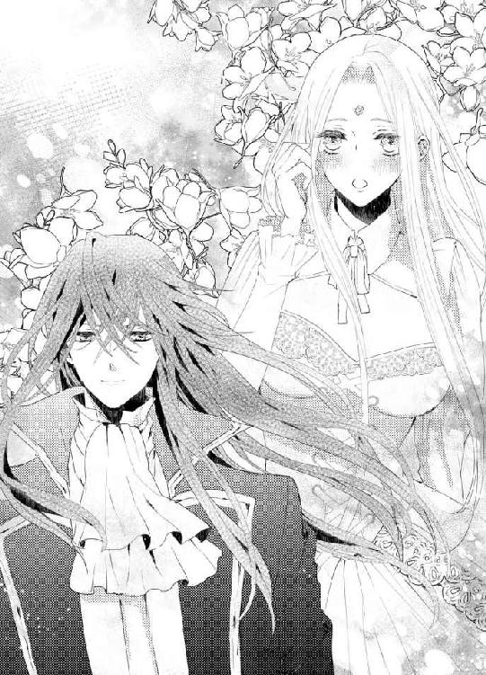
それからそっと身体を離し、万感の思いをこめて見つめ合う。
「今の言葉に嘘偽りはないね」
「ええ──もうあなたに嘘はつかないわ」
どちらからともなく唇が重なる。
それまで奪うような口づけをしてきたクラウディオが、唇を掠めるような啄むような口づけを何度も繰り返す。それはまるで、恋を一からはじめていこうかとするような、初々しい口づけだった。
やがて身体を離したクラウディオは、一歩後ろに下がり甘い声音でささやく。
「そこで君のすべてを見せてくれ」
こくんとうなずいたロシータは、おずおずとドレスの釦を外し始めた。自ら服を脱いで男の前に裸体を曝すのは、これが初めてだった。まだ日が高く、雲ひとつない青空の下で脱衣する背徳的な行為に、興奮が高まる。
「こ、これで、いい？」
一糸まとわぬ姿になり、さすがに恥じて両手で胸元と股間を覆ってしまう。するとクラウディオが静かに言う。
「何も隠さないで、全てを晒して」
ロシータは素直に両手を脇に垂らした。極度の緊張で心臓が早鐘を打っていたが、もう彼に逆らう気はなかった。
「綺麗だ──そうしていると、まるで花の精のようだ」
クラウディオがうっとりした声を漏らす。
真っ白い雪を頂いてそびえ立つアンヘル山を背景に、その雪よりも白い肌。風になびく艶やかな金髪。アメジスト色の瞳。すっと通った鼻筋に、愛らしい紅い唇。すんなり長い手足。まろやかな乳房。紅く色づいた小さ目の乳首。きゅっと括れたウエストから豊かに張った腰に続く美しい曲線。背筋を伸ばして佇む彼女の周囲に咲き誇る、鮮やかな青りんどうの花──。どんな腕のよい画家でも描けないほど、その景色は神々しい。
クラウディオがゆっくり近づいてくる。
彼は無言で首から下げていた小さな鍵を取り出し、まだロシータの下肢に嵌まったままだった貞操帯の錠を外した。股間を覆っていた帯が外れると、ひやりとした外気が直に陰部を刺激する。
「ぁ......」
解放感に思わずため息が漏れる。
「もう、こんなものは必要ない──君は永遠に私のものになるのだから」
クラウディオは手にした貞操帯を、おもむろに丘陵の向こうに投げ捨てた。淫らな器具は、日の光を弾いてきらりと光り弧を描いて飛び、群生した春クロッカスの中に姿を消した。
「さあ、君の隠れている密やかな部分を、もっと私に見せてごらん」
「や......そんな......」
誰もいないと思っていても、恥ずかしさは押さえられない。それも、おずおずと両脚を開いて、わずかに陰部を露呈させる。
「いい子だ、もっとだ。自分の指で開いて──」
「うぅ......」
破廉恥な行為を要求されているのに、身体が勝手に動いてしまう。顏から火が出そうなほどの羞恥に耐えながら、細い指でそっと秘裂を押し広げる。くちゅりと淫らな音がして、すでに濡れそぼった媚肉が露わになった。
「綺麗だ。紅い花びらが濡れてひくひくしている。私を誘うようだ」
「言わないで......」
外気に触れた秘玉が硬く凝ってくる。同時に乳首もつんと尖り、どちらもひりひりして痛いほどだ。男の視線に耐えて秘部を晒していると、淫らな蜜がとろとろ溢れてきて、股間から太腿まで伝っていく。男のしなやかな指が、粘つく愛液の跡に沿って太腿をなぞった。それだけで腰がびくんと浮いた。
「ここを──自分で触れたことは？」
「な、ないわ......そんなはしたないこと......」
「では、触れてみて」
「う、無理よ、そんなこと......」
恥ずかし過ぎて涙目になる。なのに陰唇はますます火照って追いつめてくる。
「君にできないことなどない──やってごらん」
低い声で促され、そろそろと陰唇を指先で探ってみる。ぬるりとした感触に、じくんと膣壁が疼く。
「あぁ......」
艶めかしいため息が漏れた。
「いい顏だ──いつも私がするように、自分で愛撫するんだ──感じて」
「はい......」
男の愛撫の記憶を脳裏に思い浮べようとする。しかし、そんな必要はなかった。クラウディオに開発し尽くされた淫らな身体は、自分でどうすれば気持ち好くなるか知っていた。
熱い愛液を指に受け、ほころんだ花弁をぬるぬると上下に擦り上げる。
「ん、ふぅ、う......」
甘い愉悦が隘路の奥まで走り、腰がひとりでにうねってしまう。膨れ上がった秘玉が早く触れて欲しいとずきずき疼くが、わざとそこは避ける。すぐに達してしまうのが惜しい。
「は......ん、あぁ、あ......」
指の動きに意識を集中させるため、軽く瞼を閉じる。
「乳房も──弄るんだ」
どこからか男の声がする。
「んん、あ、んんぅ......」
言われるまま片手でたわわな乳房を弄り、硬く尖った乳首を指の腹で円を描くように転がすと、鋭い疼きが子宮口を襲う。
「あっ、あぁ、あ......」
次第に淫らな自慰に酔いしれていく。ひくひく開閉する媚肉に指を突き入れ、くちゅくちゅと掻き回すと心地好さがさらに肥大する。もう我慢できなくなり、ひりつく秘玉をころっと転がす。
「はぁあ、あ、あ、あぁっ」
全身が甘く蕩ける。激しい快感が秘玉から身体の隅々にまで広がっていく。内腿が感じ入ってぶるぶる震え、立っていることが難しいくらいだ。
「んんっ、ん、あ、クラウディオ、あ、だめ、私、このままじゃ......っ」
自分の淫猥な姿を、男が息を潜めて見つめているのがわかる。
「素敵だ──君がそんなにも自分を曝け出してくれるなんて──」
「あぁ、ああ、お願い......もう......」
膣襞が飢えてものくるおしくうねり、ロシータを追いつめる。男の欲望で満たしてほしくて、指がもどかし気に蜜口を掻き回す。
「いいよ、一度達してごらん──私の前で」
クラウディオの声が欲望に震えている。
「んう、あ、そんな......あぁっ、あ......」
じんじん疼く濡れ襞を、ぬるつく指で速度を上げて擦り上げる。愛蜜が弾け、くちゅりくちゅりと卑猥な音をたてるのもかまわず、物欲しげにひくつく膣腔の一番飢えている部分に指を突き入れた。じゅくっと愛潮が噴き出す。
「ああぁ、あ、漏れて......あぁん、だめ、溢れて、あぁ、も......うっ」
仰け反って一番感じやすい部分を何度も突き上げた。小刻みに全身が痙攣する。
「や......あ、あぁ、クラウディオ、私、あぁ、達って......あぁ、達っちゃ......ぅ」
男の突き刺さるような視線を感じながら、ロシータは生まれて初めて自慰で達してしまう。
「あぁあ、あん、あぁあ、あああぁあっ」
達した後も快感の波が押し寄せ、ひくんひくんと腰が断続的に跳ねた。
「......ふ、あ......はぁ、あ、ぁあ......はぁ......っ」
がっくりと全身の力を抜き、ロシータはそっと目を開ける。隘路が自分の指を痛いほど締めつけているのがわかった。いつもこうして男の欲望に絡み付いているのだと思うと、放出したばかりの淫らな熱が、再び体内に籠ってくる。
「──ロシータ」
「あ......ぁ、こんなの......私......」
ゆっくり指を引き抜くと、とぷりと新たな愛蜜が溢れてくる。
「素敵だった──自慰で達した君は、最高にいやらしくてそそる」
クラウディオがそっと肩を抱き寄せ、ロシータの手首を持ち上げ、まだ愛液まみれの指を自分の口に含んだ。
「あっ、だめ......」
「美味しい──淫らな君の味がする」
彼の熱い口腔内で指をしゃぶられると、全身がざわざわと獣じみた欲望で震えた。
「あ、あ、クラウディオ......お願い、今度はあなたのもので......」
潤んだ瞳で見上げると、彼もまた欲望で濡れた瞳で見つめ返した。
「もちろんだ。そこに手を突いて」
クラウディオが地面を指差す。
こんな白昼の大自然の真ん中で......と、戸惑う気持ちより、早く愛する人とひとつになりたい欲望の方が勝った。
「はい......」
脱ぎ捨てたドレスを広げ、その上に四つん這いになる。男の方に尻を向けた淫猥な姿勢だ。
「いいね、日の光にきらきら濡れ光った花びらが私を誘っている。ここに咲いているどの花よりも、美しくていやらしい」
「や......そんなこと言わないで」
獣の姿勢で尻を付き出し、ほころんだ陰唇から蜜をとめどなく滴らせている自分は、どんなにはしたなく卑猥だろう。なのに、欲望だけを剥き出しにした姿を、愛する男だけに晒しているのだと思うと、身体はどうしようもなく燃え上がってしまう。我知らず腰を揺らして、求めてしまう。
「お......願い......早く......クラウディオ......あなたが欲しいの......」
「ロシータ、私もだ──君が欲しい」
男が脱衣するかすかな衣擦れの音がし、足音がちかづいてくる。待ち焦がれてぞくぞくする。
温かな両手が、尻肉に触れた。期待で秘所がずきずきする。
「挿入れるよ」
ぐっと熱く硬い欲望の先端が、秘所に押し当てられた。
「はあっ」
触れられたとたん、下肢が蕩けそうに甘く感じてしまう。潤みきった蜜口が、つるりと亀頭の先を呑み込んでしまう。
「すごい──引き込んでくる」
クラウディオが興奮した声を出す。蜜口をくちゅくちゅ掻き回されただけで、軽く達してしまいそうだ。隘路の奥がせつなく蠢いて苦痛なほどだ。
「あ、もう焦らさないで......お願い、どうにかなってしまう......」
物欲しげに尻を振り立てると、男はそれを待っていたかのように一気にずぶりと貫いてきた。
「あああぁっ」
すっかり火の着いていた身体は、あっという間に達してしまい、あられもない嬌声を上げてしまう。
「ああ、君の中、なんて熱い──」
男が惚れ惚れした声を出す。疼ききった膣襞や膨れ上がった秘玉は、この上なく感じやすくなっていて、屹立で数度穿たれただけで気が遠くなる。
「はぁ、あ、だめ、あ、おかしくなって......ぁあっ」
あまりの衝撃に思わず腰が逃げそうになると、力任せに引き寄せられる。そして腰を抱え込まれたまま、張りつめた剛直が縦横無尽に突き上げてきた。
「あ、すご、い、あぁ、すごい、あぁあぁっ」
男の片手が乳房を背後から掴み上げ、尖った乳首をくりくりと抉じる。
「んん、んぅ、あ、胸、だめ......あぅ、奥、奥が......あ、痺れて......っ」
真っ白な快感が全身を何度も突き抜けていく。
「可愛いよ、私のロシータ、君のすべてを愛している」
クラウディオは感極まったように、彼女の耳朶に歯を当て熱い息を耳孔に吹き込み、脈動する欲望を叩き付けてくる。
「んぁ、あ、や、すご、い......あぁ、すごい、の......」
激しく揺さぶられ、喘ぎ声が途切れ途切れになる。
「すごいだろう？ 君をもっと乱してやりたくて──壊したくて、私はおかしくなりそうだ」
男の声も荒い息で乱れる。
彼もひどく感じているのだと思うと、ますますあられもなく身悶えてしまう。
「はぁ、あ、クラウディオ、も、気持ち、いい？」
肩越しに顏を振り向けると、すかさずその唇を彼が奪う。
「ふ、む、んぅ、んんんっ、んっう......」
痛いほど舌を吸い上げられ、声にならない答えをもらったような気がした。自らも男の舌を求め、くちゅくちゅと互いの口腔を味わう。そうしながら、男の昂りはずん、ずんと子宮口を突き破りそうな勢いで突き上げてくる。
「ふぁ、あ、や、壊れ......あぁ、すごいわ......」
身も心も解放されきったロシータは、男の激しい抽挿に合わせて少しずつ腰を使い始める。彼が突き上げると尻を付き出し、抜出る時にはいきみながら引く。するとさらに感じやすい部分が刺激され、抜き差しの衝撃で頭の中で絶頂の火花がばちばばち弾ける。
「ひ、う、あぁ、あ、奥に......あぁ、届いて......っ」
感極まって涙声になり、艶やかな金髪を振り乱して全身を波打たせる。その乱れるさまがあまりに妖艶で、クラウディオの官能をさらに燃え上がらせるようだ。膣腔の中で、ぐぐっとひとまわり膨れ上がった男根の圧迫感に、ロシータはひゅっと息を呑む。
「あ、あぁ、あ、お、大きい......あぁ、すご、い......」
「君のせいだぞ──あまりに君の中が気持ち好くて、私は我を忘れそうだ」
「......クラウディオ、いいの？ 私を感じるの？」
「ああ、最高だ、君のここは」
ここ、と言うと同時に渾身の力で穿たれ、一瞬気が遠くなった。だが、次の激しい突き上げで、はっと我に返る。
「あぁ、あ、嬉しい......嬉しい......すき......好きよ、クラウディオ」
「私も愛している、こんなに欲しいと思った女は、後にも先にも、君だけだ」
ずっと胸の奥底に押し殺していた感情が一気に解き放たれ、官能の感度も数段上がったようだ。
「は、ぁ、クラウディオ、私、なんだか......へんに......終わらないの......ずっと好くて......」
「いくらでも達くがいい──いくらでもあげる」
クラウディオは深く繋がったまま、ロシータの身体を引き起こし、膝立ちになる。そして彼女の股間を弄ってきた。愛液を掬い上げた指で、膨れ上がった秘玉を擦ってくる。
「ひうっ、や、だめ、そこ、しないで、あぁ、ひあぁあっ」
ロシータは目を剥いてびくびく全身を痙攣させた。繋ぎ目からじゅぶっと音を立てて熱い愛潮が噴きこぼれた。
「いやではないだろう、もはや私に嘘も隠し立てもないのだから──欲しいものは欲しいと、正直に言うんだ、望みのもをやろう」
汗ばんだ男の顏が仰け反ったロシータの首筋に寄せられ、きつく吸い上げる。
「くぁ、あ、だめ、だめ、だって......あぁ、怖い、わ......」
激烈な快感の波状攻撃に、ロシータは酸欠の魚のように口をぱくぱくさせて喘ぐ。クラウディオは鋭敏な秘玉を、すり潰すように揉み扱いたり、指の腹で小刻みに振動させたりして、ロシータを目も眩む愉悦の崖っぷちへ追い込んでいく。秘玉からの鋭い喜悦と、肉棒がもたらす深い快感に同時に責められ、もはやなす術もない。
「......んぁ、あ、も、もっと......あぁ、クラウディオ、もっと、して......もっと、あなたを感じさせて......！」
頭を真っ白に焼き切らせ、ロシータは絶叫した。
「あなただけを感じたいの......あぁ、もっと私を、あなたのものに......っ」
叫んだ瞬間、愉悦の新しい扉が開いたような気がした。感じきった蜜壺が、ひときわ強く収斂する。
「ロシータ──愛しい──」
クラウディオが逼迫した声で低く唸り、力を込めて彼女の身体を抱きしめ、最後の仕上げとばかりにがつがつと腰を穿った。
「あぁあ、あ、あ、達く、あぁ、も、だめ、だめ、だめぇ......っ」
さらなる絶頂の高みへ昇った瞬間、ロシータの見開いた紫色の瞳に、アンヘル山が圧倒的な美しさで飛び込んできた。
「あぁあぁ、ああぁ、ああぁぁっぁっ」
今、あの山の頂を越えた、と思った。
愛する男と一緒に、信じられない高みへ到達した。
「く──っ」
男が荒々しい息を吐いて、びくびくとロシータの最奥で果てた。灼け付くような熱をもった大量の白濁が、子宮口めがけて噴き上る。
（ああ、満ちていくわ......私の中が、クラウディオでいっぱいに満たされる......）
忘我の世界に彷徨いながら、ロシータはかつてないほど自分が解放され、幸福に満ちているのを感じた。快感の余韻に、膣襞が断続的にひくんひくんと震え、その度にまだ中に収まっている男の欲望の感触に、胸が痛いほどせつなくなる。
「──ロシータ......ロシータ」
欲望を出し尽くしたクラウディオが、後ろからぎゅっときつく抱きしめてくれ、髪や頬に何度も口づけする。
「クラウディオ......」
ロシータは顏を振り向け、そっと彼に口づけを返す。
「私、とうとうあなたに身も心も征服されてしまったのね」
口惜しさはなかった。
身体を奪われても、心だけは決して誰にも渡さないと必死で踏ん張っていた自分が健気にすら思える。自分に正直になるということが、これほど安らかな気持ちになるとわかっていたら、もっと早く心の扉を開ければよかった。
「それは違う、ロシータ。愛は奪うものではない。与えるものだ。君は私にすべてを与えてくれたんだ。そして、私も君にすべてをあげよう。愛というものは、至高の贈り物だ」
クラウディオの言葉がさざ波のように胸に染みてくる。潤んだ瞳で彼をひたと見つめる。
「......愛したのがあなたで、よかった」
それは心からの言葉だった。
クラウディオも慈愛の籠った眼差しで見つめ返してくる。
「君は私の運命の人だ──愛しいロシータ」
二人は再びしっとりと唇を重ねる。
「ん、んぅ......んん」
もう言葉はいらなかった。
唇から舌先から吐息から触れ合っている肌から、互いへの愛が溢れて流れ込んでくる。
「ん、ん？ んんっ？」
うっとりと口づけを交わしていたロシータが、ふいに目を見開いて身を捩った。
「あ、もう、クラウディオったら......っ」
欲望を放ったばかりの男性自身が、ロシータの中で再びむくむくと隆起してきたのだ。
「さあもう一度愛し合おう。今度は向かい合ってね。やはり昂っていく君の顏を見るのは、とても刺激的だ」
クラウディオが余裕の笑みを浮かべ、繋がったままロシータの身体をぐるりとこちらへ向かせた。
「うぁ、あぁん」
硬化してきた太棹でまだ熱を持っている内壁を掻き回され、悲鳴を上げてしまう。
「ま、待って、とても無理......休ませて......」
先ほどのような常軌を逸したような交わりを続けるなんて、とても身体が保たない。
「だめだ。君が心変わりしないよう、とことん抱いてやる」
仰向けに押し倒され、のしかかられた。
「こ、心変わりなんて......し、な......ぁ、あぁ、ん」
男が力強く抽挿を始める。
「や......も、死んでしまう......だ、んぅ、はぁあっ」
激しく達したばかりの身体は、あっという間に火が着き、悲鳴は嬌声に取って変わる。
花々が咲き乱れる丘陵に、ロシータの甘く啜り泣く声が響いた。
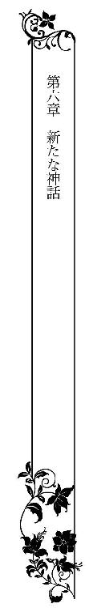
三泊の短い旅だったが、ロシータとクラウディオにとっては互いの気持ちを確かめ合い、愛を深め合った、濃厚な時間だった。
だが、二人寄り添って城に戻ると、なにやら城内が不穏にざわついている。城門前には、クラウディオの腹心の騎士たちが揃って待ち受けていた。
「どうしたのだ？」
さっと下馬したクラウディオに、騎士のひとりが転ぶように駈け寄ってひざまずいた。
「ああ王よ、ちょうど今、そちらへ早馬を出そうとしていたところでした。よくお戻りになられた」
「あわてふためいて何ごとだ？」
クラウディオはあくまで落ち着いている。騎士は青ざめた顏を上げた。
「ボ、ボルヘス王が前触れもなく、突然来訪されました。ただ今、城の貴賓室においでです」
「なに？」
クラウディオの眉がかすかに上がる。ロシータはどきんとして、急いで馬を下り彼の側に寄り添った。
「クラウディオ......」
気遣わしげに彼の腕に手を絡める彼女に向かって、クラウディオは安心させるようにうなずいた。
「大丈夫だ、ロシータ、心配するな」
それから彼は、すぐに騎士に顏を戻した。
「急ぎ着替える。ボルヘス王におかれては、失礼のないようにな──それと」
クラウディオの表情が一瞬で引き締まった。
「私の親書を携えた早馬を、急ぎ出せ」
ロシータは私室で控えているように言われた。
しかし胸騒ぎが収まらない。
突然のボルヘス王の来訪に、ひどく不吉な予感がした。城内もぴりぴり緊張した空気が漂ってるのがわかる。
冷静沈着なクラウディオだが、ボルヘス王は理不尽男だ。いつ逆鱗に触れるかわからない。
（ボルヘス王は私に気のある素振りだった。私がいることで、場が和むかもしれない）
ボルヘス王に媚を売ることは身を切られるより辛かったが、愛するクラウディオのためなら、今はそれも厭わないと思った。
「私を貴賓室へ連れていって」
ロシータは側仕えの侍女に声をかけた。
「お、恐れながら女王陛下。王はお部屋からは、一歩もお出にならぬようにと──」
侍女がかしこまって言うのをさえぎり、ぴしりと言う。
「連れていくのです」
威厳ある彼女の態度に、侍女は恐れおののいて従った。
西の廻廊の奥にある特別貴賓室の前までくると、ロシータは侍女にその場に待機するように命じ、自ら扉を開けた。
「プリオネス女王を陛下に譲れ、と？」
低いがよく通るクラウディオの声が聞こえた。
自分の名前を耳にし、ロシータはぎくりと足を止める。扉を半分だけ開き、そっとその陰から貴賓室の中をうかがった。
宝石で華やかに飾り立てられた部屋には、異国の高価な絨毯が敷かれ、同じく異国の織物を張った豪華な椅子に、どっしりとボルヘス王が腰を降ろしていた。
クラウディオはその前で、床に跪いている。
ボルヘス王は口髭を撫でながら、鷹揚に言う。
「そうだ。バルラ王よ。私はあの娘が気に入った。貴公はなかなか見事にじゃじゃ馬を調教したようだ。あれほど極上な玉は、さすがの私でもまだ手に入れたことがない」
ロシータは悪寒が背中を駆け抜けるのを感じた。
好色で有名なボルヘス王は、自分を譲り受けに来たのだ。いや、クラウディオは部下の立場だ。ボルヘス王はロシータをよこせ、と命令しにきたのだ。
（そんな......絶対に嫌よ！ 私はクラウディオしか愛せない。それが、この世で一番憎い男の歯牙にかけられるなんて......！）
昨日までの天国に昇るような気持ちが、あっという間に恐怖と絶望に変わった。
クラウディオは恭しい態度を崩さないまま、答えた。
「申し訳ないですが──陛下、それだけはどうあっても承服いたしかねます」
「なんと!?」
ボルヘス王の声が怒りに跳ね上がった。
ロシータは呆然とした。あまりにもきっぱりとした物言いだった。
「儂の命に逆らうというか!?」
クラウディオはあくまで静かな声で答える。
「かの女王とは婚姻の約束をしました」
「ははあ──あの娘の色香に、今まで女などに見向きもしなかった朴念仁の貴公も、惑わされたというわけか」
ボルヘス王が嘲笑する。それから彼は、少しおもねるような声を出した。
「だがそれだけの価値があるということか──どうだバルラ王。この国の自治権をやろう。それと引き換えに、あの娘を渡せ」
クラウディオは押し黙った。
ロシータは緊張し過ぎて、心臓がばくばくいうの感じた。
（自治権──独立させてやるということだ。クラウディオの手に、バルラ国が戻ってくる）
「どうじゃ、バルラ王？ 悪い交換条件ではなかろう？」
考え込んだようなクラウディオに、ボルヘス王が言い募る。
クラウディオはふいに返事を返した。鋭い声だ。
「お断りする」
ボルヘス王の眉間に青筋が立った。威厳を傷つけられた彼は、憤怒の声を出した。
「な──貴様、儂が下手に出れば付け上がりおって！ ボルヘス軍の精鋭を揃えて、王都を囲ませていることを知らないのだな。今すぐ、この城を攻めさせ、お前の首を刎ねてやろう！」
（だめ！ そんなことはさせないわ！）
ロシータは頭が真っ白になった。足が自然に前に出た。
彼女は二人の前に決然と立った。
ボルヘス王とクラウディオが、はっとこちらを見た。
彼女は毅然として言った。
「条件を呑みます。私はボルヘス王の元に参ります......！」
クラウディオが思わず声を漏らした。
「ロシータ──君......！」
ボルヘス王は一瞬彼女の気迫に呑まれたような表情をしたが、すぐに耳障りな声で笑った。
「ははは、これは話が早い。女王陛下のほうがよほど素直なようだ。よい、プリオネス女王、こちらへ」
手招きされ、ロシータは唇を噛み締めて歩み寄った。ボルヘス王がむんずと彼女の手を握りしめた。ねちねちした手の感触に、ロシータは嫌悪で吐き気がし、気が遠くなりそうだった。だが、必死にこらえた。
愛するの人のために──。
こんな感情は今まで知らなかった。
国の頂点に立つものとして、敬意を払われ尽くされるのが当然だった。誰かのために自分の犠牲にするなどということは、考えもしなかった。
だが、愛を知ったロシータは、献身という感情を身をもって理解したのだ。クラウディオの幸せのためなら、自分の一番憎悪する男に身を捧げてもいい、そう思った。
「ではバルラ王、彼女は頂いていくぞ」
ボルヘス王の勝ち誇った声に、クラウディオはおもむろに顏を上げた。彼はボルヘス王ではなく、まっすぐにロシータを見つめた。彼女も見つめ返す。
二人の間に、目に見えない感情が流れた。
熱く固い心の絆──。
ボルヘス王は、反応しないクラウディオに業を煮やし、尖った声を出した。
「バルラ王、どこを見ている。返事をしないか」
クラウディオはふっと視線を外し、冷たい目でボルヘス王を見返した。
「これは失礼した、王よ。時間が気になりましてな」
ボルヘス王が怪訝な表情になる。
「時間──？」
クラウディオがうなずいたとたん、ばたばたと荒々しい足音が響き、貴賓室の扉が音を立てて開いた。武装した男たちが剣を構えて立っている。バルラ国の軍人だ。
「何ごとじゃ！」
ボルヘス王の声が裏返る。
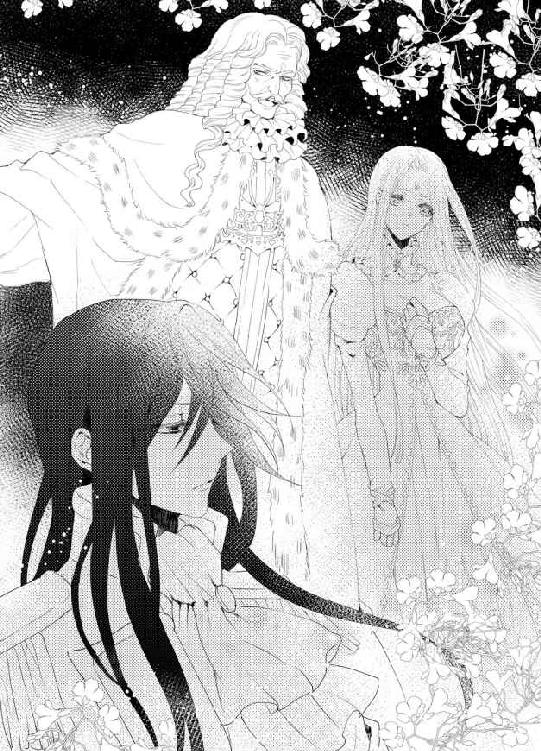
すばやくクラウディオが立ち上がり、懐に隠し持っていた短剣をさっと抜くと、目にも留まらぬ早さでボルヘス王を羽交い締めにし、その喉元に切っ先を突き立てた。
「お静かに！ 騒ぐと今すぐ、咽喉をかっ切る」
ボルヘス王の目が恐怖で血走る。ロシータも唖然として立ちすくんだ。
「ロシータ、王から離れるんだ！」
クラウディオの声にびくりと身体が反応し、彼女は戸口へ後退した。
「女王陛下、御無事ですか！」
聞き覚えのある声がして、バルラ軍の背後からばらばらと人影が飛び出してきた。
「デメトリオ！ 皆......！」
武装したプリオネスの武人たちだ。
デメトリオが素早く跪き、ロシータの手を取った。
「もう大丈夫です。王都の外にいたボルヘス軍は降伏しました」
ボルヘス王が驚愕して、ぐうっと咽喉を鳴らした。
クラウディオは彼を押さえ込んだまま、平静な声で言った。
「そういうことだ、ボルヘス王。たった今、各属国が一斉蜂起し、ボルヘス国に反旗を翻した。今頃、ボルヘス国は雲霞のごとく現れた軍隊に幾重にも取り囲まれていよう。そして、貴公は敵国に囚われたのだ」
「き......貴様......」
ボルヘス王は真っ青になり、怒りと屈辱で全身ががくがく震えていた。
クラウディオは冷静に続ける。
「私は国同士が血で血を争うようなことは、今後一切させないつもりだ。ボルヘス王、各属国の独立を認めよ。そうすれば、あなたの命は保証する。あなたはどこか辺境の地に幽閉されるだろう。だが王族として、敬意をもって遇する」
ボルヘス王はだらだら冷や汗を流しながら、掠れた声を出す。
「もし、嫌だと言ったら......？」
クラウディオの短剣が、ぐっと喉元に押し付けられ、つうっと血が一筋流れた。
「残念だが、貴公はボルヘス最後の王として、非業の死を遂げてもらう」
ボルヘス王の目が飛び出さんばかりに見開かれた。
クラウディオの深青色の目は、ぞっとするほど冷酷だった。ボルヘス王は深く息を吐いた。
「──儂の負けだ──属国の若造王に足元を掬われるとは──」
がくりとうなだれたボルヘス王に、クラウディオが冷ややかに言う。
「属国はひとつでは弱小だが、それがいくつも寄り集まれば、大国に匹敵する力を得ることができる。ボルヘス王、我々を見くびるな」
クラウディオは兵士たちに命じた。
「王を拘束し、地下牢に閉じ込めよ。貴公の幽閉場所が決定するまで、申し訳ないがしばらく不自由を強いる」
ばらばらと兵士たちが駈け寄り、ぐったり力を失ったボルヘス王を引き立て、貴賓室から連行した。その後ろ姿をじっと見送ったクラウディオは、ゆっくりロシータに顏を巡らせた。彼の表情は穏やかで、わずかに笑みを浮かべている。
「おいで、ロシータ、我が女王」
彼が両手を大きく広げた。
「ああ──クラウディオ、クラウディオ！」
安堵と愛情で胸がいっぱいになったロシータは、夢中で彼の胸に飛び込んだ。逞しい腕が、ぎゅっと力強く抱きしめてくれる。
「君は──いつでも私を驚かせてくれるな。勇敢で気高い私の恋人」
「私、夢中で......ああ、愛してるわ、愛してる、クラウディオ」
ロシータは子どものように泣きじゃくりながら、繰り返した。
「私もだ。君ほど素晴らしい女性は、この世にはいない」
抱き合っている二人に、デメトリオが遠慮がちに近づいた。
「バルラ王、お取り込み中ですが──ただ今、ボルヘス国の王城に白旗が上がったとの報告です」
クラウディオはロシータを抱きしめたまま、大きくうなずいた。
「では、我々の勝利だ。もはや属国ではない。我々の国が、それぞれの手に戻って来たのだ」
デメトリオを含め、その場にいる者全員が感極まり、涙ぐんだ。
「明日にも、各国の王を集め、今後の政策を話し合おう。デメトリオ隊長、すまないが各方面への連絡を頼む」
クラウディオの言葉に、デメトリオは最敬礼した。
「承りました」
それから彼は、ロシータに微笑んだ。
「女王陛下、プリオネス再興がかないましたぞ」
涙に濡れた顏を上げたロシータは、花のように艶やかに微笑んだ。
「いいえ、デメトリオ。もはやプリオネスという国はありません」
けげんな表情をした彼に、ロシータはきっぱりと言った。
「今日から、プリオネスとバルラはひとつの国になります。そう──バルオネス、という新しい国になるのです」
その場が水を打ったように静まった。
ロシータはクラウディオの手をしっかり握ると、彼らに向かって高らかに宣言した。
「私プリオネス女王ロシータは、このバルラ王クラウディオと結婚します。二つの国はひとつになり、さらなる発展をするでしょう」
次の瞬間、貴賓室が震えるほどの歓声が響き渡った。
「万歳！ バルラ王、プリオネス女王、万歳！」
「万歳！ 新しい国に栄えあれ！」
感動で身動きできないでいるロシータを、クラウディオがそっと抱きしめた。
「ロシータ──私の愛しいひと」
彼は万感の思いを込めた声でささやく。それから彼女の細い顎をそっと持ち上げ、唇を重ねた。
ロシータは愛する男の香りに包まれ、うっとりと口づけを受ける。
二人を取り巻く歓喜の声は、さらに高まり止むことはなかった。
その晩。
激動の一日を終えたクラウディオとロシータは、深夜にやっと二人きりになり、寝室のバルコニーで寄り添い、満天の星空を見上げていた。
「ああ──こんな日が来ようなんて......プリオネスが陥落し、ボルヘスに囚われた時から、もう二度と祖国へ戻ることはかなわないと覚悟していたの」
ロシータは深々とため息を漏らした。
「あなたは、今日の蜂起をずっと計画していたのね」
彼女の華奢な肩を抱き寄せ、クラウディオはうなずく。
「ああ──もう何年もかけて、各属国を取りまとめる策略を進めていたんだ。我々が完全に征服されたように見せかけ、裏で各王と緻密に連絡を取り合っていた。あのアスラ砂漠の遠征の時も、反乱軍を鎮圧するふうを装い、蜂起の計画を打ち合わせたんだ」
クラウディオはすうっと流れる星を目で追いながら、続ける。
「だが、最終的な決め手がなかなかなかった。ボルヘス王を油断させる手段が。あの男が無類の女好きであることは知っていたが、天下を手に入れたボルヘス王のまわりには極上の美女が揃っていて、並大抵の女性には心が動かない。そこに天使のように美しい君が現れた。私だけではなく、ボルヘス王も君に魅了されたのは一目瞭然だった。だから、悪かったが、うんと磨き上げて美しさを増した君をボルヘス王に見せ、あの男の劣情を煽ったんだ。そして、君が結婚を承諾したことを大々的に披露した。人のものを奪うのが大好きなボルヘス王が、必ず食いついてくると思った」
「そうだったの......」
「君を救い出しに、プリオネスの騎士たちが潜入したことは知っていた。彼らは実に勇敢だ。私は彼らと直接交渉し、力を合わせるよう協力を要請したんだ」
「あの頑固なデメトリオを、よく説得できたわね」
「彼を始め、プリオネスの者たちは女王の君をとても崇拝し敬愛している。私がどんなに君が素晴らしく魅力的で、どんなに君を愛しているか精魂込めて語ったんだ。彼らは、それで私に力を貸してくれることを納得したんだ」
「ま......あ」
ロシータは顏から火が出そうだった。プリオネスの騎士たちの前でのろけた、ということではないか。
「あなたって案外恥知らずね」
照れ隠しに憎まれ口を叩く彼女を、クラウディオは愛おしそうに見つめた。
「きっと、プリオネス国の国民全員が、女王の君に魅了され恋していたんだと思うよ」
「な......！」
ますます顏が火照ってしまう。だが、今まで自分がそれほど国民に愛されているという自覚がなかったので、胸は歓喜でいっぱいになる。孤高の自分は、敬われこそすれ慕われることなどないと思い込んでいた。その頑なな気持ちが、ますますロシータを孤独に追いやっていたのだ。
「バルラ国民も、さぞや国王を敬愛しているでしょうね。あなたにはカリスマ的な魅力があるもの。もし、大陸を支配するにふさわしい王がいるとしたら、それはあなただわ」
クラウディオは首を振った。
「私はボルヘス王の二の舞はしたくない。欲望と権力を肥え太らせると、大事なものが見えなくなる。私は自分の国と、君を守るだけでいい」
ロシータは手すりに置かれていた男の手に自分の手をそっと重ねた。
「あなたは素晴らしい人だわ」
クラウディオが微笑んだ。
「めったに誉めない君に誉められると、言葉以上の価値を感じるね」
「またそういう言い方をして......素直に言ったのに、もう知らない」
むっとして唇を尖らせると、そこに軽く口づけされる。
「──気をわるくしないで、ロシータ」
優しく謝られ、ぽっと頬が赤くなり恥ずかしさに顏を反らせ、つんとして言う。
「私、もう二度とあなたに嘘をつかないって、誓ったんですもの」
「だからすまないって、こっちをお向きロシータ」
渋々というふりで顏を向けると、再び啄むような口づけを繰り返される。そのうち、戯れの口づけは次第に深いものにかわって──。
「んふ......ん、んん......」
ロシータの方からも舌を差し出し、互いの口腔を存分に味わった。舌と舌を絡ませ、愛情を伝え合うような熱い口づけを交わす。
「ぁ......ふぁ、あ......」
ロシータの身体が甘く脱力し、クラウディオの腕がそっと細腰を抱えてくれる。長い口づけの果てに、クラウディオがちゅっと音を立てて唇を離した。
「は......ぁ、あ......」
うっとりと手すりにもたれて息を継いでいると、一歩後ろに下がったクラウディオがおもむろに膝をついた。そして、部屋着の内ポケットからなにか取り出すと、貢ぎ物のように彼女に差し出した。
「ロシータ、改めて申し込む。私と結婚してほしい」
男は小さな箱を捧げ持っている。天鵞絨張りの小箱の箱が開いていて、その中にきらきら光る大粒のアメジストの指輪が収まっていた。
「っ──これ......！」
ロシータは言葉に詰まった。
クラウディオがわずかに目元を染める。
「君への婚約指輪だ。君の瞳の色と同じ深く澄んだ紫水晶を選ばせた──受け取ってくれるか？」
胸が喜びと切なさでいっぱいになる。喉元まで熱いものが込み上げ、声が出ない。必死に涙を呑み込み、大きくうなずく。
「ええ......ええ、もちろんよ」
震える左手を差し出すと、クラウディオが箱から取り出した指輪をそっと嵌めてくれる。
「綺麗......」
指輪を目の前にかざし、感無量でつぶやく。
クラウディオは彼女のもう片方の手を取り、その甲に口づけた。
「よかった──受け取ってもらえて」
その声が腹の底から安堵したように聞こえて、ロシータは苦笑いする。
「やだ、私が断るとでも思った？」
「その可能性はあるからね。君ほど予測できない女性はいないよ。思わぬ不意打ちを何度喰らわされたことか」
ほっとしたのか、クラウディオがいつもの軽口を叩く。
「ひどい言いようね」
「でも、そこがスリリングでぞくぞくするんだ」
ふいに立ち上がったクラウディオは、ロシータの背中を抱き寄せると、今度は噛み付くような口づけをしてきた。
「ふ、あ......んん、んんんっ」
かちりと歯がぶつかる音がするほど、荒々しい口づけだ。舌を強引に押し込まれ、口蓋から咽喉奥まで激しく掻き回される。窒息しそうなほどの勢いで、男の胸元に必死でしがみついていたが、みるみる全身から力が抜けてしまう。
「......ん、あ、ぁ、は......」
口腔を存分に貪られ、ぐったりとなすがままになる。溢れた唾液を啜り上げたクラウディオが、唇をわずか離し、艶めいた声でささやく。
「覚えているか？ 初めて出会った時。若者だと取り押さえたら、世にも稀なる美女だった。ボルヘス王の前で初めて口づけたとき、血が滲むほど噛み付かれた。なついたかと思えば、たちまち短刀を振り回す。怖いもの知らずなのに、暗闇では眠れない。気高くて男に決して媚を売らないのに、ふとした仕草がとても愛らしくて──」
クラウディオの唇が、頬や耳朶を啄む。片手が胸の膨らみを強く揉みしだく。
「君はいつだって私の心を掻き乱す──こんな女性は生涯で二度と現れないだろう」
「クラウディオ......あ......」
男の情熱的な愛撫に、ロシータの身体がみるみる火照ってくる。下腹部の奥がざわざわし、とろりと熱い蜜が滲み出してくる。
「愛している──愛している」
「あ、だめ、クラウディオ、こんなところ......で......」
バルコニーの手すりに背中を押し付けられ、仰け反りながらもロシータは首をふるふると振る。
「がまんできない──長い一日だった。国が我が手に戻り、君が求婚を受け入れてくれ、私の生涯で最高の夜だ──その思い出に──」
部屋着の腰帯をむしり取るように外され、前身ごろがはらりと開いて豊かな乳房がこぼれ出た。柔らかな胸の谷間に顏を埋め、すでに硬く尖っている紅い突起を啄まれる。
「っ、あぁ、あ......」
痺れる愉悦が先端から子宮口に走る。甘い鼻息が漏れてしまう。
「可愛い声だ、もっと聞かせて──」
男は陶然とした表情で、凝った乳首を舌先で擽る。かと思えば、いきなり歯を立てて痛みを伴う刺激を与えてくる。
「あぁ、あ、ん、ふぅ、ん......」
緩急自在な愛撫に、身体中の血が熱くなり、下腹部がずきずきと飢えてくる。
仰け反って見上げれば、満天の星空には幾万のもの宝石をばらまいたような天の川。まるで夢のようだ。ロシータも、また予想だにしなかった自分の運命に思い巡らせる。
突然祖国を失い、見知らぬ国で囚われ女として身体を開かれ、男の身体を知り、恋を知った。あのままプリオネス女王としてつつがなく生きていれば、決してクラウディオと結ばれることはなかったろう。
ロシータはぶるっと頭を振った。
もはやクラウディオのいない人生など、考えられない。彼への愛無しで生きていくことなどできない。そう思えば、今までの屈辱的な過酷な運命ですら、受け入れることができた。
「ああ、クラウディオ、クラウディオ、愛してるわ、あぁ、もっと......」
思わず彼の頭を強く抱き寄せ、すらりとした片脚を彼の腰に回していた。
「ロシータ──」
男の手が太腿の狭間を弄ってくる。甘い悪寒が駆け抜ける。長い指が蜜口を探れば、そこはもう恥ずかしいほどに潤っている。
「もう、こんなに──」
クラウディオはいきなり三本もの指を、くちゅりと膣内に突き入れてきた。
「はあっ、ああぁっ」
鋭敏な膣襞を激しく抉られ、ロシータは大きく仰け反って嬌声を上げた。
「熱い──きゅうきゅう指を締めつけて──私を欲しがってる」
溢れる愛蜜を掻き出すように指を抜き差ししながら、クラウディオが耳朶をきつく噛んだ。
「ひ、う、あ、ほ、欲しいわ......あなたが、欲しい......今すぐ......」
自らも男の耳朶や耳孔を舌で愛撫しながら、ロシータは艶かしい声でささやく。
「ロシータ、私もだ──」
クラウディオが素早く自分の部屋着の腰帯を解き、硬く反り返った半身を掴み出す。熱い亀頭が蜜口に触れるだけで、淫らな予感に全身がぶるりと震えた。陰唇を割り開いて、男の滾りが一気に最奥を貫く。
「っ、きゃ、あぁ、あああぁっ」
瞬時に快感の源泉に駆け上り、背中を弓なりにして熱く喘ぐ。
「ああ、いつもにも増して、熱い──」
男が深いため息をつき、腰骨を押し付けるようにして子宮口を太い先端でぐるりと掻き回しした。
「ひぅ、あ、あぁ、当たって......」
深い愉悦が弾け、ロシータは息を呑む。思わずいきんで男の太茎を締めつける。それを合図のように、クラウディオは彼女の床についていた方の脚を抱え上げ、前後左右に激しく腰を打ち付けてきた。
「っはぁっ、あ、はあ、あぁ、あ」
身体が宙に浮く形になり、ロシータは必死で男の背中に両腕を回してしがみついた。男の首筋から汗と欲望とオーデコロンが交じった扇情的な香りが立ち上り、全身の血が沸き立つ。
「ロシータ、いい──すごく」
クラウディオはくるおしい早さでいきり立つ欲望を叩き付けてくる。深く貫かれるたび、脳芯まで激く喜悦の衝撃が走り、もう何も考えられない。
「はぁ、あ、んぁ、あ、私も、感じる......っ」
激しい抽挿に華奢な身体が跳ね上がり、天空に吹き飛ばされそうな錯覚に陥る。感じ入った濡れ襞が決して離すまいするかのごとく、屹立を引き絞り奥へ奥へと誘う。
「は、あんっ、す、ごい、壊れて......あぁ、はぁ、あ、もっと......もっと......っ」
男の欲望を全て感じようと、ぎゅっと目を閉じ下腹部へだけ意識を集中する。突き上げられたびに、瞼の裏に頭上の天の川のような光の粒が弾ける。
「ロシータ、いくらでも──私の愛しい、ロシータ」
肉棹が突き上げるたび、じゅぷじゅぷと卑猥な音を立て、泡立った愛液が粘膜の合わせ目から吹きこぼれる。あまりに濡れ過ぎて、ともすれば引き抜いた屹立がつるりと外れそうになるくらいだ。クラウディオは彼女の両脚を抱え込み、手すりに強く押し付けるようにし、最奥に挿入したまま腰を円を描くように蠢かせた。
「あ......んくぅ、あ、あ、なんだか......あぁ、変に......あぁ、そこ、だめ......っ」
ふくれた根元と脈動する肉茎が、ひりつく秘玉と鋭敏な箇所を同時に責め立て、もはやどこまでが絶頂かわからないほど感じてしまう。
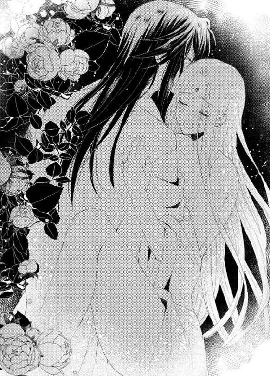
「好いのか？ 感じるか？ 私を感じるか？ もっとだ──」
クラウディオは切羽詰まって声を出しながら、さらにぐりぐりと子宮口を抉り続ける。
「ひぅあ、あ、感じる......あぁ、すごく感じる......あぁ、どうしよう、あぁ、止まらない......っ」
こんなに満たされた思いで達するのは初めてかもしれない。ロシータは随喜の涙をこぼしながら、際限なく絶頂に飛び続ける。
身体中でクラウディオの欲望を感じ、自分の心が世界に向かって全解放されていくような気がする。愛する人とともに、最高の喜悦に向かってぐんぐん昇っていく。
「あぁ、私、もう、だめ......一緒に......あぁ、クラウディオ、お願い、一緒に......」
腰を卑猥に蠢かし、媚襞が男の脈動をぎゅうっと締めつける。
「っ──いいとも、一緒に達こう──ロシータ」
クラウディオが息を弾ませ、彼女を自分の身体ごと手すりに押し付け、最後の仕上げとばかりに一心不乱に腰を穿つ。
「んん、ふぁ、あ、も、あ、達く、あぁ、すご......も、だめ、あぁ、だめ......っ」
頭の中で愉悦の閃光が何度も瞬く。全身が硬直し、息が詰まる。めくるめく官能に燃え尽くされ、気が遠のく。
「っ──達く──」
クラウディオが獣のように低く咆哮した。最奥で亀頭がぶるるっと震え、その振動にロシータはさらに高みへ昇りつめる。
「ふぁ、あ、あぁあ、あぁあぁ、あぁあああぁっ」
どうっと熱い欲望の白濁が迸る。
「あ、熱い......あぁ、熱い......はぁ、はっはぁっ......」
ロシータは白い喉を仰け反らせ、荒く呼吸を繰り返す。びくびくと膣襞が痙攣し、放出された精をことごとく呑み込んでいく。
何度か大きく腰を打ち付けたクラウディオが、深く息を吐き動きを止める。
深夜の静寂に、愛し合う二人の呼吸音だけが響く。
「......はぁ、はっ......あぁ、はぁ......」
まだ重なり合ったままぼんやり目を開けると、潤んだ瞳に満天の星空に何十という星が流れていくのが映った。
「あ......ぁ、ク、クラウディオ、星が......あんなに星が、流れ......」
ロシータの髪に顏を埋めていた男が、そっと顏を上げて天を仰ぎ見た。
「あれは──流星群だ──五十年ごとに現れるという、星降りの日......そうか、今宵だったのだな」
クラウディオがゆっくり身を起こし、彼女を抱いたまま立ち上がる。
「すごいわ──私、流星群なんて生まれて初めて......」
あまりに雄大で荘厳な自然の見せ物に、ロシータはうっとり見惚れた。
「次の流星群の訪れも、君とこうして見上げられればいいな」
空を仰ぎながらクラウディオがしみじみした声を出す。
「──もちろんよ、五十年後もきっと二人で、星を見上げましょう」
ロシータは胸にあふれてくる愛情を込め、そっと彼の頬に口づけした。クラウディオも優しく口づけを返しながら、言う。
「きっと一緒に」
それから彼は片目をつぶって悪戯っぽく言う。
「どうだ、ロシータ。今なら望みごとがいくらでも叶え放題だぞ」
ロシータは、さーっさーっと尾を引いては消える流星を見上げ、くすりと笑った。
「そうね、なんだかありがたみがないくらいだわ」
彼女は視線を男に戻し、しみじみした声を出した。
「私の望みはただひとつ。あなたとともに生きること。それだけだわ。そして、その望みは、星に叶えてもらおうとは思わない。私自身の愛情で叶えるの」
クラウディオが慈愛の籠った瞳で見返す。
「願いは自分で叶える──それでこそ、私の愛した気高き女王だ」
それから二人は、優しい口づけを何度も交わし、再びつきることのない夜空の奇跡に見入るのだった。
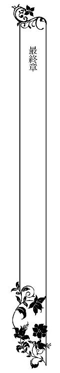
その日はバルオネス建国五周年の、目出たい日であった。
そして、新しい国にとって特筆すべき日でもあった。
五年の歳月をかけ、アンヘル山の麓に築いていた隧道が遂に完成の日の目を見たのだ。
この隧道により、今はプリオネス地区とバルラ地区に別れていた双方が、結ばれることになったのだ。かつては辿り着くのに一週間以上も要したのが、隧道を使えば馬車でわずか二時間で行き来できる。
「アンヘル街道」と名付けられたこの隧道の、プリオネス側とバルラ側の双方の入り口には祝いに駆けつけた民たちがひしめきあっている。
バルラ側の入り口では、王と王妃が揃って開通式に参加していた。
隧道の入り口に真っ赤なテープが貼られている。
真っ白な礼服に身を包んだ一組の男女が、しずしずと現れた。
輝くばかりに美しいバルオネス国の王と王妃だ。
クラウディオは端整な容姿に王としての威厳が加わり、いっそうに男っぷりが上がっている。そして、ロシータは成熟した女らしさにどこか初々しさを残し、匂い立つような美貌だ。
「ああ......クラウディオ、私、手が震えているわ」
ロシータは緊張のあまり、側にいるクラウディオに声をかけた。
「我が国念願の一大事業の完成だからね。私も同じさ」
今では大臣職に就いているデメトリオが進み出て、花飾りのついた鋏をうやうやしく差し出した。
「どうぞ陛下、テープカットをお願いいたします」
「うむ」
新しい鋏を受け取ったクラウディオは、そっとロシータの手を取り、一緒に鋏を握った。
「さあロシータ、共にテープを切ろう」
「はい」
二人は一緒にテープに鋏を入れる。
はらりとテープが左右に落ち、同時に控えていた楽団が荘厳な国歌を演奏しだした。わあっと民たちから歓声と拍手が上がる。
「万歳！ バルオネス！」
「国王御夫妻に永遠の幸あれ！」
嵐のような歓呼の中、二人は用意された白馬の馬車に乗り込んだ。
このまま隧道を進み、あちらで待ち受けているプリオネス地区の民たちの歓迎を受けるのだ。
ぴかぴかのお仕着せに身を包んだ御者が軽くひと鞭くれると、馬車は滑るように前に進んだ。
隧道の中は、頑丈な柱に支えられ、数メートルごとに明々と松明が灯り、思ったより圧迫感がない。
「ああ、とうとう私たちの悲願が叶ったのね」
ロシータは胸がいっぱいになり、涙声になる。
「これからは両地区が自由に行き来できるようになり、ますます産業が栄えるだろう」
クラウディオも感極まった声を出す。
「とうとう、新しい神話が完成したのよ」
ロシータはそっと彼の手に自分の手を重ねた。
「引き裂かれた二つの国が、再びひとつに──」
「ロシータ──」
ふいに男の手がふんだんにドレープを寄せたドレスのスカートの中に潜り込んできた。
「っ──」
内側で柔らかな太腿を撫でられ、ロシータはびくりと肩を竦ませる。
「や......なにを戯れを......」
身を捩ろうとする彼女に、まっすぐ前を向いたクラウディオがしれっと言う。
「しっ──周囲の者にばれるぞ」
馬車の後からは、賑やかな音楽を奏でる楽団、大臣たち、そして大勢の民たちが続いているのだ。
「あなた──お祝いの日よ、不謹慎すぎ......ぁ......」
腿の付け根を弄られ、甘やかな感覚にぞくりと下肢が震える。
「向こうに到着するまで二時間もある──私たちだけで密かに祝おう」
悪戯な指が、下着の縁から陰唇に忍び込む。
「な......こんなこと......」
ロシータは頬を染めて唇を震わせ。男の指がくちゅりと蜜口を掻き回した。
「あっ......」
思わず甘い鼻声を漏らしそうになり、慌てて歯を食いしばる。
「君のここもこの良き日を喜んでいるようだ」
ぬるっと秘玉を転がしながら、クラウディオがほくそ笑む。
「っ......ん、や......」
ロシータは声を押し殺し、恨めしげな目でクラウディオを見つめるが、彼は平然としている。
「どうせ今日一日は、祝典で終わってしまうだろう。君と二人きりになるのは深夜だ。それまでに、君の気持ちを高めておいてやろう」
「ふ......ぁ、そ、そんな必要、ないわ......」
「あるとも。私はね──」
クラウディオがふいに端整な顏をこちらに向けた。
「もう一人、子どもが欲しい」
「クラウディオ......」
ロシータの頬が真っ赤になる。
二人の間には、三歳になる皇太子バルタザルがいる。父の深青色の目と利発さ、母の輝く黄金の髪と気高さを受け継いだ、美しい子だ。彼は隧道の向こう側で愛犬フェアとともに、祝いの花束をもって両親の到着を待ち受けているのだ。
「いや、もう一人とは言わず、何人でもだ。でもまず、今度は君によく似た可愛い王女がいいな」
「あなたったら......」
不世出の秀でた王として崇められている彼の、こうしたちょっとした少年ぽいところに、ロシータはきゅんと胸をつかまれてしまうのだ。
「ね、いくらでもあなたの子どもを産んであげますから、どうか、手は離して......」
諌めようとすると、いきなりつぷりと奥に指が突き入れられ、あやうく声を上げるとこだった。
「だめだ」
「もう......っ」
ロシータは紫色の瞳で男を睨みつける。それは口惜しいからではなく、迫り上る愉悦に次第に心地好くなってしまったからだ。
「あちらでバルタザルが出迎えるまで、少しだけ楽しもう」
男の指が、彼女の一番感じやすい部分を掻き回す。
「......っ、あ、ん......ん......」
もはや感じ出して、どうしようもない。
ロシータはクラウディオに身をもたせかけ、うっとりと目を閉じた。そして、少しだけ語調を強めた。
「あなたほど不埒でずるい国王はいないわ」
「そういう国王が好きなのだろう」
「そんなわけないでしょう。私が好きなのは......」
ロシータは婀娜っぽく微笑んだ。
「あなたそのものよ」
「っ──君こそ、ずるいな。そんなことを言われたら、男は骨抜きだ」
クラウディオが一本取られたというように、笑った。
仲良く寄り添う国王夫妻の姿は、どこから見ても幸せそのものだった。
あとがき
皆様こんにちは、すずね凜です。
今回は、ツンデレヒロインです。
ツンヒロインは苦手よという方でも、ツンといっても、女王としての立場やプライドがそうさせているだけで、ほんとうはとっても初心で可愛らしいヒロインなので、ご安心を。
主人公たちは、国王と女王という一国を背負う立場なのですが、絶対的権力者ではないのです。もっと国力の大きい権力者に翻弄されてしまうという──。
乙女系のヒーローは、スーパー権力者で「俺についてこい」的パーフェクトな設定が多く、私もそういう主人公をよく描きます。ヒロインにとっては安心おまかせのヒーローです。
それも素敵だけど、人の心の痛みをわかる繊細なヒーローも、好きなんです。ヒロインと寄り添って、彼女の苦しみをわかち合ってくれる男性。
読者の方々にもいろいろなヒーローの好みがあると思うので、そういうヒーローも好きよ、って言ってもらえると嬉しいです。
でも次回は、ドＳながんがんタイプのヒーローを書く予定です。実はそっちも好きです。
どっちやねん──愛してくれる素敵な殿方なら、なんでもアリ、ですー。
ところでこのお話のサブタイトルの、「熱砂の王」ですが。もともとヒーローの国は高地にあり、どちらかといえば雪国系なんですね。ただ、彼は何度も砂漠への遠征を行い、ヒロインとの最初の出会いも砂漠の中だし、本人が秘めた熱い情熱の持ち主なので、いいんじゃないかと思い、そうつけました。ヒロインが「氷の女王」ですから、彼女の頑なな心を溶かしていく意味でも。
砂漠といえば、今より若い頃、私がトルコ方面へ一人旅に出かけた時の話です。
乗っていた乗り合いバスが、砂漠の真ん中の道路で他の車と衝突事故を起こしてしまったのです。けっこう当時のトルコの人の運転は乱暴で、どの車もびゅんびゅん飛ばしていたんですね。どかんとぶつかり、一瞬ひやっとしました。
幸い怪我人は出ませんでしたが、バスの横腹は大きくへこみエンジンが不調になり、代わりのバスが来るまで、乗客たちは近隣の村で待機することになってしまいました。
砂漠の小さな村です。
村人たちはとても親切に、飲み物をくださったりして、事故に遭った私たちをもてなしてくれました。ただ、乗客の中で日本人が私一人で、村人たちは誰一人日本人を見たことがなかったのですね。
で、「日本という小さな島国から来た女の子」（女の子って歳ではなかったのですが、小柄な私は外国へいくと、いつもものすごく若く見られるんです。大学生でアメリカいった時も、「小学生が一人でこんな国にきてはいけないよ」などと言われたものです）を見に、村人たちが入れ替わり立ち替わり、私のところに来るんです。好奇の目にさらされて、けっこう緊張しましたね。
日本語を書いてくれといわれて漢字を書くと、
「神秘的な文字だ！」
と、ものすごく感動されました。持っていたメモ帳の紙で、折り鶴を折って見せた時は、歓声が上がり、
「日本人は魔法を使うのか！」
と、大絶賛。冷や汗もんでした。
特に村の若い男性たちが、東洋の女の子に興味津々で、ジュースだのお菓子だのどんどん持ってきてくれ、いやはや、後にも先にも私の人生で、こんなにモテたことはなかったくらいですわ（遠い目）
終いには、文通してくれという人まで現れ、これも何かの縁だと、住所を交換。
日本に帰国してから、拙い英語で親切にされたお礼の手紙を書きました。
すると、ずいぶん経ってから、これまた拙い英語でのお返事が戻って来て、
「またいつか、村に来てください」
と書いてありましたが、あれからもうずいぶんと月日が過ぎ、未だ、それはかなわないままです......。
という、私の砂漠の想い出でした。
今回イラスト担当のことね壱花先生には、とても色っぽく素敵な挿絵を描いていただき、感動ひとしおです。
そして、いつも丁重に打ち合わせしてくださる編集さんにも感謝です。
また次回のロマンティックなお話でお会い出来ますように！
すずね凜
二度目の初夜
春爛漫のその日は、新国バルオネスにとって、歴史の一ページ目を飾るのにふさわしかった。
クラウディオ王とロシータ女王の結婚式が、大々的に執り行われたのだ。王都の大聖堂で結婚の誓いを取り交わした二人は、真っ白な無蓋の馬車に乗り、大通りをパレードした。二人の結婚を祝福しようと、数万人もの民たちが沿道にひしめき歓喜した。
盛り沢山の祝いの行事に追われた二人が、やっと解放されたのは、夜半過ぎだった。
「ようこそ我が妻、私たちの新居へ」
特注のウェディングドレスに身を包んだロシータを抱き上げ、クラウディオはバルラ城の奥に新しく建てた離宮の入り口に立った。
「ねえ、クラウディオ。もう下ろしてちょうだい」
横抱きにされたロシータが、頬をわずかに染めて言う。
「そうはいかない。結婚したらこうやって新居の門をくぐるのが、習わしだ」
彼はそのままゆっくりと建物の中に入った。奥の寝所に辿り着いても、誰も出迎えに出なかった。
「今夜だけは、使用人を全員引き払わせた。君と二人きりの、初夜だもの」
クラウディオが愛おしげにロシータの頬に唇を寄せた。
「初夜......」
その艶かしい言葉の響きに胸をときめかせながらも、ロシータは照れ隠しにぞんざいに言う。
「今さら、なんだか気恥ずかしいわ」
男の唇がゆっくり耳朶や首筋を移動してくる。
「なにを言うんだ。君と睦み合う時は、いつだって私は初めてのように昂るよ」
長い金髪を頭の上に結い上げているので剥き出しのうなじに口づけされ、ぶるっと背中が震えた。クラウディオはそのまま、深く襟のくれた胸元の盛り上がりに顏を埋めてくる。
「あ、だめ......まだ......」
彼の愛撫が性急になるのを感じ、ロシータは慌てて身を捩った。
「いいだろう？ 晴れて夫婦になったんだ」
「でも、まだドレスを......」
「構わない。純白のドレス姿の君を乱したい」
天蓋付きのベッドに押し倒され、レースの裳裾を長く引くウェディングドレスのスカートをゆっくり捲り上げられた。絹のストッキングに包まれたすんなりした脚を、クラウディオのしなやかな手が這い回る。
「あ、ぁ、だめ......」
それだけで下腹部がきゅんと疼く。ぬるついてきた股間をもじつかせ、ロシータはまだ儚く抵抗する。
「君のだめは、いい、という意味だからね」
男が悪戯っぽく言う。長い指が、ドロワーズの裂け目から秘裂に忍び込む。
「は......あぁん、意地悪......」
甘い痺れに仰け反りながら、ロシータはうっとりと身体の力を抜いていく。
おしまい♥
溺愛の虜囚姫 ～熱砂の王は氷を蕩かす～
電子第１版発行 ２０１６年２月29日
著 者 すずね凜
発行所 株式会社ジュリアンパブリッシング
東京都千代田区九段北１‐５‐９‐３Ｆ
０３‐３２６１‐２７３５
ＨＰ http://www.julian-pb.com/
※本電子書籍は左記の作品に基づき製作されました。
発行 株式会社ジュリアンパブリッシング
ロイヤルキス文庫『溺愛の虜囚姫 ～熱砂の王は氷を蕩かす～』
(初版発行 ２０１５年11月30日)
(c)Rin Suzune 2016
※本書の一部、あるいは全部を無断で複製複写（コピー）、転載、上演、放送することは法律で認められた場合を除き、著作権の侵害となるため、禁止します。